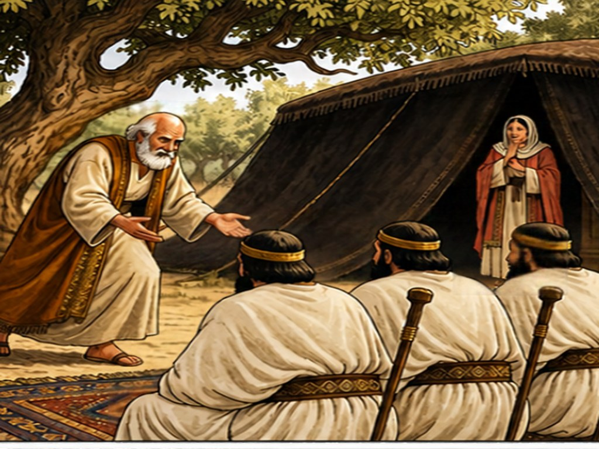
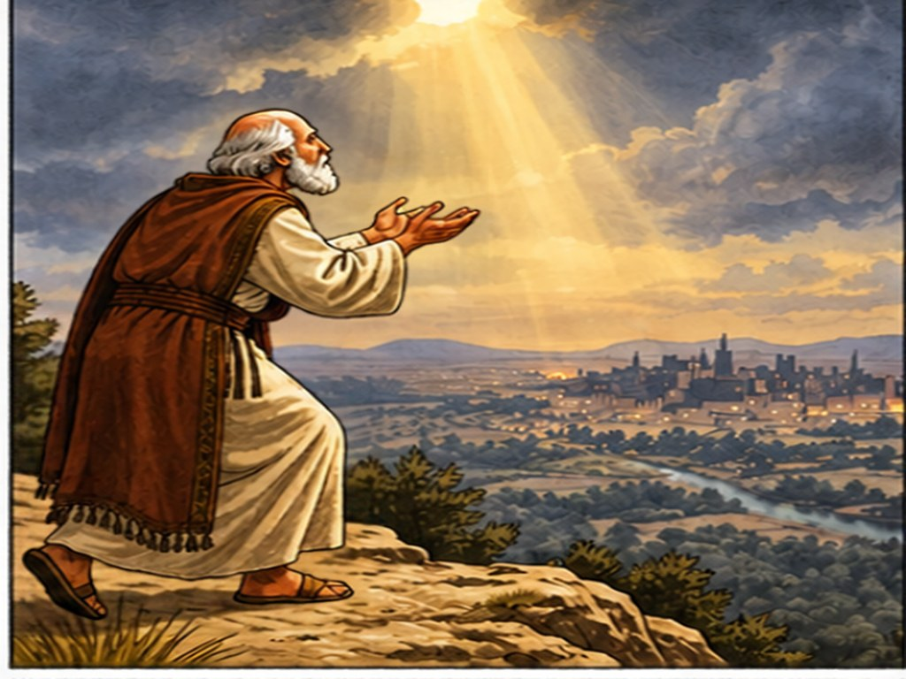
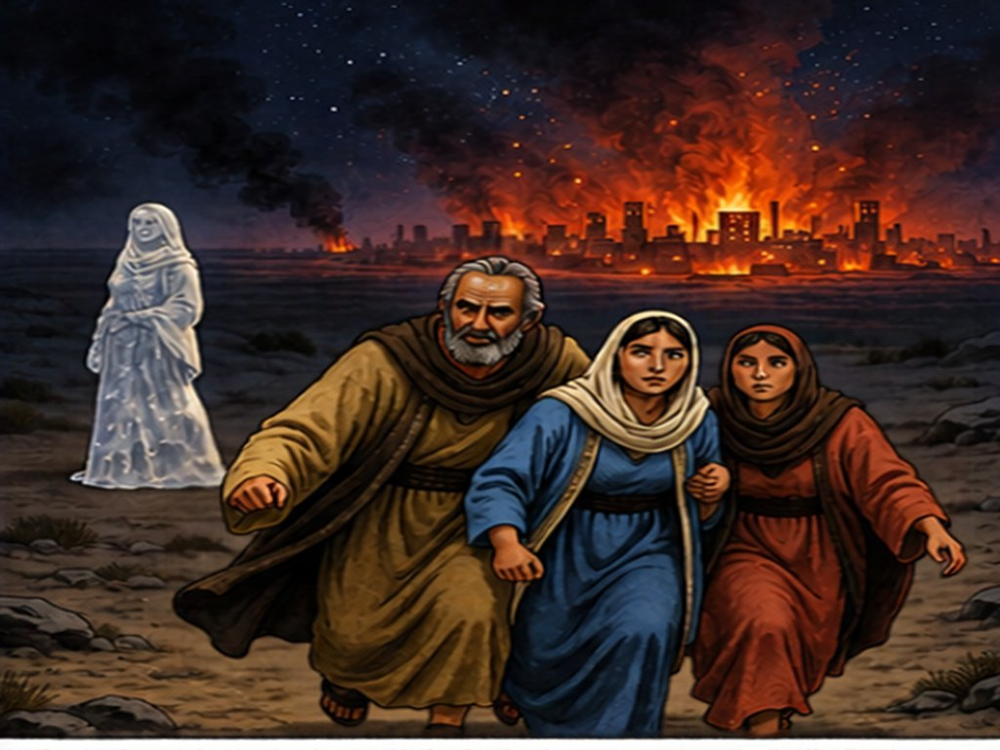
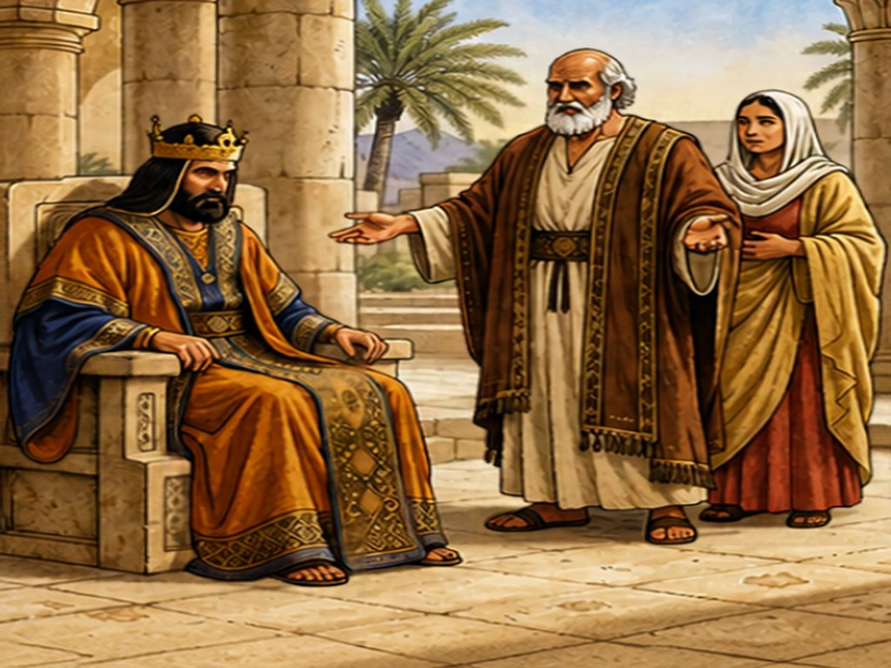
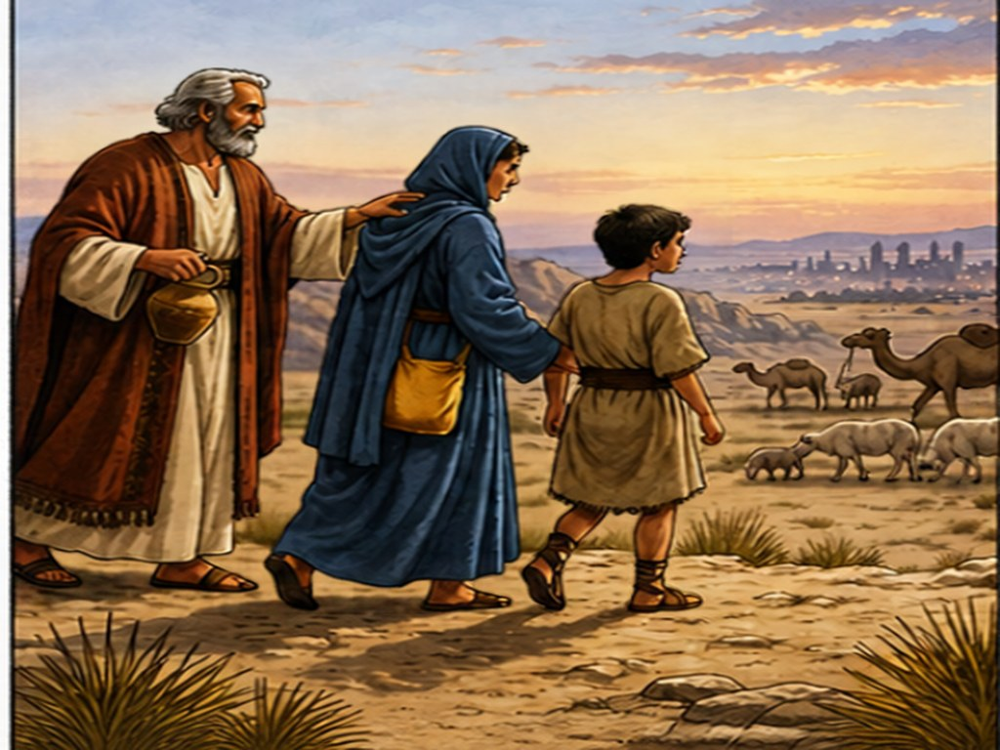
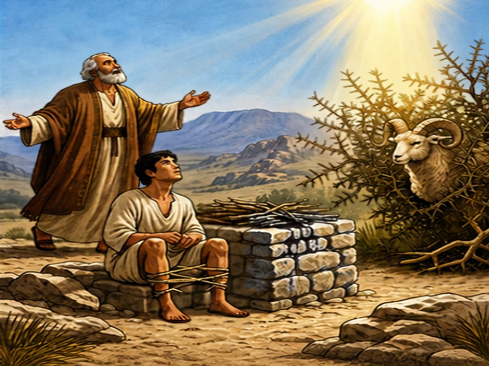

וַיֵּרָ֤א אֵלָיו֙ יְהֹוָ֔ה בְּאֵלֹנֵ֖י מַמְרֵ֑א וְה֛וּא יֹשֵׁ֥ב פֶּֽתַח־הָאֹ֖הֶל כְּחֹ֥ם הַיּֽוֹם׃
וירא אליו יהוה באלני ממרא והוא ישב פתח־האהל כחם היום׃
L'Éternel se révéla à lui dans les plaines de Mamré, tandis qu’il était assis à l’entrée de sa tente, pendant la chaleur du jour.
וַיִּשָּׂ֤א עֵינָיו֙ וַיַּ֔רְא וְהִנֵּה֙ שְׁלֹשָׁ֣ה אֲנָשִׁ֔ים נִצָּבִ֖ים עָלָ֑יו וַיַּ֗רְא וַיָּ֤רׇץ לִקְרָאתָם֙ מִפֶּ֣תַח הָאֹ֔הֶל וַיִּשְׁתַּ֖חוּ אָֽרְצָה׃
וישא עיניו וירא והנה שלשה אנשים נצבים עליו וירא וירץ לקראתם מפתח האהל וישתחו ארצה׃
Comme il levait les yeux et regardait, il vit trois personnages debout prés de lui. En les voyant, il courut à eux du seuil de la tente et se prosterna contre terre.
וַיֹּאמַ֑ר אֲדֹנָ֗י אִם־נָ֨א מָצָ֤אתִי חֵן֙ בְּעֵינֶ֔יךָ אַל־נָ֥א תַעֲבֹ֖ר מֵעַ֥ל עַבְדֶּֽךָ׃
ויאמר אדני אם־נא מצאתי חן בעיניך אל־נא תעבר מעל עבדך׃
Et il dit: "Seigneur, si j’ai trouvé grâce à tes yeux, ne passe pas ainsi devant ton serviteur! “
יֻקַּֽח־נָ֣א מְעַט־מַ֔יִם וְרַחֲצ֖וּ רַגְלֵיכֶ֑ם וְהִֽשָּׁעֲנ֖וּ תַּ֥חַת הָעֵֽץ׃
יקח־נא מעט־מים ורחצו רגליכם והשענו תחת העץ׃
Qu’on aille quérir un peu d’eau; lavez vos pieds et reposez-vous sous cet arbre.
וְאֶקְחָ֨ה פַת־לֶ֜חֶם וְסַעֲד֤וּ לִבְּכֶם֙ אַחַ֣ר תַּעֲבֹ֔רוּ כִּֽי־עַל־כֵּ֥ן עֲבַרְתֶּ֖ם עַֽל־עַבְדְּכֶ֑ם וַיֹּ֣אמְר֔וּ כֵּ֥ן תַּעֲשֶׂ֖ה כַּאֲשֶׁ֥ר דִּבַּֽרְתָּ׃
ואקחה פת־לחם וסעדו לבכם אחר תעברו כי־על־כן עברתם על־עבדכם ויאמרו כן תעשה כאשר דברת׃
Je vais apporter une tranche de pain, vous réparerez vos forces, puis vous poursuivrez votre chemin, puisque aussi bien vous avez passé près de votre serviteur." Ils répondirent: "Fais ainsi que tu as dit".
וַיְמַהֵ֧ר אַבְרָהָ֛ם הָאֹ֖הֱלָה אֶל־שָׂרָ֑ה וַיֹּ֗אמֶר מַהֲרִ֞י שְׁלֹ֤שׁ סְאִים֙ קֶ֣מַח סֹ֔לֶת ל֖וּשִׁי וַעֲשִׂ֥י עֻגֽוֹת׃
וימהר אברהם האהלה אל־שרה ויאמר מהרי שלש סאים קמח סלת לושי ועשי עגות׃
Abraham rentra en hâte dans sa tente, vers Sara et dit: "Vite, prends trois mesures de farine de pur froment, pétris-la et fais-en des gâteaux."
וְאֶל־הַבָּקָ֖ר רָ֣ץ אַבְרָהָ֑ם וַיִּקַּ֨ח בֶּן־בָּקָ֜ר רַ֤ךְ וָטוֹב֙ וַיִּתֵּ֣ן אֶל־הַנַּ֔עַר וַיְמַהֵ֖ר לַעֲשׂ֥וֹת אֹתֽוֹ׃
ואל־הבקר רץ אברהם ויקח בן־בקר רך וטוב ויתן אל־הנער וימהר לעשות אתו׃
Puis, Abraham courut au troupeau, choisit un veau tendre et gras et le donna au serviteur, qui se hâta de l’accommoder.
וַיִּקַּ֨ח חֶמְאָ֜ה וְחָלָ֗ב וּבֶן־הַבָּקָר֙ אֲשֶׁ֣ר עָשָׂ֔ה וַיִּתֵּ֖ן לִפְנֵיהֶ֑ם וְהֽוּא־עֹמֵ֧ד עֲלֵיהֶ֛ם תַּ֥חַת הָעֵ֖ץ וַיֹּאכֵֽלוּ׃
ויקח חמאה וחלב ובן־הבקר אשר עשה ויתן לפניהם והוא־עמד עליהם תחת העץ ויאכלו׃
Il prit de la crème et du lait, puis le veau qu’on avait préparé et le leur servit: il se tenait devant eux, sous l’arbre, tandis qu’ils mangeaient.
וַיֹּאמְר֣וּ אֵׄלָ֔יׄוׄ אַיֵּ֖ה שָׂרָ֣ה אִשְׁתֶּ֑ךָ וַיֹּ֖אמֶר הִנֵּ֥ה בָאֹֽהֶל׃
ויאמרו אליו איה שרה אשתך ויאמר הנה באהל׃
Ils lui dirent: "Où est Sara, ta femme?" Il répondit: "Elle est dans la tente."
וַיֹּ֗אמֶר שׁ֣וֹב אָשׁ֤וּב אֵלֶ֙יךָ֙ כָּעֵ֣ת חַיָּ֔ה וְהִנֵּה־בֵ֖ן לְשָׂרָ֣ה אִשְׁתֶּ֑ךָ וְשָׂרָ֥ה שֹׁמַ֛עַת פֶּ֥תַח הָאֹ֖הֶל וְה֥וּא אַחֲרָֽיו׃
ויאמר שוב אשוב אליך כעת חיה והנה־בן לשרה אשתך ושרה שמעת פתח האהל והוא אחריו׃
L’un d’eux reprit: "Certes, je reviendrai à toi à pareille époque et voici, un fils sera né à Sara, ton épouse." Or, Sara l’entendait à l’entrée de la tente qui se trouvait derrière lui.
וְאַבְרָהָ֤ם וְשָׂרָה֙ זְקֵנִ֔ים בָּאִ֖ים בַּיָּמִ֑ים חָדַל֙ לִהְי֣וֹת לְשָׂרָ֔ה אֹ֖רַח כַּנָּשִֽׁים׃
ואברהם ושרה זקנים באים בימים חדל להיות לשרה ארח כנשים׃
Abraham et Sara étaient vieux, avancés dans la vie; le tribut périodique des femmes avait cessé pour Sara.
וַתִּצְחַ֥ק שָׂרָ֖ה בְּקִרְבָּ֣הּ לֵאמֹ֑ר אַחֲרֵ֤י בְלֹתִי֙ הָֽיְתָה־לִּ֣י עֶדְנָ֔ה וַֽאדֹנִ֖י זָקֵֽן׃
ותצחק שרה בקרבה לאמר אחרי בלתי היתה־לי עדנה ואדני זקן׃
Sara rit en elle-même disant: "Flétrie par l’âge, ce bonheur me serait réservé! Et mon époux est un vieillard!"
וַיֹּ֥אמֶר יְהֹוָ֖ה אֶל־אַבְרָהָ֑ם לָ֣מָּה זֶּה֩ צָחֲקָ֨ה שָׂרָ֜ה לֵאמֹ֗ר הַאַ֥ף אֻמְנָ֛ם אֵלֵ֖ד וַאֲנִ֥י זָקַֽנְתִּי׃
ויאמר יהוה אל־אברהם למה זה צחקה שרה לאמר האף אמנם אלד ואני זקנתי׃
Le Seigneur dit à Abraham: "Pourquoi Sara a-t-elle ri, disant: ’Eh quoi! en vérité, j’enfanterais, âgée que je suis!’
הֲיִפָּלֵ֥א מֵיְהֹוָ֖ה דָּבָ֑ר לַמּוֹעֵ֞ד אָשׁ֥וּב אֵלֶ֛יךָ כָּעֵ֥ת חַיָּ֖ה וּלְשָׂרָ֥ה בֵֽן׃
היפלא מיהוה דבר למועד אשוב אליך כעת חיה ולשרה בן׃
Est-il rien d’impossible au Seigneur? Au temps fixé, à pareille époque, je te visiterai et Sara sera mère".
וַתְּכַחֵ֨שׁ שָׂרָ֧ה ׀ לֵאמֹ֛ר לֹ֥א צָחַ֖קְתִּי כִּ֣י ׀ יָרֵ֑אָה וַיֹּ֥אמֶֽר ׀ לֹ֖א כִּ֥י צָחָֽקְתְּ׃
ותכחש שרה ׀ לאמר לא צחקתי כי ׀ יראה ויאמר ׀ לא כי צחקת׃
Sara protesta, en disant: "Je n’ai point ri"; car elle avait peur. Il répondit "Non pas, tu as ri."
וַיָּקֻ֤מוּ מִשָּׁם֙ הָֽאֲנָשִׁ֔ים וַיַּשְׁקִ֖פוּ עַל־פְּנֵ֣י סְדֹ֑ם וְאַ֨בְרָהָ֔ם הֹלֵ֥ךְ עִמָּ֖ם לְשַׁלְּחָֽם׃
ויקמו משם האנשים וישקפו על־פני סדם ואברהם הלך עמם לשלחם׃
Les hommes se levèrent et fixèrent leurs regards dans la direction de Sodome; Abraham les accompagna pour les reconduire.
וַֽיהֹוָ֖ה אָמָ֑ר הַֽמְכַסֶּ֤ה אֲנִי֙ מֵֽאַבְרָהָ֔ם אֲשֶׁ֖ר אֲנִ֥י עֹשֶֽׂה׃
ויהוה אמר המכסה אני מאברהם אשר אני עשה׃
Or, l’Éternel avait dit:"Tairai-je à Abraham ce que je veux faire?"
וְאַ֨בְרָהָ֔ם הָי֧וֹ יִֽהְיֶ֛ה לְג֥וֹי גָּד֖וֹל וְעָצ֑וּם וְנִ֨בְרְכוּ־ב֔וֹ כֹּ֖ל גּוֹיֵ֥י הָאָֽרֶץ׃
ואברהם היו יהיה לגוי גדול ועצום ונברכו־בו כל גויי הארץ׃
Abraham ne doit-il pas devenir une nation grande et puissante et une cause de bonheur pour toutes les nations de la terre?
כִּ֣י יְדַעְתִּ֗יו לְמַ֩עַן֩ אֲשֶׁ֨ר יְצַוֶּ֜ה אֶת־בָּנָ֤יו וְאֶת־בֵּיתוֹ֙ אַחֲרָ֔יו וְשָֽׁמְרוּ֙ דֶּ֣רֶךְ יְהֹוָ֔ה לַעֲשׂ֥וֹת צְדָקָ֖ה וּמִשְׁפָּ֑ט לְמַ֗עַן הָבִ֤יא יְהֹוָה֙ עַל־אַבְרָהָ֔ם אֵ֥ת אֲשֶׁר־דִּבֶּ֖ר עָלָֽיו׃
כי ידעתיו למען אשר יצוה את־בניו ואת־ביתו אחריו ושמרו דרך יהוה לעשות צדקה ומשפט למען הביא יהוה על־אברהם את אשר־דבר עליו׃
Si je l’ai distingué, c’est pour qu’il prescrive à ses fils et à sa maison après lui d’observer la voie de l’Éternel, en pratiquant la vertu et la justice; afin que l’Éternel accomplisse sur Abraham ce qu’il a déclaré à son égard."
וַיֹּ֣אמֶר יְהֹוָ֔ה זַעֲקַ֛ת סְדֹ֥ם וַעֲמֹרָ֖ה כִּי־רָ֑בָּה וְחַ֨טָּאתָ֔ם כִּ֥י כָבְדָ֖ה מְאֹֽד׃
ויאמר יהוה זעקת סדם ועמרה כי־רבה וחטאתם כי כבדה מאד׃
L’Éternel dit: "Comme le décri de Sodome et de Gommorrhe est grand; comme leur perversité est excessive,
אֵֽרְדָה־נָּ֣א וְאֶרְאֶ֔ה הַכְּצַעֲקָתָ֛הּ הַבָּ֥אָה אֵלַ֖י עָשׂ֣וּ ׀ כָּלָ֑ה וְאִם־לֹ֖א אֵדָֽעָה׃
ארדה־נא ואראה הכצעקתה הבאה אלי עשו ׀ כלה ואם־לא אדעה׃
je veux y descendre; je veux voir si, comme la plainte en est venue jusqu’à moi, ils se sont livrés aux derniers excès; si cela n’est pas, j’aviserai."
וַיִּפְנ֤וּ מִשָּׁם֙ הָֽאֲנָשִׁ֔ים וַיֵּלְכ֖וּ סְדֹ֑מָה וְאַ֨בְרָהָ֔ם עוֹדֶ֥נּוּ עֹמֵ֖ד לִפְנֵ֥י יְהֹוָֽה׃
ויפנו משם האנשים וילכו סדמה ואברהם עודנו עמד לפני יהוה׃
Les hommes quittèrent ce lieu et s’acheminèrent vers Sodome; Abraham était encore en présence du Seigneur.
וַיִּגַּ֥שׁ אַבְרָהָ֖ם וַיֹּאמַ֑ר הַאַ֣ף תִּסְפֶּ֔ה צַדִּ֖יק עִם־רָשָֽׁע׃
ויגש אברהם ויאמר האף תספה צדיק עם־רשע׃
Abraham s’avança et dit: "Anéantirais-tu, d’un même coup, l’innocent avec le coupable?
אוּלַ֥י יֵ֛שׁ חֲמִשִּׁ֥ים צַדִּיקִ֖ם בְּת֣וֹךְ הָעִ֑יר הַאַ֤ף תִּסְפֶּה֙ וְלֹא־תִשָּׂ֣א לַמָּק֔וֹם לְמַ֛עַן חֲמִשִּׁ֥ים הַצַּדִּיקִ֖ם אֲשֶׁ֥ר בְּקִרְבָּֽהּ׃
אולי יש חמשים צדיקם בתוך העיר האף תספה ולא־תשא למקום למען חמשים הצדיקם אשר בקרבה׃
Peut-être y a-t-il cinquante justes dans cette ville: les feras-tu périr aussi et ne pardonneras-tu pas à la contrée en faveur des cinquante justes qui s’y trouvent?
חָלִ֨לָה לְּךָ֜ מֵעֲשֹׂ֣ת ׀ כַּדָּבָ֣ר הַזֶּ֗ה לְהָמִ֤ית צַדִּיק֙ עִם־רָשָׁ֔ע וְהָיָ֥ה כַצַּדִּ֖יק כָּרָשָׁ֑ע חָלִ֣לָה לָּ֔ךְ הֲשֹׁפֵט֙ כׇּל־הָאָ֔רֶץ לֹ֥א יַעֲשֶׂ֖ה מִשְׁפָּֽט׃
חללה לך מעשת ׀ כדבר הזה להמית צדיק עם־רשע והיה כצדיק כרשע חללה לך השפט כל־הארץ לא יעשה משפט׃
Loin de toi d’agir ainsi, de frapper l’innocent avec le coupable, les traitant tous deux de même façon! Loin de toi! Celui qui juge toute la terre serait-il un juge inique?"
וַיֹּ֣אמֶר יְהֹוָ֔ה אִם־אֶמְצָ֥א בִסְדֹ֛ם חֲמִשִּׁ֥ים צַדִּיקִ֖ם בְּת֣וֹךְ הָעִ֑יר וְנָשָׂ֥אתִי לְכׇל־הַמָּק֖וֹם בַּעֲבוּרָֽם׃
ויאמר יהוה אם־אמצא בסדם חמשים צדיקם בתוך העיר ונשאתי לכל־המקום בעבורם׃
Le Seigneur répondit: "Si je trouve à Sodome au sein de la ville, cinquante justes, je pardonnerai à toute la contrée à cause d’eux"
וַיַּ֥עַן אַבְרָהָ֖ם וַיֹּאמַ֑ר הִנֵּה־נָ֤א הוֹאַ֙לְתִּי֙ לְדַבֵּ֣ר אֶל־אֲדֹנָ֔י וְאָנֹכִ֖י עָפָ֥ר וָאֵֽפֶר׃
ויען אברהם ויאמר הנה־נא הואלתי לדבר אל־אדני ואנכי עפר ואפר׃
Abraham reprit en disant: "De grâce! j’ai entrepris de parler à mon souverain, moi poussière et cendre!
א֠וּלַ֠י יַחְסְר֞וּן חֲמִשִּׁ֤ים הַצַּדִּיקִם֙ חֲמִשָּׁ֔ה הֲתַשְׁחִ֥ית בַּחֲמִשָּׁ֖ה אֶת־כׇּל־הָעִ֑יר וַיֹּ֙אמֶר֙ לֹ֣א אַשְׁחִ֔ית אִם־אֶמְצָ֣א שָׁ֔ם אַרְבָּעִ֖ים וַחֲמִשָּֽׁה׃
אולי יחסרון חמשים הצדיקם חמשה התשחית בחמשה את־כל־העיר ויאמר לא אשחית אם־אמצא שם ארבעים וחמשה׃
Peut-être à ces cinquante justes, en manquera-t-il cinq: détruirais-tu, pour cinq, une ville entière?" Il répondit: "Je ne sévirai point, si j’en trouve quarante-cinq"
וַיֹּ֨סֶף ע֜וֹד לְדַבֵּ֤ר אֵלָיו֙ וַיֹּאמַ֔ר אוּלַ֛י יִמָּצְא֥וּן שָׁ֖ם אַרְבָּעִ֑ים וַיֹּ֙אמֶר֙ לֹ֣א אֶֽעֱשֶׂ֔ה בַּעֲב֖וּר הָאַרְבָּעִֽים׃
ויסף עוד לדבר אליו ויאמר אולי ימצאון שם ארבעים ויאמר לא אעשה בעבור הארבעים׃
Il insista encore, en lui disant: "Peut-être s’y en trouvera-t-il quarante?" Il répondit: "Je m’abstiendrai à cause de ces quarante."
וַ֠יֹּ֠אמֶר אַל־נָ֞א יִ֤חַר לַֽאדֹנָי֙ וַאֲדַבֵּ֔רָה אוּלַ֛י יִמָּצְא֥וּן שָׁ֖ם שְׁלֹשִׁ֑ים וַיֹּ֙אמֶר֙ לֹ֣א אֶֽעֱשֶׂ֔ה אִם־אֶמְצָ֥א שָׁ֖ם שְׁלֹשִֽׁים׃
ויאמר אל־נא יחר לאדני ואדברה אולי ימצאון שם שלשים ויאמר לא אעשה אם־אמצא שם שלשים׃
Il dit: "De grâce, que mon Souverain ne s’irrite point de mes paroles! Peut-être s’en trouvera-t-il trente?" Il répondit: "Je m’abstiendrai, si j’en trouve trente"
וַיֹּ֗אמֶר הִנֵּֽה־נָ֤א הוֹאַ֙לְתִּי֙ לְדַבֵּ֣ר אֶל־אֲדֹנָ֔י אוּלַ֛י יִמָּצְא֥וּן שָׁ֖ם עֶשְׂרִ֑ים וַיֹּ֙אמֶר֙ לֹ֣א אַשְׁחִ֔ית בַּעֲב֖וּר הָֽעֶשְׂרִֽים׃
ויאמר הנה־נא הואלתי לדבר אל־אדני אולי ימצאון שם עשרים ויאמר לא אשחית בעבור העשרים׃
Il reprit: "De grâce, puisque j’ai osé parler à mon Souverain, peut-être s’en trouvera-t-il vingt?" Il répondit: "Je renoncerai à détruire, en faveur de ces vingt." Il dit:
וַ֠יֹּ֠אמֶר אַל־נָ֞א יִ֤חַר לַֽאדֹנָי֙ וַאֲדַבְּרָ֣ה אַךְ־הַפַּ֔עַם אוּלַ֛י יִמָּצְא֥וּן שָׁ֖ם עֲשָׂרָ֑ה וַיֹּ֙אמֶר֙ לֹ֣א אַשְׁחִ֔ית בַּעֲב֖וּר הָעֲשָׂרָֽה׃
ויאמר אל־נא יחר לאדני ואדברה אך־הפעם אולי ימצאון שם עשרה ויאמר לא אשחית בעבור העשרה׃
"De grâce, que mon Souverain ne s’irrite pas, je ne parlerai plus que cette fois. Peut-être s’en trouvera-t-il dix?" Il répondit: "Je renoncerai à détruire, en faveur de ces dix."
וַיֵּ֣לֶךְ יְהֹוָ֔ה כַּאֲשֶׁ֣ר כִּלָּ֔ה לְדַבֵּ֖ר אֶל־אַבְרָהָ֑ם וְאַבְרָהָ֖ם שָׁ֥ב לִמְקֹמֽוֹ׃
וילך יהוה כאשר כלה לדבר אל־אברהם ואברהם שב למקמו׃
Le Seigneur disparut, lorsqu’il eut achevé de parler à Abraham; et Abraham retourna à sa demeure.
וַ֠יָּבֹ֠אוּ שְׁנֵ֨י הַמַּלְאָכִ֤ים סְדֹ֙מָה֙ בָּעֶ֔רֶב וְל֖וֹט יֹשֵׁ֣ב בְּשַֽׁעַר־סְדֹ֑ם וַיַּרְא־לוֹט֙ וַיָּ֣קׇם לִקְרָאתָ֔ם וַיִּשְׁתַּ֥חוּ אַפַּ֖יִם אָֽרְצָה׃
ויבאו שני המלאכים סדמה בערב ולוט ישב בשער־סדם וירא־לוט ויקם לקראתם וישתחו אפים ארצה׃
Les deux envoyés arrivèrent à Sodome le soir. Loth était assis à la porte de Sodome; à leur vue, il se leva au devant d’eux et se prosterna la face contre terre.
וַיֹּ֜אמֶר הִנֶּ֣ה נָּא־אֲדֹנַ֗י ס֣וּרוּ נָ֠א אֶל־בֵּ֨ית עַבְדְּכֶ֤ם וְלִ֙ינוּ֙ וְרַחֲצ֣וּ רַגְלֵיכֶ֔ם וְהִשְׁכַּמְתֶּ֖ם וַהֲלַכְתֶּ֣ם לְדַרְכְּכֶ֑ם וַיֹּאמְר֣וּ לֹּ֔א כִּ֥י בָרְח֖וֹב נָלִֽין׃
ויאמר הנה נא־אדני סורו נא אל־בית עבדכם ולינו ורחצו רגליכם והשכמתם והלכתם לדרככם ויאמרו לא כי ברחוב נלין׃
Il dit "Ah! de grâce, mes seigneurs, venez dans la maison de votre serviteur, passez-y la nuit, lavez vos pieds; puis, demain matin, vous pourrez continuer votre route." Ils répondirent: "Non, nous coucherons sur la voie publique."
וַיִּפְצַר־בָּ֣ם מְאֹ֔ד וַיָּסֻ֣רוּ אֵלָ֔יו וַיָּבֹ֖אוּ אֶל־בֵּית֑וֹ וַיַּ֤עַשׂ לָהֶם֙ מִשְׁתֶּ֔ה וּמַצּ֥וֹת אָפָ֖ה וַיֹּאכֵֽלוּ׃
ויפצר־בם מאד ויסרו אליו ויבאו אל־ביתו ויעש להם משתה ומצות אפה ויאכלו׃
Sur ses vives instances, ils tournèrent de son côté et entrèrent dans sa maison. Il leur prépara un repas, fit cuire des galettes et ils mangèrent.
טֶ֘רֶם֮ יִשְׁכָּ֒בוּ֒ וְאַנְשֵׁ֨י הָעִ֜יר אַנְשֵׁ֤י סְדֹם֙ נָסַ֣בּוּ עַל־הַבַּ֔יִת מִנַּ֖עַר וְעַד־זָקֵ֑ן כׇּל־הָעָ֖ם מִקָּצֶֽה׃
טרם ישכבו ואנשי העיר אנשי סדם נסבו על־הבית מנער ועד־זקן כל־העם מקצה׃
Ils n’étaient pas encore couchés, lorsque les gens de la ville, les gens de Sodome, s’attroupèrent autour de la maison, jeunes et vieux; le peuple entier, de tous les coins de la ville.
וַיִּקְרְא֤וּ אֶל־לוֹט֙ וַיֹּ֣אמְרוּ ל֔וֹ אַיֵּ֧ה הָאֲנָשִׁ֛ים אֲשֶׁר־בָּ֥אוּ אֵלֶ֖יךָ הַלָּ֑יְלָה הוֹצִיאֵ֣ם אֵלֵ֔ינוּ וְנֵדְעָ֖ה אֹתָֽם׃
ויקראו אל־לוט ויאמרו לו איה האנשים אשר־באו אליך הלילה הוציאם אלינו ונדעה אתם׃
Ils appelèrent Loth et lui dirent: "Où sont les hommes qui sont venus chez toi cette nuit? Fais-les sortir vers nous, que nous les connaissions!"
וַיֵּצֵ֧א אֲלֵהֶ֛ם ל֖וֹט הַפֶּ֑תְחָה וְהַדֶּ֖לֶת סָגַ֥ר אַחֲרָֽיו׃
ויצא אלהם לוט הפתחה והדלת סגר אחריו׃
Loth alla à leur rencontre, à l’entrée de sa maison, dont il ferma la porte sur lui;
וַיֹּאמַ֑ר אַל־נָ֥א אַחַ֖י תָּרֵֽעוּ׃
ויאמר אל־נא אחי תרעו׃
et il dit: "De grâce, mes frères, ne leur faites point de mal!
הִנֵּה־נָ֨א לִ֜י שְׁתֵּ֣י בָנ֗וֹת אֲשֶׁ֤ר לֹֽא־יָדְעוּ֙ אִ֔ישׁ אוֹצִֽיאָה־נָּ֤א אֶתְהֶן֙ אֲלֵיכֶ֔ם וַעֲשׂ֣וּ לָהֶ֔ן כַּטּ֖וֹב בְּעֵינֵיכֶ֑ם רַ֠ק לָֽאֲנָשִׁ֤ים הָאֵל֙ אַל־תַּעֲשׂ֣וּ דָבָ֔ר כִּֽי־עַל־כֵּ֥ן בָּ֖אוּ בְּצֵ֥ל קֹרָתִֽי׃
הנה־נא לי שתי בנות אשר לא־ידעו איש אוציאה־נא אתהן אליכם ועשו להן כטוב בעיניכם רק לאנשים האל אל־תעשו דבר כי־על־כן באו בצל קרתי׃
Ecoutez! j’ai deux filles qui n’ont pas encore connu d’homme, je vais vous les amener, faites-leur ce que bon vous semblera; mais ces hommes, ne leur faites rien, car enfin ils sont venus s’abriter sous mon toit."
וַיֹּאמְר֣וּ ׀ גֶּשׁ־הָ֗לְאָה וַיֹּֽאמְרוּ֙ הָאֶחָ֤ד בָּֽא־לָגוּר֙ וַיִּשְׁפֹּ֣ט שָׁפ֔וֹט עַתָּ֕ה נָרַ֥ע לְךָ֖ מֵהֶ֑ם וַיִּפְצְר֨וּ בָאִ֤ישׁ בְּלוֹט֙ מְאֹ֔ד וַֽיִּגְּשׁ֖וּ לִשְׁבֹּ֥ר הַדָּֽלֶת׃
ויאמרו ׀ גש־הלאה ויאמרו האחד בא־לגור וישפט שפוט עתה נרע לך מהם ויפצרו באיש בלוט מאד ויגשו לשבר הדלת׃
Ils répondirent: "Va-t’en loin d’ici! Cet homme, ajoutèrent-ils, est venu séjourner ici et maintenant il se fait juge! Eh bien, nous te ferons plus de mal qu’à eux!" Ils assaillirent Loth avec violence et s’avancèrent pour briser la porte.
וַיִּשְׁלְח֤וּ הָֽאֲנָשִׁים֙ אֶת־יָדָ֔ם וַיָּבִ֧יאוּ אֶת־ל֛וֹט אֲלֵיהֶ֖ם הַבָּ֑יְתָה וְאֶת־הַדֶּ֖לֶת סָגָֽרוּ׃
וישלחו האנשים את־ידם ויביאו את־לוט אליהם הביתה ואת־הדלת סגרו׃
Les voyageurs étendirent la main, firent rentrer Loth dans la maison et fermèrent la porte.
וְֽאֶת־הָאֲנָשִׁ֞ים אֲשֶׁר־פֶּ֣תַח הַבַּ֗יִת הִכּוּ֙ בַּסַּנְוֵרִ֔ים מִקָּטֹ֖ן וְעַד־גָּד֑וֹל וַיִּלְא֖וּ לִמְצֹ֥א הַפָּֽתַח׃
ואת־האנשים אשר־פתח הבית הכו בסנורים מקטן ועד־גדול וילאו למצא הפתח׃
Et les hommes qui assiégeaient l’entrée de la maison, ils les frappèrent d’éblouissements, petits et grands, qui se fatiguèrent à chercher l’entrée.
וַיֹּאמְר֨וּ הָאֲנָשִׁ֜ים אֶל־ל֗וֹט עֹ֚ד מִֽי־לְךָ֣ פֹ֔ה חָתָן֙ וּבָנֶ֣יךָ וּבְנֹתֶ֔יךָ וְכֹ֥ל אֲשֶׁר־לְךָ֖ בָּעִ֑יר הוֹצֵ֖א מִן־הַמָּקֽוֹם׃
ויאמרו האנשים אל־לוט עד מי־לך פה חתן ובניך ובנתיך וכל אשר־לך בעיר הוצא מן־המקום׃
Les voyageurs dirent à Loth: "Quiconque des tiens est encore ici, un gendre, tes fils, tes filles, tout ce que tu as dans cette ville, fais les sortir d’ici.
כִּֽי־מַשְׁחִתִ֣ים אֲנַ֔חְנוּ אֶת־הַמָּק֖וֹם הַזֶּ֑ה כִּֽי־גָדְלָ֤ה צַעֲקָתָם֙ אֶת־פְּנֵ֣י יְהֹוָ֔ה וַיְשַׁלְּחֵ֥נוּ יְהֹוָ֖ה לְשַׁחֲתָֽהּ׃
כי־משחתים אנחנו את־המקום הזה כי־גדלה צעקתם את־פני יהוה וישלחנו יהוה לשחתה׃
Car nous allons détruire cette contrée, la clameur contre elle a été grande devant le Seigneur et le Seigneur nous a donné mission de la détruire."
וַיֵּצֵ֨א ל֜וֹט וַיְדַבֵּ֣ר ׀ אֶל־חֲתָנָ֣יו ׀ לֹקְחֵ֣י בְנֹתָ֗יו וַיֹּ֙אמֶר֙ ק֤וּמוּ צְּאוּ֙ מִן־הַמָּק֣וֹם הַזֶּ֔ה כִּֽי־מַשְׁחִ֥ית יְהֹוָ֖ה אֶת־הָעִ֑יר וַיְהִ֥י כִמְצַחֵ֖ק בְּעֵינֵ֥י חֲתָנָֽיו׃
ויצא לוט וידבר ׀ אל־חתניו ׀ לקחי בנתיו ויאמר קומו צאו מן־המקום הזה כי־משחית יהוה את־העיר ויהי כמצחק בעיני חתניו׃
Loth sortit, alla parler à ses gendres, époux de ses filles et dit: "Venez, abandonnez ce lieu, car l’Éternel va détruire la cité!" Mais il fut, aux yeux de ses gendres, comme un homme qui plaisante.
וּכְמוֹ֙ הַשַּׁ֣חַר עָלָ֔ה וַיָּאִ֥יצוּ הַמַּלְאָכִ֖ים בְּל֣וֹט לֵאמֹ֑ר קוּם֩ קַ֨ח אֶֽת־אִשְׁתְּךָ֜ וְאֶת־שְׁתֵּ֤י בְנֹתֶ֙יךָ֙ הַנִּמְצָאֹ֔ת פֶּן־תִּסָּפֶ֖ה בַּעֲוֺ֥ן הָעִֽיר׃
וכמו השחר עלה ויאיצו המלאכים בלוט לאמר קום קח את־אשתך ואת־שתי בנתיך הנמצאת פן־תספה בעון העיר׃
Comme l’aube paraissait, les envoyés pressèrent Loth, en disant: "Debout! emmène ta femme et tes deux filles ici présentes, si tu ne veux point périr pour les crimes de cette ville."
וַֽיִּתְמַהְמָ֓הּ ׀ וַיַּחֲזִ֨יקוּ הָאֲנָשִׁ֜ים בְּיָד֣וֹ וּבְיַד־אִשְׁתּ֗וֹ וּבְיַד֙ שְׁתֵּ֣י בְנֹתָ֔יו בְּחֶמְלַ֥ת יְהֹוָ֖ה עָלָ֑יו וַיֹּצִאֻ֥הוּ וַיַּנִּחֻ֖הוּ מִח֥וּץ לָעִֽיר׃
ויתמהמה ׀ ויחזיקו האנשים בידו וביד־אשתו וביד שתי בנתיו בחמלת יהוה עליו ויצאהו וינחהו מחוץ לעיר׃
Comme il tardait, ces hommes le prirent par la main, ainsi que sa femme et ses deux filles, l’Éternel voulant l’épargner; ils l’emmenèrent et le laissèrent hors de la ville.
וַיְהִי֩ כְהוֹצִיאָ֨ם אֹתָ֜ם הַח֗וּצָה וַיֹּ֙אמֶר֙ הִמָּלֵ֣ט עַל־נַפְשֶׁ֔ךָ אַל־תַּבִּ֣יט אַחֲרֶ֔יךָ וְאַֽל־תַּעֲמֹ֖ד בְּכׇל־הַכִּכָּ֑ר הָהָ֥רָה הִמָּלֵ֖ט פֶּן־תִּסָּפֶֽה׃
ויהי כהוציאם אתם החוצה ויאמר המלט על־נפשך אל־תביט אחריך ואל־תעמד בכל־הככר ההרה המלט פן־תספה׃
Lorsqu’ils les eurent conduits dehors, l’un d’eux lui dit:"Songe à sauver ta vie; ne regarde pas en arrière et ne t’arrête pas dans toute cette région; fuis vers la montagne, de crainte de périr."
וַיֹּ֥אמֶר ל֖וֹט אֲלֵהֶ֑ם אַל־נָ֖א אֲדֹנָֽי׃
ויאמר לוט אלהם אל־נא אדני׃
Loth leur répondit: "Oh! non, mes seigneurs!
הִנֵּה־נָ֠א מָצָ֨א עַבְדְּךָ֣ חֵן֮ בְּעֵינֶ֒יךָ֒ וַתַּגְדֵּ֣ל חַסְדְּךָ֗ אֲשֶׁ֤ר עָשִׂ֙יתָ֙ עִמָּדִ֔י לְהַחֲי֖וֹת אֶת־נַפְשִׁ֑י וְאָנֹכִ֗י לֹ֤א אוּכַל֙ לְהִמָּלֵ֣ט הָהָ֔רָה פֶּן־תִּדְבָּקַ֥נִי הָרָעָ֖ה וָמַֽתִּי׃
הנה־נא מצא עבדך חן בעיניך ותגדל חסדך אשר עשית עמדי להחיות את־נפשי ואנכי לא אוכל להמלט ההרה פן־תדבקני הרעה ומתי׃
Certes, déjà ton serviteur a trouvé grâce à tes yeux et tu m’as accordé une grande faveur en me conservant la vie; mais moi, je ne saurais fuir jusque sur la montagne, le fléau m’atteindrait auparavant et je mourrais.
הִנֵּה־נָ֠א הָעִ֨יר הַזֹּ֧את קְרֹבָ֛ה לָנ֥וּס שָׁ֖מָּה וְהִ֣וא מִצְעָ֑ר אִמָּלְטָ֨ה נָּ֜א שָׁ֗מָּה הֲלֹ֥א מִצְעָ֛ר הִ֖וא וּתְחִ֥י נַפְשִֽׁי׃
הנה־נא העיר הזאת קרבה לנוס שמה והוא מצער אמלטה נא שמה הלא מצער הוא ותחי נפשי׃
Vois plutôt, cette ville-ci est assez proche pour que je m’y réfugie et elle est peu importante; puissé-je donc y fuir, vu son peu d’importance et y avoir la vie sauve!"
וַיֹּ֣אמֶר אֵלָ֔יו הִנֵּה֙ נָשָׂ֣אתִי פָנֶ֔יךָ גַּ֖ם לַדָּבָ֣ר הַזֶּ֑ה לְבִלְתִּ֛י הׇפְכִּ֥י אֶת־הָעִ֖יר אֲשֶׁ֥ר דִּבַּֽרְתָּ׃
ויאמר אליו הנה נשאתי פניך גם לדבר הזה לבלתי הפכי את־העיר אשר דברת׃
Il lui répondit: "Eh bien! je te favoriserai encore en ceci, en ne bouleversant point la ville dont tu parles.
מַהֵר֙ הִמָּלֵ֣ט שָׁ֔מָּה כִּ֣י לֹ֤א אוּכַל֙ לַעֲשׂ֣וֹת דָּבָ֔ר עַד־בֹּאֲךָ֖ שָׁ֑מָּה עַל־כֵּ֛ן קָרָ֥א שֵׁם־הָעִ֖יר צֽוֹעַר׃
מהר המלט שמה כי לא אוכל לעשות דבר עד־באך שמה על־כן קרא שם־העיר צוער׃
Hâte-toi, cours-y! car je ne puis agir que tu n’y sois arrivé." Voilà pourquoi l’on a appelé cette ville Çoar.
הַשֶּׁ֖מֶשׁ יָצָ֣א עַל־הָאָ֑רֶץ וְל֖וֹט בָּ֥א צֹֽעֲרָה׃
השמש יצא על־הארץ ולוט בא צערה׃
Le soleil avait paru sur la terre, lorsque Loth arriva à Çoar.
וַֽיהֹוָ֗ה הִמְטִ֧יר עַל־סְדֹ֛ם וְעַל־עֲמֹרָ֖ה גׇּפְרִ֣ית וָאֵ֑שׁ מֵאֵ֥ת יְהֹוָ֖ה מִן־הַשָּׁמָֽיִם׃
ויהוה המטיר על־סדם ועל־עמרה גפרית ואש מאת יהוה מן־השמים׃
L’Éternel fit pleuvoir sur Sodome et sur Gommorrhe du soufre et du feu; l’Éternel lui-même, du haut des cieux.
וַֽיַּהֲפֹךְ֙ אֶת־הֶעָרִ֣ים הָאֵ֔ל וְאֵ֖ת כׇּל־הַכִּכָּ֑ר וְאֵת֙ כׇּל־יֹשְׁבֵ֣י הֶעָרִ֔ים וְצֶ֖מַח הָאֲדָמָֽה׃
ויהפך את־הערים האל ואת כל־הככר ואת כל־ישבי הערים וצמח האדמה׃
Il détruisit ces villes, toute la plaine, tous les habitants de ces villes et la végétation du sol.
וַתַּבֵּ֥ט אִשְׁתּ֖וֹ מֵאַחֲרָ֑יו וַתְּהִ֖י נְצִ֥יב מֶֽלַח׃
ותבט אשתו מאחריו ותהי נציב מלח׃
La femme de Loth, ayant regardé en arrière, devint une statue de sel.
וַיַּשְׁכֵּ֥ם אַבְרָהָ֖ם בַּבֹּ֑קֶר אֶ֨ל־הַמָּק֔וֹם אֲשֶׁר־עָ֥מַד שָׁ֖ם אֶת־פְּנֵ֥י יְהֹוָֽה׃
וישכם אברהם בבקר אל־המקום אשר־עמד שם את־פני יהוה׃
Abraham se dirigea de bon matin vers l’endroit où il s’était tenu devant le Seigneur.
וַיַּשְׁקֵ֗ף עַל־פְּנֵ֤י סְדֹם֙ וַעֲמֹרָ֔ה וְעַֽל־כׇּל־פְּנֵ֖י אֶ֣רֶץ הַכִּכָּ֑ר וַיַּ֗רְא וְהִנֵּ֤ה עָלָה֙ קִיטֹ֣ר הָאָ֔רֶץ כְּקִיטֹ֖ר הַכִּבְשָֽׁן׃
וישקף על־פני סדם ועמרה ועל־כל־פני ארץ הככר וירא והנה עלה קיטר הארץ כקיטר הכבשן׃
Il considéra l’aspect de Sodome et de Gommorrhe et l’aspect de toute la plaine; et il remarqua qu’une exhalaison s’élevait de la terre, semblable à la fumée d’une fournaise.
וַיְהִ֗י בְּשַׁחֵ֤ת אֱלֹהִים֙ אֶת־עָרֵ֣י הַכִּכָּ֔ר וַיִּזְכֹּ֥ר אֱלֹהִ֖ים אֶת־אַבְרָהָ֑ם וַיְשַׁלַּ֤ח אֶת־לוֹט֙ מִתּ֣וֹךְ הַהֲפֵכָ֔ה בַּהֲפֹךְ֙ אֶת־הֶ֣עָרִ֔ים אֲשֶׁר־יָשַׁ֥ב בָּהֵ֖ן לֽוֹט׃
ויהי בשחת אלהים את־ערי הככר ויזכר אלהים את־אברהם וישלח את־לוט מתוך ההפכה בהפך את־הערים אשר־ישב בהן לוט׃
Mais, lorsque Dieu détruisit les villes de la plaine, il s’était souvenu d’Abraham; il avait fait échapper Loth du milieu de la subversion, tandis qu’il bouleversait la contrée où avait demeuré Loth.
וַיַּ֩עַל֩ ל֨וֹט מִצּ֜וֹעַר וַיֵּ֣שֶׁב בָּהָ֗ר וּשְׁתֵּ֤י בְנֹתָיו֙ עִמּ֔וֹ כִּ֥י יָרֵ֖א לָשֶׁ֣בֶת בְּצ֑וֹעַר וַיֵּ֙שֶׁב֙ בַּמְּעָרָ֔ה ה֖וּא וּשְׁתֵּ֥י בְנֹתָֽיו׃
ויעל לוט מצוער וישב בהר ושתי בנתיו עמו כי ירא לשבת בצוער וישב במערה הוא ושתי בנתיו׃
Loth monta de Çoar et s’établit dans la montagne avec ses deux filles, car il n’osait rester à Çoar; Il demeura dans une caverne, lui et ses deux filles.
וַתֹּ֧אמֶר הַבְּכִירָ֛ה אֶל־הַצְּעִירָ֖ה אָבִ֣ינוּ זָקֵ֑ן וְאִ֨ישׁ אֵ֤ין בָּאָ֙רֶץ֙ לָב֣וֹא עָלֵ֔ינוּ כְּדֶ֖רֶךְ כׇּל־הָאָֽרֶץ׃
ותאמר הבכירה אל־הצעירה אבינו זקן ואיש אין בארץ לבוא עלינו כדרך כל־הארץ׃
L’aînée dit à la plus jeune: "Notre père est âgé et il n’y a plus d’homme dans le monde, pour s’unir à nous selon l’usage de toute la terre.
לְכָ֨ה נַשְׁקֶ֧ה אֶת־אָבִ֛ינוּ יַ֖יִן וְנִשְׁכְּבָ֣ה עִמּ֑וֹ וּנְחַיֶּ֥ה מֵאָבִ֖ינוּ זָֽרַע׃
לכה נשקה את־אבינו יין ונשכבה עמו ונחיה מאבינו זרע׃
Eh bien! enivrons de vin notre père, partageons sa couche et par notre père nous obtiendrons une postérité."
וַתַּשְׁקֶ֧יןָ אֶת־אֲבִיהֶ֛ן יַ֖יִן בַּלַּ֣יְלָה ה֑וּא וַתָּבֹ֤א הַבְּכִירָה֙ וַתִּשְׁכַּ֣ב אֶת־אָבִ֔יהָ וְלֹֽא־יָדַ֥ע בְּשִׁכְבָ֖הּ וּבְקוּׄמָֽהּ׃
ותשקין את־אביהן יין בלילה הוא ותבא הבכירה ותשכב את־אביה ולא־ידע בשכבה ובקומה׃
Elles firent boire du vin à leur père cette même nuit; la fille aînée vint partager sa couche et il ne la reconnut point lorsqu’elle se coucha ni lorsqu’elle se leva.
וַֽיְהִי֙ מִֽמׇּחֳרָ֔ת וַתֹּ֤אמֶר הַבְּכִירָה֙ אֶל־הַצְּעִירָ֔ה הֵן־שָׁכַ֥בְתִּי אֶ֖מֶשׁ אֶת־אָבִ֑י נַשְׁקֶ֨נּוּ יַ֜יִן גַּם־הַלַּ֗יְלָה וּבֹ֙אִי֙ שִׁכְבִ֣י עִמּ֔וֹ וּנְחַיֶּ֥ה מֵאָבִ֖ינוּ זָֽרַע׃
ויהי ממחרת ותאמר הבכירה אל־הצעירה הן־שכבתי אמש את־אבי נשקנו יין גם־הלילה ובאי שכבי עמו ונחיה מאבינו זרע׃
Puis, le lendemain, l’aînée dit à la plus jeune: "Voici, j’ai partagé hier la couche de mon père; enivrons-le encore cette nuit, tu iras partager son lit et nous recevrons de notre père une postérité."
וַתַּשְׁקֶ֜יןָ גַּ֣ם בַּלַּ֧יְלָה הַה֛וּא אֶת־אֲבִיהֶ֖ן יָ֑יִן וַתָּ֤קׇם הַצְּעִירָה֙ וַתִּשְׁכַּ֣ב עִמּ֔וֹ וְלֹֽא־יָדַ֥ע בְּשִׁכְבָ֖הּ וּבְקֻמָֽהּ׃
ותשקין גם בלילה ההוא את־אביהן יין ותקם הצעירה ותשכב עמו ולא־ידע בשכבה ובקמה׃
Elles firent boire, cette nuit encore du vin à leur père; la cadette se leva, vint à ses côtés et il ne la reconnut point lors de son coucher et de son lever.
וַֽתַּהֲרֶ֛יןָ שְׁתֵּ֥י בְנֽוֹת־ל֖וֹט מֵאֲבִיהֶֽן׃
ותהרין שתי בנות־לוט מאביהן׃
Les deux filles de Loth conçurent du fait de leur père.
וַתֵּ֤לֶד הַבְּכִירָה֙ בֵּ֔ן וַתִּקְרָ֥א שְׁמ֖וֹ מוֹאָ֑ב ה֥וּא אֲבִֽי־מוֹאָ֖ב עַד־הַיּֽוֹם׃
ותלד הבכירה בן ותקרא שמו מואב הוא אבי־מואב עד־היום׃
La première eut un fils, qu’elle appela Moab; ce fut le père des Moabites qui subsistent aujourd’hui.
וְהַצְּעִירָ֤ה גַם־הִוא֙ יָ֣לְדָה בֵּ֔ן וַתִּקְרָ֥א שְׁמ֖וֹ בֶּן־עַמִּ֑י ה֛וּא אֲבִ֥י בְנֵֽי־עַמּ֖וֹן עַד־הַיּֽוֹם׃ {ס}
והצעירה גם־הוא ילדה בן ותקרא שמו בן־עמי הוא אבי בני־עמון עד־היום׃ {ס}
La seconde, elle aussi, enfanta un fils et le nomma Ben-Ammi; ce fut le père des Ammonites qui subsistent aujourd’hui.
וַיִּסַּ֨ע מִשָּׁ֤ם אַבְרָהָם֙ אַ֣רְצָה הַנֶּ֔גֶב וַיֵּ֥שֶׁב בֵּין־קָדֵ֖שׁ וּבֵ֣ין שׁ֑וּר וַיָּ֖גׇר בִּגְרָֽר׃
ויסע משם אברהם ארצה הנגב וישב בין־קדש ובין שור ויגר בגרר׃
Abraham quitta ce lieu pour la contrée du Midi; il s’établit entre Cadès et Chour et séjourna à Gherar.
וַיֹּ֧אמֶר אַבְרָהָ֛ם אֶל־שָׂרָ֥ה אִשְׁתּ֖וֹ אֲחֹ֣תִי הִ֑וא וַיִּשְׁלַ֗ח אֲבִימֶ֙לֶךְ֙ מֶ֣לֶךְ גְּרָ֔ר וַיִּקַּ֖ח אֶת־שָׂרָֽה׃
ויאמר אברהם אל־שרה אשתו אחתי הוא וישלח אבימלך מלך גרר ויקח את־שרה׃
Abraham disait de Sara, sa femme: "Elle est ma sœur": Abimélec, roi de Gherar, envoya prendre Sara.
וַיָּבֹ֧א אֱלֹהִ֛ים אֶל־אֲבִימֶ֖לֶךְ בַּחֲל֣וֹם הַלָּ֑יְלָה וַיֹּ֣אמֶר ל֗וֹ הִנְּךָ֥ מֵת֙ עַל־הָאִשָּׁ֣ה אֲשֶׁר־לָקַ֔חְתָּ וְהִ֖וא בְּעֻ֥לַת בָּֽעַל׃
ויבא אלהים אל־אבימלך בחלום הלילה ויאמר לו הנך מת על־האשה אשר־לקחת והוא בעלת בעל׃
Le Seigneur visita Abimélec dans un songe nocturne et lui dit: "Tu vas mourir, à cause de cette femme que tu as prise et qui est en puissance de mari."
וַאֲבִימֶ֕לֶךְ לֹ֥א קָרַ֖ב אֵלֶ֑יהָ וַיֹּאמַ֕ר אֲדֹנָ֕י הֲג֥וֹי גַּם־צַדִּ֖יק תַּהֲרֹֽג׃
ואבימלך לא קרב אליה ויאמר אדני הגוי גם־צדיק תהרג׃
Or, Abimélec n’avait pas approché d’elle. Il dit: "Seigneur! frapperais-tu donc aussi un peuple innocent?
הֲלֹ֨א ה֤וּא אָֽמַר־לִי֙ אֲחֹ֣תִי הִ֔וא וְהִֽיא־גַם־הִ֥וא אָֽמְרָ֖ה אָחִ֣י ה֑וּא בְּתׇם־לְבָבִ֛י וּבְנִקְיֹ֥ן כַּפַּ֖י עָשִׂ֥יתִי זֹֽאת׃
הלא הוא אמר־לי אחתי הוא והיא־גם־הוא אמרה אחי הוא בתם־לבבי ובנקין כפי עשיתי זאת׃
Quoi! ne m’a-t-il pas dit: ’Elle est ma sœur?’ et elle, elle aussi, a dit: ‘Il est mon frère.’ C’est avec un cœur innocent et des mains pures que j’ai agi ainsi."
וַיֹּ֩אמֶר֩ אֵלָ֨יו הָֽאֱלֹהִ֜ים בַּחֲלֹ֗ם גַּ֣ם אָנֹכִ֤י יָדַ֙עְתִּי֙ כִּ֤י בְתׇם־לְבָבְךָ֙ עָשִׂ֣יתָ זֹּ֔את וָאֶחְשֹׂ֧ךְ גַּם־אָנֹכִ֛י אֽוֹתְךָ֖ מֵחֲטוֹ־לִ֑י עַל־כֵּ֥ן לֹא־נְתַתִּ֖יךָ לִנְגֹּ֥עַ אֵלֶֽיהָ׃
ויאמר אליו האלהים בחלם גם אנכי ידעתי כי בתם־לבבך עשית זאת ואחשך גם־אנכי אותך מחטו־לי על־כן לא־נתתיך לנגע אליה׃
Dieu lui répondit dans le songe: "Moi aussi je savais que tu avais agi ainsi dans la simplicité de ton cœur et j’ai voulu, de mon côté, te préserver de m’offenser; aussi ne t’ai-je pas permis d’approcher d’elle.
וְעַתָּ֗ה הָשֵׁ֤ב אֵֽשֶׁת־הָאִישׁ֙ כִּֽי־נָבִ֣יא ה֔וּא וְיִתְפַּלֵּ֥ל בַּֽעַדְךָ֖ וֶֽחְיֵ֑ה וְאִם־אֵֽינְךָ֣ מֵשִׁ֔יב דַּ֚ע כִּי־מ֣וֹת תָּמ֔וּת אַתָּ֖ה וְכׇל־אֲשֶׁר־לָֽךְ׃
ועתה השב אשת־האיש כי־נביא הוא ויתפלל בעדך וחיה ואם־אינך משיב דע כי־מות תמות אתה וכל־אשר־לך׃
Et maintenant, restitue l’épouse de cet homme, car il est prophète; il priera pour toi et tu vivras. Que si tu ne la rends pas, sache que tu mourras, toi et tous les tiens!"
וַיַּשְׁכֵּ֨ם אֲבִימֶ֜לֶךְ בַּבֹּ֗קֶר וַיִּקְרָא֙ לְכׇל־עֲבָדָ֔יו וַיְדַבֵּ֛ר אֶת־כׇּל־הַדְּבָרִ֥ים הָאֵ֖לֶּה בְּאׇזְנֵיהֶ֑ם וַיִּֽירְא֥וּ הָאֲנָשִׁ֖ים מְאֹֽד׃
וישכם אבימלך בבקר ויקרא לכל־עבדיו וידבר את־כל־הדברים האלה באזניהם וייראו האנשים מאד׃
Abimélec se leva de bonne heure, appela tous ses serviteurs et leur fit entendre toutes ces choses; ces hommes furent fort effrayés.
וַיִּקְרָ֨א אֲבִימֶ֜לֶךְ לְאַבְרָהָ֗ם וַיֹּ֨אמֶר ל֜וֹ מֶֽה־עָשִׂ֤יתָ לָּ֙נוּ֙ וּמֶֽה־חָטָ֣אתִי לָ֔ךְ כִּֽי־הֵבֵ֧אתָ עָלַ֛י וְעַל־מַמְלַכְתִּ֖י חֲטָאָ֣ה גְדֹלָ֑ה מַעֲשִׂים֙ אֲשֶׁ֣ר לֹא־יֵֽעָשׂ֔וּ עָשִׂ֖יתָ עִמָּדִֽי׃
ויקרא אבימלך לאברהם ויאמר לו מה־עשית לנו ומה־חטאתי לך כי־הבאת עלי ועל־ממלכתי חטאה גדלה מעשים אשר לא־יעשו עשית עמדי׃
Abimélec manda Abraham et lui dit "Que nous as-tu fait! et qu’avais-je commis envers toi, pour que tu exposasses moi et mon royaume à un péché grave? Tu as fait à mon égard des choses qui ne doivent point se faire!"
וַיֹּ֥אמֶר אֲבִימֶ֖לֶךְ אֶל־אַבְרָהָ֑ם מָ֣ה רָאִ֔יתָ כִּ֥י עָשִׂ֖יתָ אֶת־הַדָּבָ֥ר הַזֶּֽה׃
ויאמר אבימלך אל־אברהם מה ראית כי עשית את־הדבר הזה׃
Abimélec dit encore à Abraham: "Qu’avais-tu en vue, en agissant de la sorte?"
וַיֹּ֙אמֶר֙ אַבְרָהָ֔ם כִּ֣י אָמַ֗רְתִּי רַ֚ק אֵין־יִרְאַ֣ת אֱלֹהִ֔ים בַּמָּק֖וֹם הַזֶּ֑ה וַהֲרָג֖וּנִי עַל־דְּבַ֥ר אִשְׁתִּֽי׃
ויאמר אברהם כי אמרתי רק אין־יראת אלהים במקום הזה והרגוני על־דבר אשתי׃
Abraham répondit: "C’est que je pensais:‘Pour peu que la crainte de Dieu ne règne pas dans ce pays, ils me tueront à cause de ma femme.
וְגַם־אׇמְנָ֗ה אֲחֹתִ֤י בַת־אָבִי֙ הִ֔וא אַ֖ךְ לֹ֣א בַת־אִמִּ֑י וַתְּהִי־לִ֖י לְאִשָּֽׁה׃
וגם־אמנה אחתי בת־אבי הוא אך לא בת־אמי ותהי־לי לאשה׃
Et d’ailleurs, de fait, elle est ma sœur, la fille de mon père, mais non la fille de ma mère et elle m’appartient comme épouse.
וַיְהִ֞י כַּאֲשֶׁ֧ר הִתְע֣וּ אֹתִ֗י אֱלֹהִים֮ מִבֵּ֣ית אָבִי֒ וָאֹמַ֣ר לָ֔הּ זֶ֣ה חַסְדֵּ֔ךְ אֲשֶׁ֥ר תַּעֲשִׂ֖י עִמָּדִ֑י אֶ֤ל כׇּל־הַמָּקוֹם֙ אֲשֶׁ֣ר נָב֣וֹא שָׁ֔מָּה אִמְרִי־לִ֖י אָחִ֥י הֽוּא׃
ויהי כאשר התעו אתי אלהים מבית אבי ואמר לה זה חסדך אשר תעשי עמדי אל כל־המקום אשר נבוא שמה אמרי־לי אחי הוא׃
Or, lorsque Dieu me fit errer loin de la maison de mon père, je lui dis: ‘Voici la grâce que tu me feras. Dans tous les lieux où nous irons, dis que je suis ton frère."
וַיִּקַּ֨ח אֲבִימֶ֜לֶךְ צֹ֣אן וּבָקָ֗ר וַעֲבָדִים֙ וּשְׁפָחֹ֔ת וַיִּתֵּ֖ן לְאַבְרָהָ֑ם וַיָּ֣שֶׁב ל֔וֹ אֵ֖ת שָׂרָ֥ה אִשְׁתּֽוֹ׃
ויקח אבימלך צאן ובקר ועבדים ושפחת ויתן לאברהם וישב לו את שרה אשתו׃
Abimélec choisit des pièces de menu et de gros bétail, des esclaves mâles et femelles, en fit présent à Abraham et lui restitua Sara son épouse.
וַיֹּ֣אמֶר אֲבִימֶ֔לֶךְ הִנֵּ֥ה אַרְצִ֖י לְפָנֶ֑יךָ בַּטּ֥וֹב בְּעֵינֶ֖יךָ שֵֽׁב׃
ויאמר אבימלך הנה ארצי לפניך בטוב בעיניך שב׃
Et il lui dit: "Voici mon territoire devant toi, établis-toi où bon te semblera."
וּלְשָׂרָ֣ה אָמַ֗ר הִנֵּ֨ה נָתַ֜תִּי אֶ֤לֶף כֶּ֙סֶף֙ לְאָחִ֔יךְ הִנֵּ֤ה הוּא־לָךְ֙ כְּס֣וּת עֵינַ֔יִם לְכֹ֖ל אֲשֶׁ֣ר אִתָּ֑ךְ וְאֵ֥ת כֹּ֖ל וְנֹכָֽחַת׃
ולשרה אמר הנה נתתי אלף כסף לאחיך הנה הוא־לך כסות עינים לכל אשר אתך ואת כל ונכחת׃
Et à Sara il dit: "Voici, j’ai donné mille pièces d’argent à ton parent: certes! il est pour toi comme un voile contre quiconque t’approcherait; tous, tu peux les regarder en face."
וַיִּתְפַּלֵּ֥ל אַבְרָהָ֖ם אֶל־הָאֱלֹהִ֑ים וַיִּרְפָּ֨א אֱלֹהִ֜ים אֶת־אֲבִימֶ֧לֶךְ וְאֶת־אִשְׁתּ֛וֹ וְאַמְהֹתָ֖יו וַיֵּלֵֽדוּ׃
ויתפלל אברהם אל־האלהים וירפא אלהים את־אבימלך ואת־אשתו ואמהתיו וילדו׃
Abraham intercéda auprès de Dieu, qui guérit Abimélec, sa femme et ses servantes, de sorte qu’elles purent enfanter.
כִּֽי־עָצֹ֤ר עָצַר֙ יְהֹוָ֔ה בְּעַ֥ד כׇּל־רֶ֖חֶם לְבֵ֣ית אֲבִימֶ֑לֶךְ עַל־דְּבַ֥ר שָׂרָ֖ה אֵ֥שֶׁת אַבְרָהָֽם׃ {ס}
כי־עצר עצר יהוה בעד כל־רחם לבית אבימלך על־דבר שרה אשת אברהם׃ {ס}
Car Dieu avait fermé toute matrice dans la maison d’Abimélec, à cause de Sara, épouse d’Abraham.
וַֽיהֹוָ֛ה פָּקַ֥ד אֶת־שָׂרָ֖ה כַּאֲשֶׁ֣ר אָמָ֑ר וַיַּ֧עַשׂ יְהֹוָ֛ה לְשָׂרָ֖ה כַּאֲשֶׁ֥ר דִּבֵּֽר׃
ויהוה פקד את־שרה כאשר אמר ויעש יהוה לשרה כאשר דבר׃
Or, l’Éternel s’était souvenu de Sara, comme il l’avait dit et il fit à Sara ainsi qu’il l’avait annoncé.
וַתַּ֩הַר֩ וַתֵּ֨לֶד שָׂרָ֧ה לְאַבְרָהָ֛ם בֵּ֖ן לִזְקֻנָ֑יו לַמּוֹעֵ֕ד אֲשֶׁר־דִּבֶּ֥ר אֹת֖וֹ אֱלֹהִֽים׃
ותהר ותלד שרה לאברהם בן לזקניו למועד אשר־דבר אתו אלהים׃
Sara conçut et enfanta un fils à Abraham quoiqu’âgé, à l’époque précise où Dieu l’avait promis.
וַיִּקְרָ֨א אַבְרָהָ֜ם אֶֽת־שֶׁם־בְּנ֧וֹ הַנּֽוֹלַד־ל֛וֹ אֲשֶׁר־יָלְדָה־לּ֥וֹ שָׂרָ֖ה יִצְחָֽק׃
ויקרא אברהם את־שם־בנו הנולד־לו אשר־ילדה־לו שרה יצחק׃
Abraham nomma le fils qui venait de lui naître, que Sara lui avait donné, Isaac.
וַיָּ֤מׇל אַבְרָהָם֙ אֶת־יִצְחָ֣ק בְּנ֔וֹ בֶּן־שְׁמֹנַ֖ת יָמִ֑ים כַּאֲשֶׁ֛ר צִוָּ֥ה אֹת֖וֹ אֱלֹהִֽים׃
וימל אברהם את־יצחק בנו בן־שמנת ימים כאשר צוה אתו אלהים׃
Abraham circoncit Isaac, son fils, à l’âge de huit jours, comme Dieu le lui avait ordonné.
וְאַבְרָהָ֖ם בֶּן־מְאַ֣ת שָׁנָ֑ה בְּהִוָּ֣לֶד ל֔וֹ אֵ֖ת יִצְחָ֥ק בְּנֽוֹ׃
ואברהם בן־מאת שנה בהולד לו את יצחק בנו׃
Or, Abraham était âgé de cent ans, lorsqu’Isaac son fils vint au monde.
וַתֹּ֣אמֶר שָׂרָ֔ה צְחֹ֕ק עָ֥שָׂה לִ֖י אֱלֹהִ֑ים כׇּל־הַשֹּׁמֵ֖עַ יִֽצְחַק־לִֽי׃
ותאמר שרה צחק עשה לי אלהים כל־השמע יצחק־לי׃
Sara dit: "Dieu m’a donné une félicité et quiconque l’apprendra me félicitera."
וַתֹּ֗אמֶר מִ֤י מִלֵּל֙ לְאַבְרָהָ֔ם הֵינִ֥יקָה בָנִ֖ים שָׂרָ֑ה כִּֽי־יָלַ֥דְתִּי בֵ֖ן לִזְקֻנָֽיו׃
ותאמר מי מלל לאברהם היניקה בנים שרה כי־ילדתי בן לזקניו׃
Elle dit encore "Qui eût dit à Abraham que Sara allaiterait des enfants? Eh bien, j’ai donné un fils à sa vieillesse!"
וַיִּגְדַּ֥ל הַיֶּ֖לֶד וַיִּגָּמַ֑ל וַיַּ֤עַשׂ אַבְרָהָם֙ מִשְׁתֶּ֣ה גָד֔וֹל בְּי֖וֹם הִגָּמֵ֥ל אֶת־יִצְחָֽק׃
ויגדל הילד ויגמל ויעש אברהם משתה גדול ביום הגמל את־יצחק׃
L’enfant grandit, il fut sevré. Abraham fit un grand festin le jour où l’on sevra Isaac.
וַתֵּ֨רֶא שָׂרָ֜ה אֶֽת־בֶּן־הָגָ֧ר הַמִּצְרִ֛ית אֲשֶׁר־יָלְדָ֥ה לְאַבְרָהָ֖ם מְצַחֵֽק׃
ותרא שרה את־בן־הגר המצרית אשר־ילדה לאברהם מצחק׃
Sara vit le fils d’Agar l’Egyptienne, que celle-ci avait enfanté à Abraham, se livrer à des railleries;
וַתֹּ֙אמֶר֙ לְאַבְרָהָ֔ם גָּרֵ֛שׁ הָאָמָ֥ה הַזֹּ֖את וְאֶת־בְּנָ֑הּ כִּ֣י לֹ֤א יִירַשׁ֙ בֶּן־הָאָמָ֣ה הַזֹּ֔את עִם־בְּנִ֖י עִם־יִצְחָֽק׃
ותאמר לאברהם גרש האמה הזאת ואת־בנה כי לא יירש בן־האמה הזאת עם־בני עם־יצחק׃
et elle dit à Abraham: "Renvoie cette esclave et son fils; car le fils de cette esclave n’héritera point avec mon fils, avec Isaac."
וַיֵּ֧רַע הַדָּבָ֛ר מְאֹ֖ד בְּעֵינֵ֣י אַבְרָהָ֑ם עַ֖ל אוֹדֹ֥ת בְּנֽוֹ׃
וירע הדבר מאד בעיני אברהם על אודת בנו׃
La chose déplut fort à Abraham, à cause de son fils.
וַיֹּ֨אמֶר אֱלֹהִ֜ים אֶל־אַבְרָהָ֗ם אַל־יֵרַ֤ע בְּעֵינֶ֙יךָ֙ עַל־הַנַּ֣עַר וְעַל־אֲמָתֶ֔ךָ כֹּל֩ אֲשֶׁ֨ר תֹּאמַ֥ר אֵלֶ֛יךָ שָׂרָ֖ה שְׁמַ֣ע בְּקֹלָ֑הּ כִּ֣י בְיִצְחָ֔ק יִקָּרֵ֥א לְךָ֖ זָֽרַע׃
ויאמר אלהים אל־אברהם אל־ירע בעיניך על־הנער ועל־אמתך כל אשר תאמר אליך שרה שמע בקלה כי ביצחק יקרא לך זרע׃
Mais Dieu dit à Abraham: "Ne sois pas mécontent au sujet de cet enfant et de ton esclave; pour tout ce que Sara te dit, obéis à sa voix: car c’est la postérité d’Isaac qui portera ton nom.
וְגַ֥ם אֶת־בֶּן־הָאָמָ֖ה לְג֣וֹי אֲשִׂימֶ֑נּוּ כִּ֥י זַרְעֲךָ֖ הֽוּא׃
וגם את־בן־האמה לגוי אשימנו כי זרעך הוא׃
Mais le fils de cette esclave aussi, je le ferai devenir une nation, parce qu’il est ta progéniture."
וַיַּשְׁכֵּ֣ם אַבְרָהָ֣ם ׀ בַּבֹּ֡קֶר וַיִּֽקַּֽח־לֶ֩חֶם֩ וְחֵ֨מַת מַ֜יִם וַיִּתֵּ֣ן אֶל־הָ֠גָ֠ר שָׂ֧ם עַל־שִׁכְמָ֛הּ וְאֶת־הַיֶּ֖לֶד וַֽיְשַׁלְּחֶ֑הָ וַתֵּ֣לֶךְ וַתֵּ֔תַע בְּמִדְבַּ֖ר בְּאֵ֥ר שָֽׁבַע׃
וישכם אברהם ׀ בבקר ויקח־לחם וחמת מים ויתן אל־הגר שם על־שכמה ואת־הילד וישלחה ותלך ותתע במדבר באר שבע׃
Abraham se leva de bon matin, prit du pain et une outre pleine d’eau, les remit à Agar en les lui posant sur l’épaule, ainsi que l’enfant et la renvoya. Elle s’en alla et s’égara dans le désert de Beer Shava.
וַיִּכְל֥וּ הַמַּ֖יִם מִן־הַחֵ֑מֶת וַתַּשְׁלֵ֣ךְ אֶת־הַיֶּ֔לֶד תַּ֖חַת אַחַ֥ד הַשִּׂיחִֽם׃
ויכלו המים מן־החמת ותשלך את־הילד תחת אחד השיחם׃
Quand l’eau de l’outre fut épuisée, elle abandonna l’enfant au pied d’un arbre.
וַתֵּ֩לֶךְ֩ וַתֵּ֨שֶׁב לָ֜הּ מִנֶּ֗גֶד הַרְחֵק֙ כִּמְטַחֲוֵ֣י קֶ֔שֶׁת כִּ֣י אָֽמְרָ֔ה אַל־אֶרְאֶ֖ה בְּמ֣וֹת הַיָּ֑לֶד וַתֵּ֣שֶׁב מִנֶּ֔גֶד וַתִּשָּׂ֥א אֶת־קֹלָ֖הּ וַתֵּֽבְךְּ׃
ותלך ותשב לה מנגד הרחק כמטחוי קשת כי אמרה אל־אראה במות הילד ותשב מנגד ותשא את־קלה ותבך׃
EIle alla s’asseoir du côté opposé, à la distance d’un trait d’arc, en se disant: "Je ne veux pas voir mourir cet enfant"; et ainsi assise du côté opposé, elle éleva la voix et pleura.
וַיִּשְׁמַ֣ע אֱלֹהִים֮ אֶת־ק֣וֹל הַנַּ֒עַר֒ וַיִּקְרָא֩ מַלְאַ֨ךְ אֱלֹהִ֤ים ׀ אֶל־הָגָר֙ מִן־הַשָּׁמַ֔יִם וַיֹּ֥אמֶר לָ֖הּ מַה־לָּ֣ךְ הָגָ֑ר אַל־תִּ֣ירְאִ֔י כִּֽי־שָׁמַ֧ע אֱלֹהִ֛ים אֶל־ק֥וֹל הַנַּ֖עַר בַּאֲשֶׁ֥ר הוּא־שָֽׁם׃
וישמע אלהים את־קול הנער ויקרא מלאך אלהים ׀ אל־הגר מן־השמים ויאמר לה מה־לך הגר אל־תיראי כי־שמע אלהים אל־קול הנער באשר הוא־שם׃
Dieu entendit le gémissement de l’enfant. Un messager du Seigneur appela Agar du haut des cieux et lui dit "Qu’as-tu, Agar? Sois sans crainte, car Dieu a entendu la voix de l’enfant s’élever de l’endroit où il gît.
ק֚וּמִי שְׂאִ֣י אֶת־הַנַּ֔עַר וְהַחֲזִ֥יקִי אֶת־יָדֵ֖ךְ בּ֑וֹ כִּֽי־לְג֥וֹי גָּד֖וֹל אֲשִׂימֶֽנּוּ׃
קומי שאי את־הנער והחזיקי את־ידך בו כי־לגוי גדול אשימנו׃
Relève-toi! reprends cet enfant et soutiens-le de la main, car je ferai de lui une grande nation."
וַיִּפְקַ֤ח אֱלֹהִים֙ אֶת־עֵינֶ֔יהָ וַתֵּ֖רֶא בְּאֵ֣ר מָ֑יִם וַתֵּ֜לֶךְ וַתְּמַלֵּ֤א אֶת־הַחֵ֙מֶת֙ מַ֔יִם וַתַּ֖שְׁקְ אֶת־הַנָּֽעַר׃
ויפקח אלהים את־עיניה ותרא באר מים ותלך ותמלא את־החמת מים ותשק את־הנער׃
Le Seigneur lui dessilla les yeux et elle aperçu une source; elle y alla, emplit l’outre d’eau et donna à boire à l’enfant.
וַיְהִ֧י אֱלֹהִ֛ים אֶת־הַנַּ֖עַר וַיִּגְדָּ֑ל וַיֵּ֙שֶׁב֙ בַּמִּדְבָּ֔ר וַיְהִ֖י רֹבֶ֥ה קַשָּֽׁת׃
ויהי אלהים את־הנער ויגדל וישב במדבר ויהי רבה קשת׃
Dieu fut avec cet enfant et il grandit; il demeura dans le désert, et devint tireur à l’arc.
וַיֵּ֖שֶׁב בְּמִדְבַּ֣ר פָּארָ֑ן וַתִּֽקַּֽח־ל֥וֹ אִמּ֛וֹ אִשָּׁ֖ה מֵאֶ֥רֶץ מִצְרָֽיִם׃ {פ}
וישב במדבר פארן ותקח־לו אמו אשה מארץ מצרים׃ {פ}
Il habita le désert de Pharan et sa mère lui choisit une femme du pays d’Egypte.
וַֽיְהִי֙ בָּעֵ֣ת הַהִ֔וא וַיֹּ֣אמֶר אֲבִימֶ֗לֶךְ וּפִיכֹל֙ שַׂר־צְבָא֔וֹ אֶל־אַבְרָהָ֖ם לֵאמֹ֑ר אֱלֹהִ֣ים עִמְּךָ֔ בְּכֹ֥ל אֲשֶׁר־אַתָּ֖ה עֹשֶֽׂה׃
ויהי בעת ההוא ויאמר אבימלך ופיכל שר־צבאו אל־אברהם לאמר אלהים עמך בכל אשר־אתה עשה׃
Il arriva, dans le même temps, qu’Abimélec, accompagné de Pikol, chef de son armée, dit à Abraham: "Dieu est avec toi dans tout ce que tu entreprends.
וְעַתָּ֗ה הִשָּׁ֨בְעָה לִּ֤י בֵֽאלֹהִים֙ הֵ֔נָּה אִם־תִּשְׁקֹ֣ר לִ֔י וּלְנִינִ֖י וּלְנֶכְדִּ֑י כַּחֶ֜סֶד אֲשֶׁר־עָשִׂ֤יתִי עִמְּךָ֙ תַּעֲשֶׂ֣ה עִמָּדִ֔י וְעִם־הָאָ֖רֶץ אֲשֶׁר־גַּ֥רְתָּה בָּֽהּ׃
ועתה השבעה לי באלהים הנה אם־תשקר לי ולניני ולנכדי כחסד אשר־עשיתי עמך תעשה עמדי ועם־הארץ אשר־גרתה בה׃
Et maintenant, jure-moi par ce Dieu que tu ne seras infidèle ni à moi, ni à mes enfants, ni à ma postérité; que, comme j’ai bien agi à ton égard, ainsi tu agiras envers moi et envers le pays où tu es venu séjourner."
וַיֹּ֙אמֶר֙ אַבְרָהָ֔ם אָנֹכִ֖י אִשָּׁבֵֽעַ׃
ויאמר אברהם אנכי אשבע׃
Abraham répondit: "Je veux le jurer."
וְהוֹכִ֥חַ אַבְרָהָ֖ם אֶת־אֲבִימֶ֑לֶךְ עַל־אֹדוֹת֙ בְּאֵ֣ר הַמַּ֔יִם אֲשֶׁ֥ר גָּזְל֖וּ עַבְדֵ֥י אֲבִימֶֽלֶךְ׃
והוכח אברהם את־אבימלך על־אדות באר המים אשר גזלו עבדי אבימלך׃
Or, Abraham avait fait des reproches à Abimélec, au sujet d’un puits dont les gens d’Abimélec s’étaient emparés.
וַיֹּ֣אמֶר אֲבִימֶ֔לֶךְ לֹ֣א יָדַ֔עְתִּי מִ֥י עָשָׂ֖ה אֶת־הַדָּבָ֣ר הַזֶּ֑ה וְגַם־אַתָּ֞ה לֹא־הִגַּ֣דְתָּ לִּ֗י וְגַ֧ם אָנֹכִ֛י לֹ֥א שָׁמַ֖עְתִּי בִּלְתִּ֥י הַיּֽוֹם׃
ויאמר אבימלך לא ידעתי מי עשה את־הדבר הזה וגם־אתה לא־הגדת לי וגם אנכי לא שמעתי בלתי היום׃
Et Abimélec avait répondu: "Je ne sais qui a commis cette action: toi-même tu ne m’en avais pas instruit et moi, je l’ignorais avant ce jour."
וַיִּקַּ֤ח אַבְרָהָם֙ צֹ֣אן וּבָקָ֔ר וַיִּתֵּ֖ן לַאֲבִימֶ֑לֶךְ וַיִּכְרְת֥וּ שְׁנֵיהֶ֖ם בְּרִֽית׃
ויקח אברהם צאן ובקר ויתן לאבימלך ויכרתו שניהם ברית׃
Abraham prit du menu et du gros bétail qu’il remit à Abimélec et ils conclurent mutuellement une alliance.
וַיַּצֵּ֣ב אַבְרָהָ֗ם אֶת־שֶׁ֛בַע כִּבְשֹׂ֥ת הַצֹּ֖אן לְבַדְּהֶֽן׃
ויצב אברהם את־שבע כבשת הצאן לבדהן׃
Abraham ayant rangé à part sept brebis de ce bétail,
וַיֹּ֥אמֶר אֲבִימֶ֖לֶךְ אֶל־אַבְרָהָ֑ם מָ֣ה הֵ֗נָּה שֶׁ֤בַע כְּבָשֹׂת֙ הָאֵ֔לֶּה אֲשֶׁ֥ר הִצַּ֖בְתָּ לְבַדָּֽנָה׃
ויאמר אבימלך אל־אברהם מה הנה שבע כבשת האלה אשר הצבת לבדנה׃
Abimélec dit à Abraham: "Que signifient ces sept brebis que tu as mises à part?"
וַיֹּ֕אמֶר כִּ֚י אֶת־שֶׁ֣בַע כְּבָשֹׂ֔ת תִּקַּ֖ח מִיָּדִ֑י בַּעֲבוּר֙ תִּֽהְיֶה־לִּ֣י לְעֵדָ֔ה כִּ֥י חָפַ֖רְתִּי אֶת־הַבְּאֵ֥ר הַזֹּֽאת׃
ויאמר כי את־שבע כבשת תקח מידי בעבור תהיה־לי לעדה כי חפרתי את־הבאר הזאת׃
Il répondit: "C’est que tu dois recevoir de ma main sept brebis, comme témoignage que j’ai creusé ce puit."
עַל־כֵּ֗ן קָרָ֛א לַמָּק֥וֹם הַה֖וּא בְּאֵ֣ר שָׁ֑בַע כִּ֛י שָׁ֥ם נִשְׁבְּע֖וּ שְׁנֵיהֶֽם׃
על־כן קרא למקום ההוא באר שבע כי שם נשבעו שניהם׃
Aussi appela-t-on cet endroit Beer Shava, car là ils jurèrent l’un et l’autre.
וַיִּכְרְת֥וּ בְרִ֖ית בִּבְאֵ֣ר שָׁ֑בַע וַיָּ֣קׇם אֲבִימֶ֗לֶךְ וּפִיכֹל֙ שַׂר־צְבָא֔וֹ וַיָּשֻׁ֖בוּ אֶל־אֶ֥רֶץ פְּלִשְׁתִּֽים׃
ויכרתו ברית בבאר שבע ויקם אבימלך ופיכל שר־צבאו וישבו אל־ארץ פלשתים׃
Lorsqu’ils eurent contracté alliance à Beer Shava, Abimélec se leva, ainsi que Pikol son général d’armée et ils s’en retournèrent au pays des Philistins.
וַיִּטַּ֥ע אֶ֖שֶׁל בִּבְאֵ֣ר שָׁ֑בַע וַיִּ֨קְרָא־שָׁ֔ם בְּשֵׁ֥ם יְהֹוָ֖ה אֵ֥ל עוֹלָֽם׃
ויטע אשל בבאר שבע ויקרא־שם בשם יהוה אל עולם׃
Abraham planta un bouquet d’arbres à Beer Shava et y proclama le Seigneur, Dieu éternel.
וַיָּ֧גׇר אַבְרָהָ֛ם בְּאֶ֥רֶץ פְּלִשְׁתִּ֖ים יָמִ֥ים רַבִּֽים׃ {פ}
ויגר אברהם בארץ פלשתים ימים רבים׃ {פ}
Abraham habita longtemps encore dans le pays des Philistins.
וַיְהִ֗י אַחַר֙ הַדְּבָרִ֣ים הָאֵ֔לֶּה וְהָ֣אֱלֹהִ֔ים נִסָּ֖ה אֶת־אַבְרָהָ֑ם וַיֹּ֣אמֶר אֵלָ֔יו אַבְרָהָ֖ם וַיֹּ֥אמֶר הִנֵּֽנִי׃
ויהי אחר הדברים האלה והאלהים נסה את־אברהם ויאמר אליו אברהם ויאמר הנני׃
Il arriva, après ces faits, que Dieu éprouva Abraham. Il lui dit: "Abraham!" Il répondit: "Me voici."
וַיֹּ֡אמֶר קַח־נָ֠א אֶת־בִּנְךָ֨ אֶת־יְחִֽידְךָ֤ אֲשֶׁר־אָהַ֙בְתָּ֙ אֶת־יִצְחָ֔ק וְלֶ֨ךְ־לְךָ֔ אֶל־אֶ֖רֶץ הַמֹּרִיָּ֑ה וְהַעֲלֵ֤הוּ שָׁם֙ לְעֹלָ֔ה עַ֚ל אַחַ֣ד הֶֽהָרִ֔ים אֲשֶׁ֖ר אֹמַ֥ר אֵלֶֽיךָ׃
ויאמר קח־נא את־בנך את־יחידך אשר־אהבת את־יצחק ולך־לך אל־ארץ המריה והעלהו שם לעלה על אחד ההרים אשר אמר אליך׃
Il reprit "Prends ton fils, ton fils unique, celui que tu aimes, Isaac; achemine-toi vers la terre de Moria et là offre-le en holocauste sur une montagne que je te désignerai."
וַיַּשְׁכֵּ֨ם אַבְרָהָ֜ם בַּבֹּ֗קֶר וַֽיַּחֲבֹשׁ֙ אֶת־חֲמֹר֔וֹ וַיִּקַּ֞ח אֶת־שְׁנֵ֤י נְעָרָיו֙ אִתּ֔וֹ וְאֵ֖ת יִצְחָ֣ק בְּנ֑וֹ וַיְבַקַּע֙ עֲצֵ֣י עֹלָ֔ה וַיָּ֣קׇם וַיֵּ֔לֶךְ אֶל־הַמָּק֖וֹם אֲשֶׁר־אָֽמַר־ל֥וֹ הָאֱלֹהִֽים׃
וישכם אברהם בבקר ויחבש את־חמרו ויקח את־שני נעריו אתו ואת יצחק בנו ויבקע עצי עלה ויקם וילך אל־המקום אשר־אמר־לו האלהים׃
Abraham se leva de bonne heure, sangla son âne, emmena ses deux serviteurs et Isaac, son fils et ayant fendu le bois du sacrifice, il se mit en chemin pour le lieu que lui avait indiqué le Seigneur.
בַּיּ֣וֹם הַשְּׁלִישִׁ֗י וַיִּשָּׂ֨א אַבְרָהָ֧ם אֶת־עֵינָ֛יו וַיַּ֥רְא אֶת־הַמָּק֖וֹם מֵרָחֹֽק׃
ביום השלישי וישא אברהם את־עיניו וירא את־המקום מרחק׃
Le troisième jour, Abraham, levant les yeux, aperçut l’endroit dans le lointain.
וַיֹּ֨אמֶר אַבְרָהָ֜ם אֶל־נְעָרָ֗יו שְׁבוּ־לָכֶ֥ם פֹּה֙ עִֽם־הַחֲמ֔וֹר וַאֲנִ֣י וְהַנַּ֔עַר נֵלְכָ֖ה עַד־כֹּ֑ה וְנִֽשְׁתַּחֲוֶ֖ה וְנָשׁ֥וּבָה אֲלֵיכֶֽם׃
ויאמר אברהם אל־נעריו שבו־לכם פה עם־החמור ואני והנער נלכה עד־כה ונשתחוה ונשובה אליכם׃
Abraham dit à ses serviteurs: "Tenez-vous ici avec l’âne; moi et le jeune homme nous irons jusque là-bas, nous nous prosternerons et nous reviendrons vers vous."
וַיִּקַּ֨ח אַבְרָהָ֜ם אֶת־עֲצֵ֣י הָעֹלָ֗ה וַיָּ֙שֶׂם֙ עַל־יִצְחָ֣ק בְּנ֔וֹ וַיִּקַּ֣ח בְּיָד֔וֹ אֶת־הָאֵ֖שׁ וְאֶת־הַֽמַּאֲכֶ֑לֶת וַיֵּלְכ֥וּ שְׁנֵיהֶ֖ם יַחְדָּֽו׃
ויקח אברהם את־עצי העלה וישם על־יצחק בנו ויקח בידו את־האש ואת־המאכלת וילכו שניהם יחדו׃
Abraham prit le bois du sacrifice, le chargea sur Isaac son fils, prit en main le feu et le couteau et ils allèrent tous deux ensemble.
וַיֹּ֨אמֶר יִצְחָ֜ק אֶל־אַבְרָהָ֤ם אָבִיו֙ וַיֹּ֣אמֶר אָבִ֔י וַיֹּ֖אמֶר הִנֶּ֣נִּֽי בְנִ֑י וַיֹּ֗אמֶר הִנֵּ֤ה הָאֵשׁ֙ וְהָ֣עֵצִ֔ים וְאַיֵּ֥ה הַשֶּׂ֖ה לְעֹלָֽה׃
ויאמר יצחק אל־אברהם אביו ויאמר אבי ויאמר הנני בני ויאמר הנה האש והעצים ואיה השה לעלה׃
Isaac, s’adressant à Abraham son père, dit "Mon père!" Il répondit: "Me voici mon fils." Il reprit: "Voici le feu et le bois, mais où est l’agneau de l’holocauste?"
וַיֹּ֙אמֶר֙ אַבְרָהָ֔ם אֱלֹהִ֞ים יִרְאֶה־לּ֥וֹ הַשֶּׂ֛ה לְעֹלָ֖ה בְּנִ֑י וַיֵּלְכ֥וּ שְׁנֵיהֶ֖ם יַחְדָּֽו׃
ויאמר אברהם אלהים יראה־לו השה לעלה בני וילכו שניהם יחדו׃
Abraham répondit: "Dieu choisira lui-même l’agneau de l’holocauste mon fils!" Et ils allèrent tous deux ensemble.
וַיָּבֹ֗אוּ אֶֽל־הַמָּקוֹם֮ אֲשֶׁ֣ר אָֽמַר־ל֣וֹ הָאֱלֹהִים֒ וַיִּ֨בֶן שָׁ֤ם אַבְרָהָם֙ אֶת־הַמִּזְבֵּ֔חַ וַֽיַּעֲרֹ֖ךְ אֶת־הָעֵצִ֑ים וַֽיַּעֲקֹד֙ אֶת־יִצְחָ֣ק בְּנ֔וֹ וַיָּ֤שֶׂם אֹתוֹ֙ עַל־הַמִּזְבֵּ֔חַ מִמַּ֖עַל לָעֵצִֽים׃
ויבאו אל־המקום אשר אמר־לו האלהים ויבן שם אברהם את־המזבח ויערך את־העצים ויעקד את־יצחק בנו וישם אתו על־המזבח ממעל לעצים׃
Ils arrivèrent à l’endroit que Dieu lui avait indiqué. Abraham y construisit un autel, disposa le bois, lia Isaac son fils et le plaça sur l’autel, par-dessus le bois.
וַיִּשְׁלַ֤ח אַבְרָהָם֙ אֶת־יָד֔וֹ וַיִּקַּ֖ח אֶת־הַֽמַּאֲכֶ֑לֶת לִשְׁחֹ֖ט אֶת־בְּנֽוֹ׃
וישלח אברהם את־ידו ויקח את־המאכלת לשחט את־בנו׃
Abraham étendit la main et saisit le couteau pour immoler son fils.
וַיִּקְרָ֨א אֵלָ֜יו מַלְאַ֤ךְ יְהֹוָה֙ מִן־הַשָּׁמַ֔יִם וַיֹּ֖אמֶר אַבְרָהָ֣ם ׀ אַבְרָהָ֑ם וַיֹּ֖אמֶר הִנֵּֽנִי׃
ויקרא אליו מלאך יהוה מן־השמים ויאמר אברהם ׀ אברהם ויאמר הנני׃
Mais un envoyé du Seigneur l’appela du haut du ciel, en disant: "Abraham!. Abraham!"
וַיֹּ֗אמֶר אַל־תִּשְׁלַ֤ח יָֽדְךָ֙ אֶל־הַנַּ֔עַר וְאַל־תַּ֥עַשׂ ל֖וֹ מְא֑וּמָה כִּ֣י ׀ עַתָּ֣ה יָדַ֗עְתִּי כִּֽי־יְרֵ֤א אֱלֹהִים֙ אַ֔תָּה וְלֹ֥א חָשַׂ֛כְתָּ אֶת־בִּנְךָ֥ אֶת־יְחִידְךָ֖ מִמֶּֽנִּי׃
ויאמר אל־תשלח ידך אל־הנער ואל־תעש לו מאומה כי ׀ עתה ידעתי כי־ירא אלהים אתה ולא חשכת את־בנך את־יחידך ממני׃
Il répondit: "Me voici." Il reprit: "Ne porte pas la main sur ce jeune homme, ne lui fais aucun mal! car, désormais, j’ai constaté que tu honores Dieu, toi qui ne m’as pas refusé ton fils, ton fils unique!"
וַיִּשָּׂ֨א אַבְרָהָ֜ם אֶת־עֵינָ֗יו וַיַּרְא֙ וְהִנֵּה־אַ֔יִל אַחַ֕ר נֶאֱחַ֥ז בַּסְּבַ֖ךְ בְּקַרְנָ֑יו וַיֵּ֤לֶךְ אַבְרָהָם֙ וַיִּקַּ֣ח אֶת־הָאַ֔יִל וַיַּעֲלֵ֥הוּ לְעֹלָ֖ה תַּ֥חַת בְּנֽוֹ׃
וישא אברהם את־עיניו וירא והנה־איל אחר נאחז בסבך בקרניו וילך אברהם ויקח את־האיל ויעלהו לעלה תחת בנו׃
Abraham, levant les yeux, remarqua qu’un bélier, derrière lui, s’était embarrassé les cornes dans un buisson. Abraham alla prendre ce bélier et l’offrit en holocauste à la place de son fils.
וַיִּקְרָ֧א אַבְרָהָ֛ם שֵֽׁם־הַמָּק֥וֹם הַה֖וּא יְהֹוָ֣ה ׀ יִרְאֶ֑ה אֲשֶׁר֙ יֵאָמֵ֣ר הַיּ֔וֹם בְּהַ֥ר יְהֹוָ֖ה יֵרָאֶֽה׃
ויקרא אברהם שם־המקום ההוא יהוה ׀ יראה אשר יאמר היום בהר יהוה יראה׃
Abraham dénomma cet endroit: Adonaï-Yiré; d’où l’on dit aujourd’hui:"Sur le mont d’Adônaï-Yéraé."
וַיִּקְרָ֛א מַלְאַ֥ךְ יְהֹוָ֖ה אֶל־אַבְרָהָ֑ם שֵׁנִ֖ית מִן־הַשָּׁמָֽיִם׃
ויקרא מלאך יהוה אל־אברהם שנית מן־השמים׃
L’envoyé de l’Éternel appela une seconde fois Abraham du haut du ciel,
וַיֹּ֕אמֶר בִּ֥י נִשְׁבַּ֖עְתִּי נְאֻם־יְהֹוָ֑ה כִּ֗י יַ֚עַן אֲשֶׁ֤ר עָשִׂ֙יתָ֙ אֶת־הַדָּבָ֣ר הַזֶּ֔ה וְלֹ֥א חָשַׂ֖כְתָּ אֶת־בִּנְךָ֥ אֶת־יְחִידֶֽךָ׃
ויאמר בי נשבעתי נאם־יהוה כי יען אשר עשית את־הדבר הזה ולא חשכת את־בנך את־יחידך׃
et dit: "Je jure par moi-même, a dit l’Éternel, que parce que tu as agi ainsi, parce que tu n’as point épargné ton enfant, ton fils unique,
כִּֽי־בָרֵ֣ךְ אֲבָרֶכְךָ֗ וְהַרְבָּ֨ה אַרְבֶּ֤ה אֶֽת־זַרְעֲךָ֙ כְּכוֹכְבֵ֣י הַשָּׁמַ֔יִם וְכַח֕וֹל אֲשֶׁ֖ר עַל־שְׂפַ֣ת הַיָּ֑ם וְיִרַ֣שׁ זַרְעֲךָ֔ אֵ֖ת שַׁ֥עַר אֹיְבָֽיו׃
כי־ברך אברכך והרבה ארבה את־זרעך ככוכבי השמים וכחול אשר על־שפת הים וירש זרעך את שער איביו׃
je te comblerai de mes faveurs; je multiplierai ta race comme les étoiles du ciel et comme le sable du rivage de la mer et ta postérité conquerra les portes de ses ennemis.
וְהִתְבָּרְכ֣וּ בְזַרְעֲךָ֔ כֹּ֖ל גּוֹיֵ֣י הָאָ֑רֶץ עֵ֕קֶב אֲשֶׁ֥ר שָׁמַ֖עְתָּ בְּקֹלִֽי׃
והתברכו בזרעך כל גויי הארץ עקב אשר שמעת בקלי׃
Et toutes les nations de la terre s’estimeront heureuses par ta postérité, en récompense de ce que tu as obéi à ma voix."
וַיָּ֤שׇׁב אַבְרָהָם֙ אֶל־נְעָרָ֔יו וַיָּקֻ֛מוּ וַיֵּלְכ֥וּ יַחְדָּ֖ו אֶל־בְּאֵ֣ר שָׁ֑בַע וַיֵּ֥שֶׁב אַבְרָהָ֖ם בִּבְאֵ֥ר שָֽׁבַע׃ {פ}
וישב אברהם אל־נעריו ויקמו וילכו יחדו אל־באר שבע וישב אברהם בבאר שבע׃ {פ}
Abraham retourna vers ses serviteurs; ils se remirent en route ensemble pour Beer Shava, où Abraham continua d’habiter.
וַיְהִ֗י אַחֲרֵי֙ הַדְּבָרִ֣ים הָאֵ֔לֶּה וַיֻּגַּ֥ד לְאַבְרָהָ֖ם לֵאמֹ֑ר הִ֠נֵּ֠ה יָלְדָ֨ה מִלְכָּ֥ה גַם־הִ֛וא בָּנִ֖ים לְנָח֥וֹר אָחִֽיךָ׃
ויהי אחרי הדברים האלה ויגד לאברהם לאמר הנה ילדה מלכה גם־הוא בנים לנחור אחיך׃
Après cet événement, Abraham reçut les nouvelles suivantes: "Milka, elle aussi, a donné des enfants à Nahor ton frère:
אֶת־ע֥וּץ בְּכֹר֖וֹ וְאֶת־בּ֣וּז אָחִ֑יו וְאֶת־קְמוּאֵ֖ל אֲבִ֥י אֲרָֽם׃
את־עוץ בכרו ואת־בוז אחיו ואת־קמואל אבי ארם׃
Ouç, son premier-né; Bouz, son frère; Kemouel, père d’Aram;
וְאֶת־כֶּ֣שֶׂד וְאֶת־חֲז֔וֹ וְאֶת־פִּלְדָּ֖שׁ וְאֶת־יִדְלָ֑ף וְאֵ֖ת בְּתוּאֵֽל׃
ואת־כשד ואת־חזו ואת־פלדש ואת־ידלף ואת בתואל׃
Késed, Hazo, Pildach, Yidlaf et Bathuel,
וּבְתוּאֵ֖ל יָלַ֣ד אֶת־רִבְקָ֑ה שְׁמֹנָ֥ה אֵ֙לֶּה֙ יָלְדָ֣ה מִלְכָּ֔ה לְנָח֖וֹר אֲחִ֥י אַבְרָהָֽם׃
ובתואל ילד את־רבקה שמנה אלה ילדה מלכה לנחור אחי אברהם׃
lequel Bathuel a engendré Rébecca." Milka avait donné ces huit fils à Nahor, frère d’Abraham.
וּפִֽילַגְשׁ֖וֹ וּשְׁמָ֣הּ רְאוּמָ֑ה וַתֵּ֤לֶד גַּם־הִוא֙ אֶת־טֶ֣בַח וְאֶת־גַּ֔חַם וְאֶת־תַּ֖חַשׁ וְאֶֽת־מַעֲכָֽה׃ {פ}
ופילגשו ושמה ראומה ותלד גם־הוא את־טבח ואת־גחם ואת־תחש ואת־מעכה׃ {פ}
Sa concubine, nommée Reouma, avait eu aussi des enfants: Tébah, Gaham, Tahach et Maaka.
📝 Traduction française rédigée (autre version)
וַיֵּרָ֤א אֵלָיו֙ יְהֹוָ֔ה בְּאֵלֹנֵ֖י מַמְרֵ֑א וְה֛וּא יֹשֵׁ֥ב פֶּֽתַח־הָאֹ֖הֶל כְּחֹ֥ם הַיּֽוֹם׃
וַיִּשָּׂ֤א עֵינָיו֙ וַיַּ֔רְא וְהִנֵּה֙ שְׁלֹשָׁ֣ה אֲנָשִׁ֔ים נִצָּבִ֖ים עָלָ֑יו וַיַּ֗רְא וַיָּ֤רׇץ לִקְרָאתָם֙ מִפֶּ֣תַח הָאֹ֔הֶל וַיִּשְׁתַּ֖חוּ אָֽרְצָה׃
וַיֹּאמַ֑ר אֲדֹנָ֗י אִם־נָ֨א מָצָ֤אתִי חֵן֙ בְּעֵינֶ֔יךָ אַל־נָ֥א תַעֲבֹ֖ר מֵעַ֥ל עַבְדֶּֽךָ׃
יֻקַּֽח־נָ֣א מְעַט־מַ֔יִם וְרַחֲצ֖וּ רַגְלֵיכֶ֑ם וְהִֽשָּׁעֲנ֖וּ תַּ֥חַת הָעֵֽץ׃
וְאֶקְחָ֨ה פַת־לֶ֜חֶם וְסַעֲד֤וּ לִבְּכֶם֙ אַחַ֣ר תַּעֲבֹ֔רוּ כִּֽי־עַל־כֵּ֥ן עֲבַרְתֶּ֖ם עַֽל־עַבְדְּכֶ֑ם וַיֹּ֣אמְר֔וּ כֵּ֥ן תַּעֲשֶׂ֖ה כַּאֲשֶׁ֥ר דִּבַּֽרְתָּ׃
וַיְמַהֵ֧ר אַבְרָהָ֛ם הָאֹ֖הֱלָה אֶל־שָׂרָ֑ה וַיֹּ֗אמֶר מַהֲרִ֞י שְׁלֹ֤שׁ סְאִים֙ קֶ֣מַח סֹ֔לֶת ל֖וּשִׁי וַעֲשִׂ֥י עֻגֽוֹת׃
וְאֶל־הַבָּקָ֖ר רָ֣ץ אַבְרָהָ֑ם וַיִּקַּ֨ח בֶּן־בָּקָ֜ר רַ֤ךְ וָטוֹב֙ וַיִּתֵּ֣ן אֶל־הַנַּ֔עַר וַיְמַהֵ֖ר לַעֲשׂ֥וֹת אֹתֽוֹ׃
וַיִּקַּ֨ח חֶמְאָ֜ה וְחָלָ֗ב וּבֶן־הַבָּקָר֙ אֲשֶׁ֣ר עָשָׂ֔ה וַיִּתֵּ֖ן לִפְנֵיהֶ֑ם וְהֽוּא־עֹמֵ֧ד עֲלֵיהֶ֛ם תַּ֥חַת הָעֵ֖ץ וַיֹּאכֵֽלוּ׃
וַיֹּאמְר֣וּ אֵׄלָ֔יׄוׄ אַיֵּ֖ה שָׂרָ֣ה אִשְׁתֶּ֑ךָ וַיֹּ֖אמֶר הִנֵּ֥ה בָאֹֽהֶל׃
וַיֹּ֗אמֶר שׁ֣וֹב אָשׁ֤וּב אֵלֶ֙יךָ֙ כָּעֵ֣ת חַיָּ֔ה וְהִנֵּה־בֵ֖ן לְשָׂרָ֣ה אִשְׁתֶּ֑ךָ וְשָׂרָ֥ה שֹׁמַ֛עַת פֶּ֥תַח הָאֹ֖הֶל וְה֥וּא אַחֲרָֽיו׃
וְאַבְרָהָ֤ם וְשָׂרָה֙ זְקֵנִ֔ים בָּאִ֖ים בַּיָּמִ֑ים חָדַל֙ לִהְי֣וֹת לְשָׂרָ֔ה אֹ֖רַח כַּנָּשִֽׁים׃
וַתִּצְחַ֥ק שָׂרָ֖ה בְּקִרְבָּ֣הּ לֵאמֹ֑ר אַחֲרֵ֤י בְלֹתִי֙ הָֽיְתָה־לִּ֣י עֶדְנָ֔ה וַֽאדֹנִ֖י זָקֵֽן׃
וַיֹּ֥אמֶר יְהֹוָ֖ה אֶל־אַבְרָהָ֑ם לָ֣מָּה זֶּה֩ צָחֲקָ֨ה שָׂרָ֜ה לֵאמֹ֗ר הַאַ֥ף אֻמְנָ֛ם אֵלֵ֖ד וַאֲנִ֥י זָקַֽנְתִּי׃
הֲיִפָּלֵ֥א מֵיְהֹוָ֖ה דָּבָ֑ר לַמּוֹעֵ֞ד אָשׁ֥וּב אֵלֶ֛יךָ כָּעֵ֥ת חַיָּ֖ה וּלְשָׂרָ֥ה בֵֽן׃
וַתְּכַחֵ֨שׁ שָׂרָ֧ה ׀ לֵאמֹ֛ר לֹ֥א צָחַ֖קְתִּי כִּ֣י ׀ יָרֵ֑אָה וַיֹּ֥אמֶֽר ׀ לֹ֖א כִּ֥י צָחָֽקְתְּ׃
וַיָּקֻ֤מוּ מִשָּׁם֙ הָֽאֲנָשִׁ֔ים וַיַּשְׁקִ֖פוּ עַל־פְּנֵ֣י סְדֹ֑ם וְאַ֨בְרָהָ֔ם הֹלֵ֥ךְ עִמָּ֖ם לְשַׁלְּחָֽם׃
וַֽיהֹוָ֖ה אָמָ֑ר הַֽמְכַסֶּ֤ה אֲנִי֙ מֵֽאַבְרָהָ֔ם אֲשֶׁ֖ר אֲנִ֥י עֹשֶֽׂה׃
וְאַ֨בְרָהָ֔ם הָי֧וֹ יִֽהְיֶ֛ה לְג֥וֹי גָּד֖וֹל וְעָצ֑וּם וְנִ֨בְרְכוּ־ב֔וֹ כֹּ֖ל גּוֹיֵ֥י הָאָֽרֶץ׃
כִּ֣י יְדַעְתִּ֗יו לְמַ֩עַן֩ אֲשֶׁ֨ר יְצַוֶּ֜ה אֶת־בָּנָ֤יו וְאֶת־בֵּיתוֹ֙ אַחֲרָ֔יו וְשָֽׁמְרוּ֙ דֶּ֣רֶךְ יְהֹוָ֔ה לַעֲשׂ֥וֹת צְדָקָ֖ה וּמִשְׁפָּ֑ט לְמַ֗עַן הָבִ֤יא יְהֹוָה֙ עַל־אַבְרָהָ֔ם אֵ֥ת אֲשֶׁר־דִּבֶּ֖ר עָלָֽיו׃
וַיֹּ֣אמֶר יְהֹוָ֔ה זַעֲקַ֛ת סְדֹ֥ם וַעֲמֹרָ֖ה כִּי־רָ֑בָּה וְחַ֨טָּאתָ֔ם כִּ֥י כָבְדָ֖ה מְאֹֽד׃
אֵֽרְדָה־נָּ֣א וְאֶרְאֶ֔ה הַכְּצַעֲקָתָ֛הּ הַבָּ֥אָה אֵלַ֖י עָשׂ֣וּ ׀ כָּלָ֑ה וְאִם־לֹ֖א אֵדָֽעָה׃
וַיִּפְנ֤וּ מִשָּׁם֙ הָֽאֲנָשִׁ֔ים וַיֵּלְכ֖וּ סְדֹ֑מָה וְאַ֨בְרָהָ֔ם עוֹדֶ֥נּוּ עֹמֵ֖ד לִפְנֵ֥י יְהֹוָֽה׃
וַיִּגַּ֥שׁ אַבְרָהָ֖ם וַיֹּאמַ֑ר הַאַ֣ף תִּסְפֶּ֔ה צַדִּ֖יק עִם־רָשָֽׁע׃
אוּלַ֥י יֵ֛שׁ חֲמִשִּׁ֥ים צַדִּיקִ֖ם בְּת֣וֹךְ הָעִ֑יר הַאַ֤ף תִּסְפֶּה֙ וְלֹא־תִשָּׂ֣א לַמָּק֔וֹם לְמַ֛עַן חֲמִשִּׁ֥ים הַצַּדִּיקִ֖ם אֲשֶׁ֥ר בְּקִרְבָּֽהּ׃
חָלִ֨לָה לְּךָ֜ מֵעֲשֹׂ֣ת ׀ כַּדָּבָ֣ר הַזֶּ֗ה לְהָמִ֤ית צַדִּיק֙ עִם־רָשָׁ֔ע וְהָיָ֥ה כַצַּדִּ֖יק כָּרָשָׁ֑ע חָלִ֣לָה לָּ֔ךְ הֲשֹׁפֵט֙ כׇּל־הָאָ֔רֶץ לֹ֥א יַעֲשֶׂ֖ה מִשְׁפָּֽט׃
וַיֹּ֣אמֶר יְהֹוָ֔ה אִם־אֶמְצָ֥א בִסְדֹ֛ם חֲמִשִּׁ֥ים צַדִּיקִ֖ם בְּת֣וֹךְ הָעִ֑יר וְנָשָׂ֥אתִי לְכׇל־הַמָּק֖וֹם בַּעֲבוּרָֽם׃
וַיַּ֥עַן אַבְרָהָ֖ם וַיֹּאמַ֑ר הִנֵּה־נָ֤א הוֹאַ֙לְתִּי֙ לְדַבֵּ֣ר אֶל־אֲדֹנָ֔י וְאָנֹכִ֖י עָפָ֥ר וָאֵֽפֶר׃
א֠וּלַ֠י יַחְסְר֞וּן חֲמִשִּׁ֤ים הַצַּדִּיקִם֙ חֲמִשָּׁ֔ה הֲתַשְׁחִ֥ית בַּחֲמִשָּׁ֖ה אֶת־כׇּל־הָעִ֑יר וַיֹּ֙אמֶר֙ לֹ֣א אַשְׁחִ֔ית אִם־אֶמְצָ֣א שָׁ֔ם אַרְבָּעִ֖ים וַחֲמִשָּֽׁה׃
וַיֹּ֨סֶף ע֜וֹד לְדַבֵּ֤ר אֵלָיו֙ וַיֹּאמַ֔ר אוּלַ֛י יִמָּצְא֥וּן שָׁ֖ם אַרְבָּעִ֑ים וַיֹּ֙אמֶר֙ לֹ֣א אֶֽעֱשֶׂ֔ה בַּעֲב֖וּר הָאַרְבָּעִֽים׃
וַ֠יֹּ֠אמֶר אַל־נָ֞א יִ֤חַר לַֽאדֹנָי֙ וַאֲדַבֵּ֔רָה אוּלַ֛י יִמָּצְא֥וּן שָׁ֖ם שְׁלֹשִׁ֑ים וַיֹּ֙אמֶר֙ לֹ֣א אֶֽעֱשֶׂ֔ה אִם־אֶמְצָ֥א שָׁ֖ם שְׁלֹשִֽׁים׃
וַיֹּ֗אמֶר הִנֵּֽה־נָ֤א הוֹאַ֙לְתִּי֙ לְדַבֵּ֣ר אֶל־אֲדֹנָ֔י אוּלַ֛י יִמָּצְא֥וּן שָׁ֖ם עֶשְׂרִ֑ים וַיֹּ֙אמֶר֙ לֹ֣א אַשְׁחִ֔ית בַּעֲב֖וּר הָֽעֶשְׂרִֽים׃
וַ֠יֹּ֠אמֶר אַל־נָ֞א יִ֤חַר לַֽאדֹנָי֙ וַאֲדַבְּרָ֣ה אַךְ־הַפַּ֔עַם אוּלַ֛י יִמָּצְא֥וּן שָׁ֖ם עֲשָׂרָ֑ה וַיֹּ֙אמֶר֙ לֹ֣א אַשְׁחִ֔ית בַּעֲב֖וּר הָעֲשָׂרָֽה׃
וַיֵּ֣לֶךְ יְהֹוָ֔ה כַּאֲשֶׁ֣ר כִּלָּ֔ה לְדַבֵּ֖ר אֶל־אַבְרָהָ֑ם וְאַבְרָהָ֖ם שָׁ֥ב לִמְקֹמֽוֹ׃
וַ֠יָּבֹ֠אוּ שְׁנֵ֨י הַמַּלְאָכִ֤ים סְדֹ֙מָה֙ בָּעֶ֔רֶב וְל֖וֹט יֹשֵׁ֣ב בְּשַֽׁעַר־סְדֹ֑ם וַיַּרְא־לוֹט֙ וַיָּ֣קׇם לִקְרָאתָ֔ם וַיִּשְׁתַּ֥חוּ אַפַּ֖יִם אָֽרְצָה׃
וַיֹּ֜אמֶר הִנֶּ֣ה נָּא־אֲדֹנַ֗י ס֣וּרוּ נָ֠א אֶל־בֵּ֨ית עַבְדְּכֶ֤ם וְלִ֙ינוּ֙ וְרַחֲצ֣וּ רַגְלֵיכֶ֔ם וְהִשְׁכַּמְתֶּ֖ם וַהֲלַכְתֶּ֣ם לְדַרְכְּכֶ֑ם וַיֹּאמְר֣וּ לֹּ֔א כִּ֥י בָרְח֖וֹב נָלִֽין׃
וַיִּפְצַר־בָּ֣ם מְאֹ֔ד וַיָּסֻ֣רוּ אֵלָ֔יו וַיָּבֹ֖אוּ אֶל־בֵּית֑וֹ וַיַּ֤עַשׂ לָהֶם֙ מִשְׁתֶּ֔ה וּמַצּ֥וֹת אָפָ֖ה וַיֹּאכֵֽלוּ׃
טֶ֘רֶם֮ יִשְׁכָּ֒בוּ֒ וְאַנְשֵׁ֨י הָעִ֜יר אַנְשֵׁ֤י סְדֹם֙ נָסַ֣בּוּ עַל־הַבַּ֔יִת מִנַּ֖עַר וְעַד־זָקֵ֑ן כׇּל־הָעָ֖ם מִקָּצֶֽה׃
וַיִּקְרְא֤וּ אֶל־לוֹט֙ וַיֹּ֣אמְרוּ ל֔וֹ אַיֵּ֧ה הָאֲנָשִׁ֛ים אֲשֶׁר־בָּ֥אוּ אֵלֶ֖יךָ הַלָּ֑יְלָה הוֹצִיאֵ֣ם אֵלֵ֔ינוּ וְנֵדְעָ֖ה אֹתָֽם׃
וַיֵּצֵ֧א אֲלֵהֶ֛ם ל֖וֹט הַפֶּ֑תְחָה וְהַדֶּ֖לֶת סָגַ֥ר אַחֲרָֽיו׃
וַיֹּאמַ֑ר אַל־נָ֥א אַחַ֖י תָּרֵֽעוּ׃
הִנֵּה־נָ֨א לִ֜י שְׁתֵּ֣י בָנ֗וֹת אֲשֶׁ֤ר לֹֽא־יָדְעוּ֙ אִ֔ישׁ אוֹצִֽיאָה־נָּ֤א אֶתְהֶן֙ אֲלֵיכֶ֔ם וַעֲשׂ֣וּ לָהֶ֔ן כַּטּ֖וֹב בְּעֵינֵיכֶ֑ם רַ֠ק לָֽאֲנָשִׁ֤ים הָאֵל֙ אַל־תַּעֲשׂ֣וּ דָבָ֔ר כִּֽי־עַל־כֵּ֥ן בָּ֖אוּ בְּצֵ֥ל קֹרָתִֽי׃
וַיֹּאמְר֣וּ ׀ גֶּשׁ־הָ֗לְאָה וַיֹּֽאמְרוּ֙ הָאֶחָ֤ד בָּֽא־לָגוּר֙ וַיִּשְׁפֹּ֣ט שָׁפ֔וֹט עַתָּ֕ה נָרַ֥ע לְךָ֖ מֵהֶ֑ם וַיִּפְצְר֨וּ בָאִ֤ישׁ בְּלוֹט֙ מְאֹ֔ד וַֽיִּגְּשׁ֖וּ לִשְׁבֹּ֥ר הַדָּֽלֶת׃
וַיִּשְׁלְח֤וּ הָֽאֲנָשִׁים֙ אֶת־יָדָ֔ם וַיָּבִ֧יאוּ אֶת־ל֛וֹט אֲלֵיהֶ֖ם הַבָּ֑יְתָה וְאֶת־הַדֶּ֖לֶת סָגָֽרוּ׃
וְֽאֶת־הָאֲנָשִׁ֞ים אֲשֶׁר־פֶּ֣תַח הַבַּ֗יִת הִכּוּ֙ בַּסַּנְוֵרִ֔ים מִקָּטֹ֖ן וְעַד־גָּד֑וֹל וַיִּלְא֖וּ לִמְצֹ֥א הַפָּֽתַח׃
וַיֹּאמְר֨וּ הָאֲנָשִׁ֜ים אֶל־ל֗וֹט עֹ֚ד מִֽי־לְךָ֣ פֹ֔ה חָתָן֙ וּבָנֶ֣יךָ וּבְנֹתֶ֔יךָ וְכֹ֥ל אֲשֶׁר־לְךָ֖ בָּעִ֑יר הוֹצֵ֖א מִן־הַמָּקֽוֹם׃
כִּֽי־מַשְׁחִתִ֣ים אֲנַ֔חְנוּ אֶת־הַמָּק֖וֹם הַזֶּ֑ה כִּֽי־גָדְלָ֤ה צַעֲקָתָם֙ אֶת־פְּנֵ֣י יְהֹוָ֔ה וַיְשַׁלְּחֵ֥נוּ יְהֹוָ֖ה לְשַׁחֲתָֽהּ׃
וַיֵּצֵ֨א ל֜וֹט וַיְדַבֵּ֣ר ׀ אֶל־חֲתָנָ֣יו ׀ לֹקְחֵ֣י בְנֹתָ֗יו וַיֹּ֙אמֶר֙ ק֤וּמוּ צְּאוּ֙ מִן־הַמָּק֣וֹם הַזֶּ֔ה כִּֽי־מַשְׁחִ֥ית יְהֹוָ֖ה אֶת־הָעִ֑יר וַיְהִ֥י כִמְצַחֵ֖ק בְּעֵינֵ֥י חֲתָנָֽיו׃
וּכְמוֹ֙ הַשַּׁ֣חַר עָלָ֔ה וַיָּאִ֥יצוּ הַמַּלְאָכִ֖ים בְּל֣וֹט לֵאמֹ֑ר קוּם֩ קַ֨ח אֶֽת־אִשְׁתְּךָ֜ וְאֶת־שְׁתֵּ֤י בְנֹתֶ֙יךָ֙ הַנִּמְצָאֹ֔ת פֶּן־תִּסָּפֶ֖ה בַּעֲוֺ֥ן הָעִֽיר׃
וַֽיִּתְמַהְמָ֓הּ ׀ וַיַּחֲזִ֨יקוּ הָאֲנָשִׁ֜ים בְּיָד֣וֹ וּבְיַד־אִשְׁתּ֗וֹ וּבְיַד֙ שְׁתֵּ֣י בְנֹתָ֔יו בְּחֶמְלַ֥ת יְהֹוָ֖ה עָלָ֑יו וַיֹּצִאֻ֥הוּ וַיַּנִּחֻ֖הוּ מִח֥וּץ לָעִֽיר׃
וַיְהִי֩ כְהוֹצִיאָ֨ם אֹתָ֜ם הַח֗וּצָה וַיֹּ֙אמֶר֙ הִמָּלֵ֣ט עַל־נַפְשֶׁ֔ךָ אַל־תַּבִּ֣יט אַחֲרֶ֔יךָ וְאַֽל־תַּעֲמֹ֖ד בְּכׇל־הַכִּכָּ֑ר הָהָ֥רָה הִמָּלֵ֖ט פֶּן־תִּסָּפֶֽה׃
וַיֹּ֥אמֶר ל֖וֹט אֲלֵהֶ֑ם אַל־נָ֖א אֲדֹנָֽי׃
הִנֵּה־נָ֠א מָצָ֨א עַבְדְּךָ֣ חֵן֮ בְּעֵינֶ֒יךָ֒ וַתַּגְדֵּ֣ל חַסְדְּךָ֗ אֲשֶׁ֤ר עָשִׂ֙יתָ֙ עִמָּדִ֔י לְהַחֲי֖וֹת אֶת־נַפְשִׁ֑י וְאָנֹכִ֗י לֹ֤א אוּכַל֙ לְהִמָּלֵ֣ט הָהָ֔רָה פֶּן־תִּדְבָּקַ֥נִי הָרָעָ֖ה וָמַֽתִּי׃
הִנֵּה־נָ֠א הָעִ֨יר הַזֹּ֧את קְרֹבָ֛ה לָנ֥וּס שָׁ֖מָּה וְהִ֣וא מִצְעָ֑ר אִמָּלְטָ֨ה נָּ֜א שָׁ֗מָּה הֲלֹ֥א מִצְעָ֛ר הִ֖וא וּתְחִ֥י נַפְשִֽׁי׃
וַיֹּ֣אמֶר אֵלָ֔יו הִנֵּה֙ נָשָׂ֣אתִי פָנֶ֔יךָ גַּ֖ם לַדָּבָ֣ר הַזֶּ֑ה לְבִלְתִּ֛י הׇפְכִּ֥י אֶת־הָעִ֖יר אֲשֶׁ֥ר דִּבַּֽרְתָּ׃
מַהֵר֙ הִמָּלֵ֣ט שָׁ֔מָּה כִּ֣י לֹ֤א אוּכַל֙ לַעֲשׂ֣וֹת דָּבָ֔ר עַד־בֹּאֲךָ֖ שָׁ֑מָּה עַל־כֵּ֛ן קָרָ֥א שֵׁם־הָעִ֖יר צֽוֹעַר׃
הַשֶּׁ֖מֶשׁ יָצָ֣א עַל־הָאָ֑רֶץ וְל֖וֹט בָּ֥א צֹֽעֲרָה׃
וַֽיהֹוָ֗ה הִמְטִ֧יר עַל־סְדֹ֛ם וְעַל־עֲמֹרָ֖ה גׇּפְרִ֣ית וָאֵ֑שׁ מֵאֵ֥ת יְהֹוָ֖ה מִן־הַשָּׁמָֽיִם׃
וַֽיַּהֲפֹךְ֙ אֶת־הֶעָרִ֣ים הָאֵ֔ל וְאֵ֖ת כׇּל־הַכִּכָּ֑ר וְאֵת֙ כׇּל־יֹשְׁבֵ֣י הֶעָרִ֔ים וְצֶ֖מַח הָאֲדָמָֽה׃
וַתַּבֵּ֥ט אִשְׁתּ֖וֹ מֵאַחֲרָ֑יו וַתְּהִ֖י נְצִ֥יב מֶֽלַח׃
וַיַּשְׁכֵּ֥ם אַבְרָהָ֖ם בַּבֹּ֑קֶר אֶ֨ל־הַמָּק֔וֹם אֲשֶׁר־עָ֥מַד שָׁ֖ם אֶת־פְּנֵ֥י יְהֹוָֽה׃
וַיַּשְׁקֵ֗ף עַל־פְּנֵ֤י סְדֹם֙ וַעֲמֹרָ֔ה וְעַֽל־כׇּל־פְּנֵ֖י אֶ֣רֶץ הַכִּכָּ֑ר וַיַּ֗רְא וְהִנֵּ֤ה עָלָה֙ קִיטֹ֣ר הָאָ֔רֶץ כְּקִיטֹ֖ר הַכִּבְשָֽׁן׃
וַיְהִ֗י בְּשַׁחֵ֤ת אֱלֹהִים֙ אֶת־עָרֵ֣י הַכִּכָּ֔ר וַיִּזְכֹּ֥ר אֱלֹהִ֖ים אֶת־אַבְרָהָ֑ם וַיְשַׁלַּ֤ח אֶת־לוֹט֙ מִתּ֣וֹךְ הַהֲפֵכָ֔ה בַּהֲפֹךְ֙ אֶת־הֶ֣עָרִ֔ים אֲשֶׁר־יָשַׁ֥ב בָּהֵ֖ן לֽוֹט׃
וַיַּ֩עַל֩ ל֨וֹט מִצּ֜וֹעַר וַיֵּ֣שֶׁב בָּהָ֗ר וּשְׁתֵּ֤י בְנֹתָיו֙ עִמּ֔וֹ כִּ֥י יָרֵ֖א לָשֶׁ֣בֶת בְּצ֑וֹעַר וַיֵּ֙שֶׁב֙ בַּמְּעָרָ֔ה ה֖וּא וּשְׁתֵּ֥י בְנֹתָֽיו׃
וַתֹּ֧אמֶר הַבְּכִירָ֛ה אֶל־הַצְּעִירָ֖ה אָבִ֣ינוּ זָקֵ֑ן וְאִ֨ישׁ אֵ֤ין בָּאָ֙רֶץ֙ לָב֣וֹא עָלֵ֔ינוּ כְּדֶ֖רֶךְ כׇּל־הָאָֽרֶץ׃
לְכָ֨ה נַשְׁקֶ֧ה אֶת־אָבִ֛ינוּ יַ֖יִן וְנִשְׁכְּבָ֣ה עִמּ֑וֹ וּנְחַיֶּ֥ה מֵאָבִ֖ינוּ זָֽרַע׃
וַתַּשְׁקֶ֧יןָ אֶת־אֲבִיהֶ֛ן יַ֖יִן בַּלַּ֣יְלָה ה֑וּא וַתָּבֹ֤א הַבְּכִירָה֙ וַתִּשְׁכַּ֣ב אֶת־אָבִ֔יהָ וְלֹֽא־יָדַ֥ע בְּשִׁכְבָ֖הּ וּבְקוּׄמָֽהּ׃
וַֽיְהִי֙ מִֽמׇּחֳרָ֔ת וַתֹּ֤אמֶר הַבְּכִירָה֙ אֶל־הַצְּעִירָ֔ה הֵן־שָׁכַ֥בְתִּי אֶ֖מֶשׁ אֶת־אָבִ֑י נַשְׁקֶ֨נּוּ יַ֜יִן גַּם־הַלַּ֗יְלָה וּבֹ֙אִי֙ שִׁכְבִ֣י עִמּ֔וֹ וּנְחַיֶּ֥ה מֵאָבִ֖ינוּ זָֽרַע׃
וַתַּשְׁקֶ֜יןָ גַּ֣ם בַּלַּ֧יְלָה הַה֛וּא אֶת־אֲבִיהֶ֖ן יָ֑יִן וַתָּ֤קׇם הַצְּעִירָה֙ וַתִּשְׁכַּ֣ב עִמּ֔וֹ וְלֹֽא־יָדַ֥ע בְּשִׁכְבָ֖הּ וּבְקֻמָֽהּ׃
וַֽתַּהֲרֶ֛יןָ שְׁתֵּ֥י בְנֽוֹת־ל֖וֹט מֵאֲבִיהֶֽן׃
וַתֵּ֤לֶד הַבְּכִירָה֙ בֵּ֔ן וַתִּקְרָ֥א שְׁמ֖וֹ מוֹאָ֑ב ה֥וּא אֲבִֽי־מוֹאָ֖ב עַד־הַיּֽוֹם׃
וְהַצְּעִירָ֤ה גַם־הִוא֙ יָ֣לְדָה בֵּ֔ן וַתִּקְרָ֥א שְׁמ֖וֹ בֶּן־עַמִּ֑י ה֛וּא אֲבִ֥י בְנֵֽי־עַמּ֖וֹן עַד־הַיּֽוֹם׃ {ס}
וַיִּסַּ֨ע מִשָּׁ֤ם אַבְרָהָם֙ אַ֣רְצָה הַנֶּ֔גֶב וַיֵּ֥שֶׁב בֵּין־קָדֵ֖שׁ וּבֵ֣ין שׁ֑וּר וַיָּ֖גׇר בִּגְרָֽר׃
וַיֹּ֧אמֶר אַבְרָהָ֛ם אֶל־שָׂרָ֥ה אִשְׁתּ֖וֹ אֲחֹ֣תִי הִ֑וא וַיִּשְׁלַ֗ח אֲבִימֶ֙לֶךְ֙ מֶ֣לֶךְ גְּרָ֔ר וַיִּקַּ֖ח אֶת־שָׂרָֽה׃
וַיָּבֹ֧א אֱלֹהִ֛ים אֶל־אֲבִימֶ֖לֶךְ בַּחֲל֣וֹם הַלָּ֑יְלָה וַיֹּ֣אמֶר ל֗וֹ הִנְּךָ֥ מֵת֙ עַל־הָאִשָּׁ֣ה אֲשֶׁר־לָקַ֔חְתָּ וְהִ֖וא בְּעֻ֥לַת בָּֽעַל׃
וַאֲבִימֶ֕לֶךְ לֹ֥א קָרַ֖ב אֵלֶ֑יהָ וַיֹּאמַ֕ר אֲדֹנָ֕י הֲג֥וֹי גַּם־צַדִּ֖יק תַּהֲרֹֽג׃
הֲלֹ֨א ה֤וּא אָֽמַר־לִי֙ אֲחֹ֣תִי הִ֔וא וְהִֽיא־גַם־הִ֥וא אָֽמְרָ֖ה אָחִ֣י ה֑וּא בְּתׇם־לְבָבִ֛י וּבְנִקְיֹ֥ן כַּפַּ֖י עָשִׂ֥יתִי זֹֽאת׃
וַיֹּ֩אמֶר֩ אֵלָ֨יו הָֽאֱלֹהִ֜ים בַּחֲלֹ֗ם גַּ֣ם אָנֹכִ֤י יָדַ֙עְתִּי֙ כִּ֤י בְתׇם־לְבָבְךָ֙ עָשִׂ֣יתָ זֹּ֔את וָאֶחְשֹׂ֧ךְ גַּם־אָנֹכִ֛י אֽוֹתְךָ֖ מֵחֲטוֹ־לִ֑י עַל־כֵּ֥ן לֹא־נְתַתִּ֖יךָ לִנְגֹּ֥עַ אֵלֶֽיהָ׃
וְעַתָּ֗ה הָשֵׁ֤ב אֵֽשֶׁת־הָאִישׁ֙ כִּֽי־נָבִ֣יא ה֔וּא וְיִתְפַּלֵּ֥ל בַּֽעַדְךָ֖ וֶֽחְיֵ֑ה וְאִם־אֵֽינְךָ֣ מֵשִׁ֔יב דַּ֚ע כִּי־מ֣וֹת תָּמ֔וּת אַתָּ֖ה וְכׇל־אֲשֶׁר־לָֽךְ׃
וַיַּשְׁכֵּ֨ם אֲבִימֶ֜לֶךְ בַּבֹּ֗קֶר וַיִּקְרָא֙ לְכׇל־עֲבָדָ֔יו וַיְדַבֵּ֛ר אֶת־כׇּל־הַדְּבָרִ֥ים הָאֵ֖לֶּה בְּאׇזְנֵיהֶ֑ם וַיִּֽירְא֥וּ הָאֲנָשִׁ֖ים מְאֹֽד׃
וַיִּקְרָ֨א אֲבִימֶ֜לֶךְ לְאַבְרָהָ֗ם וַיֹּ֨אמֶר ל֜וֹ מֶֽה־עָשִׂ֤יתָ לָּ֙נוּ֙ וּמֶֽה־חָטָ֣אתִי לָ֔ךְ כִּֽי־הֵבֵ֧אתָ עָלַ֛י וְעַל־מַמְלַכְתִּ֖י חֲטָאָ֣ה גְדֹלָ֑ה מַעֲשִׂים֙ אֲשֶׁ֣ר לֹא־יֵֽעָשׂ֔וּ עָשִׂ֖יתָ עִמָּדִֽי׃
וַיֹּ֥אמֶר אֲבִימֶ֖לֶךְ אֶל־אַבְרָהָ֑ם מָ֣ה רָאִ֔יתָ כִּ֥י עָשִׂ֖יתָ אֶת־הַדָּבָ֥ר הַזֶּֽה׃
וַיֹּ֙אמֶר֙ אַבְרָהָ֔ם כִּ֣י אָמַ֗רְתִּי רַ֚ק אֵין־יִרְאַ֣ת אֱלֹהִ֔ים בַּמָּק֖וֹם הַזֶּ֑ה וַהֲרָג֖וּנִי עַל־דְּבַ֥ר אִשְׁתִּֽי׃
וְגַם־אׇמְנָ֗ה אֲחֹתִ֤י בַת־אָבִי֙ הִ֔וא אַ֖ךְ לֹ֣א בַת־אִמִּ֑י וַתְּהִי־לִ֖י לְאִשָּֽׁה׃
וַיְהִ֞י כַּאֲשֶׁ֧ר הִתְע֣וּ אֹתִ֗י אֱלֹהִים֮ מִבֵּ֣ית אָבִי֒ וָאֹמַ֣ר לָ֔הּ זֶ֣ה חַסְדֵּ֔ךְ אֲשֶׁ֥ר תַּעֲשִׂ֖י עִמָּדִ֑י אֶ֤ל כׇּל־הַמָּקוֹם֙ אֲשֶׁ֣ר נָב֣וֹא שָׁ֔מָּה אִמְרִי־לִ֖י אָחִ֥י הֽוּא׃
וַיִּקַּ֨ח אֲבִימֶ֜לֶךְ צֹ֣אן וּבָקָ֗ר וַעֲבָדִים֙ וּשְׁפָחֹ֔ת וַיִּתֵּ֖ן לְאַבְרָהָ֑ם וַיָּ֣שֶׁב ל֔וֹ אֵ֖ת שָׂרָ֥ה אִשְׁתּֽוֹ׃
וַיֹּ֣אמֶר אֲבִימֶ֔לֶךְ הִנֵּ֥ה אַרְצִ֖י לְפָנֶ֑יךָ בַּטּ֥וֹב בְּעֵינֶ֖יךָ שֵֽׁב׃
וּלְשָׂרָ֣ה אָמַ֗ר הִנֵּ֨ה נָתַ֜תִּי אֶ֤לֶף כֶּ֙סֶף֙ לְאָחִ֔יךְ הִנֵּ֤ה הוּא־לָךְ֙ כְּס֣וּת עֵינַ֔יִם לְכֹ֖ל אֲשֶׁ֣ר אִתָּ֑ךְ וְאֵ֥ת כֹּ֖ל וְנֹכָֽחַת׃
וַיִּתְפַּלֵּ֥ל אַבְרָהָ֖ם אֶל־הָאֱלֹהִ֑ים וַיִּרְפָּ֨א אֱלֹהִ֜ים אֶת־אֲבִימֶ֧לֶךְ וְאֶת־אִשְׁתּ֛וֹ וְאַמְהֹתָ֖יו וַיֵּלֵֽדוּ׃
כִּֽי־עָצֹ֤ר עָצַר֙ יְהֹוָ֔ה בְּעַ֥ד כׇּל־רֶ֖חֶם לְבֵ֣ית אֲבִימֶ֑לֶךְ עַל־דְּבַ֥ר שָׂרָ֖ה אֵ֥שֶׁת אַבְרָהָֽם׃ {ס}
וַֽיהֹוָ֛ה פָּקַ֥ד אֶת־שָׂרָ֖ה כַּאֲשֶׁ֣ר אָמָ֑ר וַיַּ֧עַשׂ יְהֹוָ֛ה לְשָׂרָ֖ה כַּאֲשֶׁ֥ר דִּבֵּֽר׃
וַתַּ֩הַר֩ וַתֵּ֨לֶד שָׂרָ֧ה לְאַבְרָהָ֛ם בֵּ֖ן לִזְקֻנָ֑יו לַמּוֹעֵ֕ד אֲשֶׁר־דִּבֶּ֥ר אֹת֖וֹ אֱלֹהִֽים׃
וַיִּקְרָ֨א אַבְרָהָ֜ם אֶֽת־שֶׁם־בְּנ֧וֹ הַנּֽוֹלַד־ל֛וֹ אֲשֶׁר־יָלְדָה־לּ֥וֹ שָׂרָ֖ה יִצְחָֽק׃
וַיָּ֤מׇל אַבְרָהָם֙ אֶת־יִצְחָ֣ק בְּנ֔וֹ בֶּן־שְׁמֹנַ֖ת יָמִ֑ים כַּאֲשֶׁ֛ר צִוָּ֥ה אֹת֖וֹ אֱלֹהִֽים׃
וְאַבְרָהָ֖ם בֶּן־מְאַ֣ת שָׁנָ֑ה בְּהִוָּ֣לֶד ל֔וֹ אֵ֖ת יִצְחָ֥ק בְּנֽוֹ׃
וַתֹּ֣אמֶר שָׂרָ֔ה צְחֹ֕ק עָ֥שָׂה לִ֖י אֱלֹהִ֑ים כׇּל־הַשֹּׁמֵ֖עַ יִֽצְחַק־לִֽי׃
וַתֹּ֗אמֶר מִ֤י מִלֵּל֙ לְאַבְרָהָ֔ם הֵינִ֥יקָה בָנִ֖ים שָׂרָ֑ה כִּֽי־יָלַ֥דְתִּי בֵ֖ן לִזְקֻנָֽיו׃
וַיִּגְדַּ֥ל הַיֶּ֖לֶד וַיִּגָּמַ֑ל וַיַּ֤עַשׂ אַבְרָהָם֙ מִשְׁתֶּ֣ה גָד֔וֹל בְּי֖וֹם הִגָּמֵ֥ל אֶת־יִצְחָֽק׃
וַתֵּ֨רֶא שָׂרָ֜ה אֶֽת־בֶּן־הָגָ֧ר הַמִּצְרִ֛ית אֲשֶׁר־יָלְדָ֥ה לְאַבְרָהָ֖ם מְצַחֵֽק׃
וַתֹּ֙אמֶר֙ לְאַבְרָהָ֔ם גָּרֵ֛שׁ הָאָמָ֥ה הַזֹּ֖את וְאֶת־בְּנָ֑הּ כִּ֣י לֹ֤א יִירַשׁ֙ בֶּן־הָאָמָ֣ה הַזֹּ֔את עִם־בְּנִ֖י עִם־יִצְחָֽק׃
וַיֵּ֧רַע הַדָּבָ֛ר מְאֹ֖ד בְּעֵינֵ֣י אַבְרָהָ֑ם עַ֖ל אוֹדֹ֥ת בְּנֽוֹ׃
וַיֹּ֨אמֶר אֱלֹהִ֜ים אֶל־אַבְרָהָ֗ם אַל־יֵרַ֤ע בְּעֵינֶ֙יךָ֙ עַל־הַנַּ֣עַר וְעַל־אֲמָתֶ֔ךָ כֹּל֩ אֲשֶׁ֨ר תֹּאמַ֥ר אֵלֶ֛יךָ שָׂרָ֖ה שְׁמַ֣ע בְּקֹלָ֑הּ כִּ֣י בְיִצְחָ֔ק יִקָּרֵ֥א לְךָ֖ זָֽרַע׃
וְגַ֥ם אֶת־בֶּן־הָאָמָ֖ה לְג֣וֹי אֲשִׂימֶ֑נּוּ כִּ֥י זַרְעֲךָ֖ הֽוּא׃
וַיַּשְׁכֵּ֣ם אַבְרָהָ֣ם ׀ בַּבֹּ֡קֶר וַיִּֽקַּֽח־לֶ֩חֶם֩ וְחֵ֨מַת מַ֜יִם וַיִּתֵּ֣ן אֶל־הָ֠גָ֠ר שָׂ֧ם עַל־שִׁכְמָ֛הּ וְאֶת־הַיֶּ֖לֶד וַֽיְשַׁלְּחֶ֑הָ וַתֵּ֣לֶךְ וַתֵּ֔תַע בְּמִדְבַּ֖ר בְּאֵ֥ר שָֽׁבַע׃
וַיִּכְל֥וּ הַמַּ֖יִם מִן־הַחֵ֑מֶת וַתַּשְׁלֵ֣ךְ אֶת־הַיֶּ֔לֶד תַּ֖חַת אַחַ֥ד הַשִּׂיחִֽם׃
וַתֵּ֩לֶךְ֩ וַתֵּ֨שֶׁב לָ֜הּ מִנֶּ֗גֶד הַרְחֵק֙ כִּמְטַחֲוֵ֣י קֶ֔שֶׁת כִּ֣י אָֽמְרָ֔ה אַל־אֶרְאֶ֖ה בְּמ֣וֹת הַיָּ֑לֶד וַתֵּ֣שֶׁב מִנֶּ֔גֶד וַתִּשָּׂ֥א אֶת־קֹלָ֖הּ וַתֵּֽבְךְּ׃
וַיִּשְׁמַ֣ע אֱלֹהִים֮ אֶת־ק֣וֹל הַנַּ֒עַר֒ וַיִּקְרָא֩ מַלְאַ֨ךְ אֱלֹהִ֤ים ׀ אֶל־הָגָר֙ מִן־הַשָּׁמַ֔יִם וַיֹּ֥אמֶר לָ֖הּ מַה־לָּ֣ךְ הָגָ֑ר אַל־תִּ֣ירְאִ֔י כִּֽי־שָׁמַ֧ע אֱלֹהִ֛ים אֶל־ק֥וֹל הַנַּ֖עַר בַּאֲשֶׁ֥ר הוּא־שָֽׁם׃
ק֚וּמִי שְׂאִ֣י אֶת־הַנַּ֔עַר וְהַחֲזִ֥יקִי אֶת־יָדֵ֖ךְ בּ֑וֹ כִּֽי־לְג֥וֹי גָּד֖וֹל אֲשִׂימֶֽנּוּ׃
וַיִּפְקַ֤ח אֱלֹהִים֙ אֶת־עֵינֶ֔יהָ וַתֵּ֖רֶא בְּאֵ֣ר מָ֑יִם וַתֵּ֜לֶךְ וַתְּמַלֵּ֤א אֶת־הַחֵ֙מֶת֙ מַ֔יִם וַתַּ֖שְׁקְ אֶת־הַנָּֽעַר׃
וַיְהִ֧י אֱלֹהִ֛ים אֶת־הַנַּ֖עַר וַיִּגְדָּ֑ל וַיֵּ֙שֶׁב֙ בַּמִּדְבָּ֔ר וַיְהִ֖י רֹבֶ֥ה קַשָּֽׁת׃
וַיֵּ֖שֶׁב בְּמִדְבַּ֣ר פָּארָ֑ן וַתִּֽקַּֽח־ל֥וֹ אִמּ֛וֹ אִשָּׁ֖ה מֵאֶ֥רֶץ מִצְרָֽיִם׃ {פ}
וַֽיְהִי֙ בָּעֵ֣ת הַהִ֔וא וַיֹּ֣אמֶר אֲבִימֶ֗לֶךְ וּפִיכֹל֙ שַׂר־צְבָא֔וֹ אֶל־אַבְרָהָ֖ם לֵאמֹ֑ר אֱלֹהִ֣ים עִמְּךָ֔ בְּכֹ֥ל אֲשֶׁר־אַתָּ֖ה עֹשֶֽׂה׃
וְעַתָּ֗ה הִשָּׁ֨בְעָה לִּ֤י בֵֽאלֹהִים֙ הֵ֔נָּה אִם־תִּשְׁקֹ֣ר לִ֔י וּלְנִינִ֖י וּלְנֶכְדִּ֑י כַּחֶ֜סֶד אֲשֶׁר־עָשִׂ֤יתִי עִמְּךָ֙ תַּעֲשֶׂ֣ה עִמָּדִ֔י וְעִם־הָאָ֖רֶץ אֲשֶׁר־גַּ֥רְתָּה בָּֽהּ׃
וַיֹּ֙אמֶר֙ אַבְרָהָ֔ם אָנֹכִ֖י אִשָּׁבֵֽעַ׃
וְהוֹכִ֥חַ אַבְרָהָ֖ם אֶת־אֲבִימֶ֑לֶךְ עַל־אֹדוֹת֙ בְּאֵ֣ר הַמַּ֔יִם אֲשֶׁ֥ר גָּזְל֖וּ עַבְדֵ֥י אֲבִימֶֽלֶךְ׃
וַיֹּ֣אמֶר אֲבִימֶ֔לֶךְ לֹ֣א יָדַ֔עְתִּי מִ֥י עָשָׂ֖ה אֶת־הַדָּבָ֣ר הַזֶּ֑ה וְגַם־אַתָּ֞ה לֹא־הִגַּ֣דְתָּ לִּ֗י וְגַ֧ם אָנֹכִ֛י לֹ֥א שָׁמַ֖עְתִּי בִּלְתִּ֥י הַיּֽוֹם׃
וַיִּקַּ֤ח אַבְרָהָם֙ צֹ֣אן וּבָקָ֔ר וַיִּתֵּ֖ן לַאֲבִימֶ֑לֶךְ וַיִּכְרְת֥וּ שְׁנֵיהֶ֖ם בְּרִֽית׃
וַיַּצֵּ֣ב אַבְרָהָ֗ם אֶת־שֶׁ֛בַע כִּבְשֹׂ֥ת הַצֹּ֖אן לְבַדְּהֶֽן׃
וַיֹּ֥אמֶר אֲבִימֶ֖לֶךְ אֶל־אַבְרָהָ֑ם מָ֣ה הֵ֗נָּה שֶׁ֤בַע כְּבָשֹׂת֙ הָאֵ֔לֶּה אֲשֶׁ֥ר הִצַּ֖בְתָּ לְבַדָּֽנָה׃
וַיֹּ֕אמֶר כִּ֚י אֶת־שֶׁ֣בַע כְּבָשֹׂ֔ת תִּקַּ֖ח מִיָּדִ֑י בַּעֲבוּר֙ תִּֽהְיֶה־לִּ֣י לְעֵדָ֔ה כִּ֥י חָפַ֖רְתִּי אֶת־הַבְּאֵ֥ר הַזֹּֽאת׃
עַל־כֵּ֗ן קָרָ֛א לַמָּק֥וֹם הַה֖וּא בְּאֵ֣ר שָׁ֑בַע כִּ֛י שָׁ֥ם נִשְׁבְּע֖וּ שְׁנֵיהֶֽם׃
וַיִּכְרְת֥וּ בְרִ֖ית בִּבְאֵ֣ר שָׁ֑בַע וַיָּ֣קׇם אֲבִימֶ֗לֶךְ וּפִיכֹל֙ שַׂר־צְבָא֔וֹ וַיָּשֻׁ֖בוּ אֶל־אֶ֥רֶץ פְּלִשְׁתִּֽים׃
וַיִּטַּ֥ע אֶ֖שֶׁל בִּבְאֵ֣ר שָׁ֑בַע וַיִּ֨קְרָא־שָׁ֔ם בְּשֵׁ֥ם יְהֹוָ֖ה אֵ֥ל עוֹלָֽם׃
וַיָּ֧גׇר אַבְרָהָ֛ם בְּאֶ֥רֶץ פְּלִשְׁתִּ֖ים יָמִ֥ים רַבִּֽים׃ {פ}
וַיְהִ֗י אַחַר֙ הַדְּבָרִ֣ים הָאֵ֔לֶּה וְהָ֣אֱלֹהִ֔ים נִסָּ֖ה אֶת־אַבְרָהָ֑ם וַיֹּ֣אמֶר אֵלָ֔יו אַבְרָהָ֖ם וַיֹּ֥אמֶר הִנֵּֽנִי׃
וַיֹּ֡אמֶר קַח־נָ֠א אֶת־בִּנְךָ֨ אֶת־יְחִֽידְךָ֤ אֲשֶׁר־אָהַ֙בְתָּ֙ אֶת־יִצְחָ֔ק וְלֶ֨ךְ־לְךָ֔ אֶל־אֶ֖רֶץ הַמֹּרִיָּ֑ה וְהַעֲלֵ֤הוּ שָׁם֙ לְעֹלָ֔ה עַ֚ל אַחַ֣ד הֶֽהָרִ֔ים אֲשֶׁ֖ר אֹמַ֥ר אֵלֶֽיךָ׃
וַיַּשְׁכֵּ֨ם אַבְרָהָ֜ם בַּבֹּ֗קֶר וַֽיַּחֲבֹשׁ֙ אֶת־חֲמֹר֔וֹ וַיִּקַּ֞ח אֶת־שְׁנֵ֤י נְעָרָיו֙ אִתּ֔וֹ וְאֵ֖ת יִצְחָ֣ק בְּנ֑וֹ וַיְבַקַּע֙ עֲצֵ֣י עֹלָ֔ה וַיָּ֣קׇם וַיֵּ֔לֶךְ אֶל־הַמָּק֖וֹם אֲשֶׁר־אָֽמַר־ל֥וֹ הָאֱלֹהִֽים׃
בַּיּ֣וֹם הַשְּׁלִישִׁ֗י וַיִּשָּׂ֨א אַבְרָהָ֧ם אֶת־עֵינָ֛יו וַיַּ֥רְא אֶת־הַמָּק֖וֹם מֵרָחֹֽק׃
וַיֹּ֨אמֶר אַבְרָהָ֜ם אֶל־נְעָרָ֗יו שְׁבוּ־לָכֶ֥ם פֹּה֙ עִֽם־הַחֲמ֔וֹר וַאֲנִ֣י וְהַנַּ֔עַר נֵלְכָ֖ה עַד־כֹּ֑ה וְנִֽשְׁתַּחֲוֶ֖ה וְנָשׁ֥וּבָה אֲלֵיכֶֽם׃
וַיִּקַּ֨ח אַבְרָהָ֜ם אֶת־עֲצֵ֣י הָעֹלָ֗ה וַיָּ֙שֶׂם֙ עַל־יִצְחָ֣ק בְּנ֔וֹ וַיִּקַּ֣ח בְּיָד֔וֹ אֶת־הָאֵ֖שׁ וְאֶת־הַֽמַּאֲכֶ֑לֶת וַיֵּלְכ֥וּ שְׁנֵיהֶ֖ם יַחְדָּֽו׃
וַיֹּ֨אמֶר יִצְחָ֜ק אֶל־אַבְרָהָ֤ם אָבִיו֙ וַיֹּ֣אמֶר אָבִ֔י וַיֹּ֖אמֶר הִנֶּ֣נִּֽי בְנִ֑י וַיֹּ֗אמֶר הִנֵּ֤ה הָאֵשׁ֙ וְהָ֣עֵצִ֔ים וְאַיֵּ֥ה הַשֶּׂ֖ה לְעֹלָֽה׃
וַיֹּ֙אמֶר֙ אַבְרָהָ֔ם אֱלֹהִ֞ים יִרְאֶה־לּ֥וֹ הַשֶּׂ֛ה לְעֹלָ֖ה בְּנִ֑י וַיֵּלְכ֥וּ שְׁנֵיהֶ֖ם יַחְדָּֽו׃
וַיָּבֹ֗אוּ אֶֽל־הַמָּקוֹם֮ אֲשֶׁ֣ר אָֽמַר־ל֣וֹ הָאֱלֹהִים֒ וַיִּ֨בֶן שָׁ֤ם אַבְרָהָם֙ אֶת־הַמִּזְבֵּ֔חַ וַֽיַּעֲרֹ֖ךְ אֶת־הָעֵצִ֑ים וַֽיַּעֲקֹד֙ אֶת־יִצְחָ֣ק בְּנ֔וֹ וַיָּ֤שֶׂם אֹתוֹ֙ עַל־הַמִּזְבֵּ֔חַ מִמַּ֖עַל לָעֵצִֽים׃
וַיִּשְׁלַ֤ח אַבְרָהָם֙ אֶת־יָד֔וֹ וַיִּקַּ֖ח אֶת־הַֽמַּאֲכֶ֑לֶת לִשְׁחֹ֖ט אֶת־בְּנֽוֹ׃
וַיִּקְרָ֨א אֵלָ֜יו מַלְאַ֤ךְ יְהֹוָה֙ מִן־הַשָּׁמַ֔יִם וַיֹּ֖אמֶר אַבְרָהָ֣ם ׀ אַבְרָהָ֑ם וַיֹּ֖אמֶר הִנֵּֽנִי׃
וַיֹּ֗אמֶר אַל־תִּשְׁלַ֤ח יָֽדְךָ֙ אֶל־הַנַּ֔עַר וְאַל־תַּ֥עַשׂ ל֖וֹ מְא֑וּמָה כִּ֣י ׀ עַתָּ֣ה יָדַ֗עְתִּי כִּֽי־יְרֵ֤א אֱלֹהִים֙ אַ֔תָּה וְלֹ֥א חָשַׂ֛כְתָּ אֶת־בִּנְךָ֥ אֶת־יְחִידְךָ֖ מִמֶּֽנִּי׃
וַיִּשָּׂ֨א אַבְרָהָ֜ם אֶת־עֵינָ֗יו וַיַּרְא֙ וְהִנֵּה־אַ֔יִל אַחַ֕ר נֶאֱחַ֥ז בַּסְּבַ֖ךְ בְּקַרְנָ֑יו וַיֵּ֤לֶךְ אַבְרָהָם֙ וַיִּקַּ֣ח אֶת־הָאַ֔יִל וַיַּעֲלֵ֥הוּ לְעֹלָ֖ה תַּ֥חַת בְּנֽוֹ׃
וַיִּקְרָ֧א אַבְרָהָ֛ם שֵֽׁם־הַמָּק֥וֹם הַה֖וּא יְהֹוָ֣ה ׀ יִרְאֶ֑ה אֲשֶׁר֙ יֵאָמֵ֣ר הַיּ֔וֹם בְּהַ֥ר יְהֹוָ֖ה יֵרָאֶֽה׃
וַיִּקְרָ֛א מַלְאַ֥ךְ יְהֹוָ֖ה אֶל־אַבְרָהָ֑ם שֵׁנִ֖ית מִן־הַשָּׁמָֽיִם׃
וַיֹּ֕אמֶר בִּ֥י נִשְׁבַּ֖עְתִּי נְאֻם־יְהֹוָ֑ה כִּ֗י יַ֚עַן אֲשֶׁ֤ר עָשִׂ֙יתָ֙ אֶת־הַדָּבָ֣ר הַזֶּ֔ה וְלֹ֥א חָשַׂ֖כְתָּ אֶת־בִּנְךָ֥ אֶת־יְחִידֶֽךָ׃
כִּֽי־בָרֵ֣ךְ אֲבָרֶכְךָ֗ וְהַרְבָּ֨ה אַרְבֶּ֤ה אֶֽת־זַרְעֲךָ֙ כְּכוֹכְבֵ֣י הַשָּׁמַ֔יִם וְכַח֕וֹל אֲשֶׁ֖ר עַל־שְׂפַ֣ת הַיָּ֑ם וְיִרַ֣שׁ זַרְעֲךָ֔ אֵ֖ת שַׁ֥עַר אֹיְבָֽיו׃
וְהִתְבָּרְכ֣וּ בְזַרְעֲךָ֔ כֹּ֖ל גּוֹיֵ֣י הָאָ֑רֶץ עֵ֕קֶב אֲשֶׁ֥ר שָׁמַ֖עְתָּ בְּקֹלִֽי׃
וַיָּ֤שׇׁב אַבְרָהָם֙ אֶל־נְעָרָ֔יו וַיָּקֻ֛מוּ וַיֵּלְכ֥וּ יַחְדָּ֖ו אֶל־בְּאֵ֣ר שָׁ֑בַע וַיֵּ֥שֶׁב אַבְרָהָ֖ם בִּבְאֵ֥ר שָֽׁבַע׃ {פ}
וַיְהִ֗י אַחֲרֵי֙ הַדְּבָרִ֣ים הָאֵ֔לֶּה וַיֻּגַּ֥ד לְאַבְרָהָ֖ם לֵאמֹ֑ר הִ֠נֵּ֠ה יָלְדָ֨ה מִלְכָּ֥ה גַם־הִ֛וא בָּנִ֖ים לְנָח֥וֹר אָחִֽיךָ׃
אֶת־ע֥וּץ בְּכֹר֖וֹ וְאֶת־בּ֣וּז אָחִ֑יו וְאֶת־קְמוּאֵ֖ל אֲבִ֥י אֲרָֽם׃
וְאֶת־כֶּ֣שֶׂד וְאֶת־חֲז֔וֹ וְאֶת־פִּלְדָּ֖שׁ וְאֶת־יִדְלָ֑ף וְאֵ֖ת בְּתוּאֵֽל׃
וּבְתוּאֵ֖ל יָלַ֣ד אֶת־רִבְקָ֑ה שְׁמֹנָ֥ה אֵ֙לֶּה֙ יָלְדָ֣ה מִלְכָּ֔ה לְנָח֖וֹר אֲחִ֥י אַבְרָהָֽם׃
וּפִֽילַגְשׁ֖וֹ וּשְׁמָ֣הּ רְאוּמָ֑ה וַתֵּ֤לֶד גַּם־הִוא֙ אֶת־טֶ֣בַח וְאֶת־גַּ֔חַם וְאֶת־תַּ֖חַשׁ וְאֶֽת־מַעֲכָֽה׃ {פ}
L'Éternel se révéla à lui dans les plaines de Mamré, tandis qu'il était assis à l'entrée de sa tente, pendant la chaleur du jour.
Comme il levait les yeux et regardait, il vit trois personnages debout près de lui. En les voyant, il courut à eux du seuil de la tente et se prosterna contre terre.
Et il dit : "Seigneur, si j'ai trouvé grâce à tes yeux, ne passe pas ainsi devant ton serviteur !
Qu'on aille quérir un peu d'eau ; lavez vos pieds et reposez-vous sous cet arbre.
Je vais apporter une tranche de pain, vous réparerez vos forces, puis vous poursuivrez votre chemin, puisque aussi bien vous avez passé près de votre serviteur." Ils répondirent : "Fais ainsi que tu as dit."
Abraham rentra en hâte dans sa tente, vers Sara et dit : "Vite, prends trois mesures de farine de pur froment, pétris-la et fais-en des gâteaux."
Puis, Abraham courut au troupeau, choisit un veau tendre et gras et le donna au serviteur, qui se hâta de l'accommoder.
Il prit de la crème et du lait, puis le veau qu'on avait préparé et le leur servit : il se tenait devant eux, sous l'arbre, tandis qu'ils mangeaient.
Ils lui dirent : "Où est Sara, ta femme ?" Il répondit : "Elle est dans la tente."
L'un d'eux reprit : "Certes, je reviendrai à toi à pareille époque et voici, un fils sera né à Sara, ton épouse." Or, Sara l'entendait à l'entrée de la tente qui se trouvait derrière lui.
Abraham et Sara étaient vieux, avancés dans la vie ; le tribut périodique des femmes avait cessé pour Sara.
Sara rit en elle-même disant : "Flétrie par l'âge, ce bonheur me serait réservé ! Et mon époux est un vieillard !"
Le Seigneur dit à Abraham : "Pourquoi Sara a-t-elle ri, disant : 'Eh quoi ! en vérité, j'enfanterais, âgée que je suis !'
Est-il rien d'impossible au Seigneur ? Au temps fixé, à pareille époque, je te visiterai et Sara sera mère."
Sara protesta, en disant : "Je n'ai point ri" ; car elle avait peur. Il répondit : "Non pas, tu as ri."
Les hommes se levèrent et fixèrent leurs regards dans la direction de Sodome ; Abraham les accompagna pour les reconduire.
Or, l'Éternel avait dit : "Tairai-je à Abraham ce que je veux faire ?
Abraham ne doit-il pas devenir une nation grande et puissante et une cause de bonheur pour toutes les nations de la terre ?
Si je l'ai distingué, c'est pour qu'il prescrive à ses fils et à sa maison après lui d'observer la voie de l'Éternel, en pratiquant la vertu et la justice ; afin que l'Éternel accomplisse sur Abraham ce qu'il a déclaré à son égard."
L'Éternel dit : "Comme le décri de Sodome et de Gomorrhe est grand ; comme leur perversité est excessive,
je veux y descendre ; je veux voir si, comme la plainte en est venue jusqu'à moi, ils se sont livrés aux derniers excès ; si cela n'est pas, j'aviserai."
Les hommes quittèrent ce lieu et s'acheminèrent vers Sodome ; Abraham était encore en présence du Seigneur.
Abraham s'avança et dit : "Anéantirais-tu, d'un même coup, l'innocent avec le coupable ?
Peut-être y a-t-il cinquante justes dans cette ville : les feras-tu périr aussi et ne pardonneras-tu pas à la contrée en faveur des cinquante justes qui s'y trouvent ?
Loin de toi d'agir ainsi, de frapper l'innocent avec le coupable, les traitant tous deux de même façon ! Loin de toi ! Celui qui juge toute la terre serait-il un juge inique ?"
Le Seigneur répondit : "Si je trouve à Sodome au sein de la ville, cinquante justes, je pardonnerai à toute la contrée à cause d'eux."
Abraham reprit en disant : "De grâce ! j'ai entrepris de parler à mon souverain, moi poussière et cendre !
Peut-être à ces cinquante justes, en manquera-t-il cinq : détruirais-tu, pour cinq, une ville entière ?" Il répondit : "Je ne sévirai point, si j'en trouve quarante-cinq."
Il insista encore, en lui disant : "Peut-être s'y en trouvera-t-il quarante ?" Il répondit : "Je m'abstiendrai à cause de ces quarante."
Il dit : "De grâce, que mon Souverain ne s'irrite point de mes paroles ! Peut-être s'en trouvera-t-il trente ?" Il répondit : "Je m'abstiendrai, si j'en trouve trente."
Il reprit : "De grâce, puisque j'ai osé parler à mon Souverain, peut-être s'en trouvera-t-il vingt ?" Il répondit : "Je renoncerai à détruire, en faveur de ces vingt." Il dit :
"De grâce, que mon Souverain ne s'irrite pas, je ne parlerai plus que cette fois. Peut-être s'en trouvera-t-il dix ?" Il répondit : "Je renoncerai à détruire, en faveur de ces dix."
Le Seigneur disparut, lorsqu'il eut achevé de parler à Abraham ; et Abraham retourna à sa demeure.
Les deux envoyés arrivèrent à Sodome le soir. Loth était assis à la porte de Sodome ; à leur vue, il se leva au-devant d'eux et se prosterna la face contre terre.
Il dit : "Ah ! de grâce, mes seigneurs, venez dans la maison de votre serviteur, passez-y la nuit, lavez vos pieds ; puis, demain matin, vous pourrez continuer votre route." Ils répondirent : "Non, nous coucherons sur la voie publique."
Sur ses vives instances, ils tournèrent de son côté et entrèrent dans sa maison. Il leur prépara un repas, fit cuire des galettes et ils mangèrent.
Ils n'étaient pas encore couchés, lorsque les gens de la ville, les gens de Sodome, s'attroupèrent autour de la maison, jeunes et vieux ; le peuple entier, de tous les coins de la ville.
Ils appelèrent Loth et lui dirent : "Où sont les hommes qui sont venus chez toi cette nuit ? Fais-les sortir vers nous, que nous les connaissions !"
Loth alla à leur rencontre, à l'entrée de sa maison, dont il ferma la porte sur lui ;
et il dit : "De grâce, mes frères, ne leur faites point de mal !
Écoutez ! j'ai deux filles qui n'ont pas encore connu d'homme, je vais vous les amener, faites-leur ce que bon vous semblera ; mais ces hommes, ne leur faites rien, car enfin ils sont venus s'abriter sous mon toit."
Ils répondirent : "Va-t'en loin d'ici ! Cet homme, ajoutèrent-ils, est venu séjourner ici et maintenant il se fait juge ! Eh bien, nous te ferons plus de mal qu'à eux !" Ils assaillirent Loth avec violence et s'avancèrent pour briser la porte.
Les voyageurs étendirent la main, firent rentrer Loth dans la maison et fermèrent la porte.
Et les hommes qui assiégeaient l'entrée de la maison, ils les frappèrent d'éblouissements, petits et grands, qui se fatiguèrent à chercher l'entrée.
Les voyageurs dirent à Loth : "Quiconque des tiens est encore ici, un gendre, tes fils, tes filles, tout ce que tu as dans cette ville, fais-les sortir d'ici.
Car nous allons détruire cette contrée, la clameur contre elle a été grande devant le Seigneur et le Seigneur nous a donné mission de la détruire."
Loth sortit, alla parler à ses gendres, époux de ses filles et dit : "Venez, abandonnez ce lieu, car l'Éternel va détruire la cité !" Mais il fut, aux yeux de ses gendres, comme un homme qui plaisante.
Comme l'aube paraissait, les envoyés pressèrent Loth, en disant : "Debout ! emmène ta femme et tes deux filles ici présentes, si tu ne veux point périr pour les crimes de cette ville."
Comme il tardait, ces hommes le prirent par la main, ainsi que sa femme et ses deux filles, l'Éternel voulant l'épargner ; ils l'emmenèrent et le laissèrent hors de la ville.
Lorsqu'ils les eurent conduits dehors, l'un d'eux lui dit : "Songe à sauver ta vie ; ne regarde pas en arrière et ne t'arrête pas dans toute cette région ; fuis vers la montagne, de crainte de périr."
Loth leur répondit : "Oh ! non, mes seigneurs !
Certes, déjà ton serviteur a trouvé grâce à tes yeux et tu m'as accordé une grande faveur en me conservant la vie ; mais moi, je ne saurais fuir jusque sur la montagne, le fléau m'atteindrait auparavant et je mourrais.
Vois plutôt, cette ville-ci est assez proche pour que je m'y réfugie et elle est peu importante ; puissé-je donc y fuir, vu son peu d'importance et y avoir la vie sauve !"
Il lui répondit : "Eh bien ! je te favoriserai encore en ceci, en ne bouleversant point la ville dont tu parles.
Hâte-toi, cours-y ! car je ne puis agir que tu n'y sois arrivé." Voilà pourquoi l'on a appelé cette ville Çoar.
Le soleil avait paru sur la terre, lorsque Loth arriva à Çoar.
L'Éternel fit pleuvoir sur Sodome et sur Gomorrhe du soufre et du feu ; l'Éternel lui-même, du haut des cieux.
Il détruisit ces villes, toute la plaine, tous les habitants de ces villes et la végétation du sol.
La femme de Loth, ayant regardé en arrière, devint une statue de sel.
Abraham se dirigea de bon matin vers l'endroit où il s'était tenu devant le Seigneur.
Il considéra l'aspect de Sodome et de Gomorrhe et l'aspect de toute la plaine ; et il remarqua qu'une exhalaison s'élevait de la terre, semblable à la fumée d'une fournaise.
Mais, lorsque D.ieu détruisit les villes de la plaine, il s'était souvenu d'Abraham ; il avait fait échapper Loth du milieu de la subversion, tandis qu'il bouleversait la contrée où avait demeuré Loth.
Loth monta de Çoar et s'établit dans la montagne avec ses deux filles, car il n'osait rester à Çoar ; il demeura dans une caverne, lui et ses deux filles.
L'aînée dit à la plus jeune : "Notre père est âgé et il n'y a plus d'homme dans le monde, pour s'unir à nous selon l'usage de toute la terre.
Eh bien ! enivrons de vin notre père, partageons sa couche et par notre père nous obtiendrons une postérité."
Elles firent boire du vin à leur père cette même nuit ; la fille aînée vint partager sa couche et il ne la reconnut point lorsqu'elle se coucha ni lorsqu'elle se leva.
Puis, le lendemain, l'aînée dit à la plus jeune : "Voici, j'ai partagé hier la couche de mon père ; enivrons-le encore cette nuit, tu iras partager son lit et nous recevrons de notre père une postérité."
Elles firent boire, cette nuit encore, du vin à leur père ; la cadette se leva, vint à ses côtés et il ne la reconnut point lors de son coucher et de son lever.
Les deux filles de Loth conçurent du fait de leur père.
La première eut un fils, qu'elle appela Moab ; ce fut le père des Moabites qui subsistent aujourd'hui.
La seconde, elle aussi, enfanta un fils et le nomma Ben-Ammi ; ce fut le père des Ammonites qui subsistent aujourd'hui.
Abraham quitta ce lieu pour la contrée du Midi ; il s'établit entre Cadès et Chour et séjourna à Gherar.
Abraham disait de Sara, sa femme : "Elle est ma sœur" ; Abimélec, roi de Gherar, envoya prendre Sara.
Le Seigneur visita Abimélec dans un songe nocturne et lui dit : "Tu vas mourir, à cause de cette femme que tu as prise et qui est en puissance de mari."
Or, Abimélec n'avait pas approché d'elle. Il dit : "Seigneur ! frapperais-tu donc aussi un peuple innocent ?
Quoi ! ne m'a-t-il pas dit : 'Elle est ma sœur ?' et elle, elle aussi, a dit : 'Il est mon frère.' C'est avec un cœur innocent et des mains pures que j'ai agi ainsi."
D.ieu lui répondit dans le songe : "Moi aussi je savais que tu avais agi ainsi dans la simplicité de ton cœur et j'ai voulu, de mon côté, te préserver de m'offenser ; aussi ne t'ai-je pas permis d'approcher d'elle.
Et maintenant, restitue l'épouse de cet homme, car il est prophète ; il priera pour toi et tu vivras. Que si tu ne la rends pas, sache que tu mourras, toi et tous les tiens !"
Abimélec se leva de bonne heure, appela tous ses serviteurs et leur fit entendre toutes ces choses ; ces hommes furent fort effrayés.
Abimélec manda Abraham et lui dit : "Que nous as-tu fait ! et qu'avais-je commis envers toi, pour que tu exposasses moi et mon royaume à un péché grave ? Tu as fait à mon égard des choses qui ne doivent point se faire !"
Abimélec dit encore à Abraham : "Qu'avais-tu en vue, en agissant de la sorte ?"
Abraham répondit : "C'est que je pensais : 'Pour peu que la crainte de D.ieu ne règne pas dans ce pays, ils me tueront à cause de ma femme.'
Et d'ailleurs, de fait, elle est ma sœur, la fille de mon père, mais non la fille de ma mère et elle m'appartient comme épouse.
Or, lorsque D.ieu me fit errer loin de la maison de mon père, je lui dis : 'Voici la grâce que tu me feras. Dans tous les lieux où nous irons, dis que je suis ton frère.'"
Abimélec choisit des pièces de menu et de gros bétail, des esclaves mâles et femelles, en fit présent à Abraham et lui restitua Sara son épouse.
Et il lui dit : "Voici mon territoire devant toi, établis-toi où bon te semblera."
Et à Sara il dit : "Voici, j'ai donné mille pièces d'argent à ton parent : certes ! il est pour toi comme un voile contre quiconque t'approcherait ; tous, tu peux les regarder en face."
Abraham intercéda auprès de D.ieu, qui guérit Abimélec, sa femme et ses servantes, de sorte qu'elles purent enfanter.
Car D.ieu avait fermé toute matrice dans la maison d'Abimélec, à cause de Sara, épouse d'Abraham.
Or, l'Éternel s'était souvenu de Sara, comme il l'avait dit et il fit à Sara ainsi qu'il l'avait annoncé.
Sara conçut et enfanta un fils à Abraham quoiqu'âgé, à l'époque précise où D.ieu l'avait promis.
Abraham nomma le fils qui venait de lui naître, que Sara lui avait donné, Isaac.
Abraham circoncit Isaac, son fils, à l'âge de huit jours, comme D.ieu le lui avait ordonné.
Or, Abraham était âgé de cent ans, lorsqu'Isaac son fils vint au monde.
Sara dit : "D.ieu m'a donné une félicité et quiconque l'apprendra me félicitera."
Elle dit encore : "Qui eût dit à Abraham que Sara allaiterait des enfants ? Eh bien, j'ai donné un fils à sa vieillesse !"
L'enfant grandit, il fut sevré. Abraham fit un grand festin le jour où l'on sevra Isaac.
Sara vit le fils d'Agar l'Égyptienne, que celle-ci avait enfanté à Abraham, se livrer à des railleries ;
et elle dit à Abraham : "Renvoie cette esclave et son fils ; car le fils de cette esclave n'héritera point avec mon fils, avec Isaac."
La chose déplut fort à Abraham, à cause de son fils.
Mais D.ieu dit à Abraham : "Ne sois pas mécontent au sujet de cet enfant et de ton esclave ; pour tout ce que Sara te dit, obéis à sa voix : car c'est la postérité d'Isaac qui portera ton nom.
Mais le fils de cette esclave aussi, je le ferai devenir une nation, parce qu'il est ta progéniture."
Abraham se leva de bon matin, prit du pain et une outre pleine d'eau, les remit à Agar en les lui posant sur l'épaule, ainsi que l'enfant et la renvoya. Elle s'en alla et s'égara dans le désert de Beer Shava.
Quand l'eau de l'outre fut épuisée, elle abandonna l'enfant au pied d'un arbre.
Elle alla s'asseoir du côté opposé, à la distance d'un trait d'arc, en se disant : "Je ne veux pas voir mourir cet enfant" ; et ainsi assise du côté opposé, elle éleva la voix et pleura.
D.ieu entendit le gémissement de l'enfant. Un messager du Seigneur appela Agar du haut des cieux et lui dit : "Qu'as-tu, Agar ? Sois sans crainte, car D.ieu a entendu la voix de l'enfant s'élever de l'endroit où il gît.
Relève-toi ! reprends cet enfant et soutiens-le de la main, car je ferai de lui une grande nation."
Le Seigneur lui dessilla les yeux et elle aperçut une source ; elle y alla, emplit l'outre d'eau et donna à boire à l'enfant.
D.ieu fut avec cet enfant et il grandit ; il demeura dans le désert, et devint tireur à l'arc.
Il habita le désert de Pharan et sa mère lui choisit une femme du pays d'Égypte.
Il arriva, dans le même temps, qu'Abimélec, accompagné de Pikol, chef de son armée, dit à Abraham : "D.ieu est avec toi dans tout ce que tu entreprends.
Et maintenant, jure-moi par ce D.ieu que tu ne seras infidèle ni à moi, ni à mes enfants, ni à ma postérité ; que, comme j'ai bien agi à ton égard, ainsi tu agiras envers moi et envers le pays où tu es venu séjourner."
Abraham répondit : "Je veux le jurer."
Or, Abraham avait fait des reproches à Abimélec, au sujet d'un puits dont les gens d'Abimélec s'étaient emparés.
Et Abimélec avait répondu : "Je ne sais qui a commis cette action : toi-même tu ne m'en avais pas instruit et moi, je l'ignorais avant ce jour."
Abraham prit du menu et du gros bétail qu'il remit à Abimélec et ils conclurent mutuellement une alliance.
Abraham ayant rangé à part sept brebis de ce bétail,
Abimélec dit à Abraham : "Que signifient ces sept brebis que tu as mises à part ?"
Il répondit : "C'est que tu dois recevoir de ma main sept brebis, comme témoignage que j'ai creusé ce puits."
Aussi appela-t-on cet endroit Beer Shava, car là ils jurèrent l'un et l'autre.
Lorsqu'ils eurent contracté alliance à Beer Shava, Abimélec se leva, ainsi que Pikol son général d'armée et ils s'en retournèrent au pays des Philistins.
Abraham planta un bouquet d'arbres à Beer Shava et y proclama le Seigneur, D.ieu éternel.
Abraham habita longtemps encore dans le pays des Philistins.
Il arriva, après ces faits, que D.ieu éprouva Abraham. Il lui dit : "Abraham !" Il répondit : "Me voici."
Il reprit : "Prends ton fils, ton fils unique, celui que tu aimes, Isaac ; achemine-toi vers la terre de Moria et là offre-le en holocauste sur une montagne que je te désignerai."
Abraham se leva de bonne heure, sangla son âne, emmena ses deux serviteurs et Isaac, son fils et ayant fendu le bois du sacrifice, il se mit en chemin pour le lieu que lui avait indiqué le Seigneur.
Le troisième jour, Abraham, levant les yeux, aperçut l'endroit dans le lointain.
Abraham dit à ses serviteurs : "Tenez-vous ici avec l'âne ; moi et le jeune homme nous irons jusque là-bas, nous nous prosternerons et nous reviendrons vers vous."
Abraham prit le bois du sacrifice, le chargea sur Isaac son fils, prit en main le feu et le couteau et ils allèrent tous deux ensemble.
Isaac, s'adressant à Abraham son père, dit : "Mon père !" Il répondit : "Me voici mon fils." Il reprit : "Voici le feu et le bois, mais où est l'agneau de l'holocauste ?"
Abraham répondit : "D.ieu choisira lui-même l'agneau de l'holocauste mon fils !" Et ils allèrent tous deux ensemble.
Ils arrivèrent à l'endroit que D.ieu lui avait indiqué. Abraham y construisit un autel, disposa le bois, lia Isaac son fils et le plaça sur l'autel, par-dessus le bois.
Abraham étendit la main et saisit le couteau pour immoler son fils.
Mais un envoyé du Seigneur l'appela du haut du ciel, en disant : "Abraham ! Abraham !"
Il répondit : "Me voici." Il reprit : "Ne porte pas la main sur ce jeune homme, ne lui fais aucun mal ! car, désormais, j'ai constaté que tu honores D.ieu, toi qui ne m'as pas refusé ton fils, ton fils unique !"
Abraham, levant les yeux, remarqua qu'un bélier, derrière lui, s'était embarrassé les cornes dans un buisson. Abraham alla prendre ce bélier et l'offrit en holocauste à la place de son fils.
Abraham dénomma cet endroit : Adonaï-Yiré ; d'où l'on dit aujourd'hui : "Sur le mont d'Adonaï, Il se révèle."
L'envoyé de l'Éternel appela une seconde fois Abraham du haut du ciel,
et dit : "Je jure par moi-même, a dit l'Éternel, que parce que tu as agi ainsi, parce que tu n'as point épargné ton enfant, ton fils unique,
je te comblerai de mes faveurs ; je multiplierai ta race comme les étoiles du ciel et comme le sable du rivage de la mer et ta postérité conquerra les portes de ses ennemis.
Et toutes les nations de la terre s'estimeront heureuses par ta postérité, en récompense de ce que tu as obéi à ma voix."
Abraham retourna vers ses serviteurs ; ils se remirent en route ensemble pour Beer Shava, où Abraham continua d'habiter.
Après cet événement, Abraham reçut les nouvelles suivantes : "Milka, elle aussi, a donné des enfants à Nahor ton frère :
Ouç, son premier-né ; Bouz, son frère ; Kemouel, père d'Aram ;
Késed, Hazo, Pildach, Yidlaf et Bathuel,
lequel Bathuel a engendré Rébecca." Milka avait donné ces huit fils à Nahor, frère d'Abraham.
Sa concubine, nommée Reouma, avait eu aussi des enfants : Tébah, Gaham, Tahach et Maaka.
L'Éternel se révéla à lui dans les plaines de Mamré, tandis qu’il était assis à l’entrée de sa tente, pendant la chaleur du jour.
Comme il levait les yeux et regardait, il vit trois personnages debout prés de lui. En les voyant, il courut à eux du seuil de la tente et se prosterna contre terre.
Et il dit: "Seigneur, si j’ai trouvé grâce à tes yeux, ne passe pas ainsi devant ton serviteur! “
Qu’on aille quérir un peu d’eau; lavez vos pieds et reposez-vous sous cet arbre.
Je vais apporter une tranche de pain, vous réparerez vos forces, puis vous poursuivrez votre chemin, puisque aussi bien vous avez passé près de votre serviteur." Ils répondirent: "Fais ainsi que tu as dit".
Abraham rentra en hâte dans sa tente, vers Sara et dit: "Vite, prends trois mesures de farine de pur froment, pétris-la et fais-en des gâteaux."
Puis, Abraham courut au troupeau, choisit un veau tendre et gras et le donna au serviteur, qui se hâta de l’accommoder.
Il prit de la crème et du lait, puis le veau qu’on avait préparé et le leur servit: il se tenait devant eux, sous l’arbre, tandis qu’ils mangeaient.
Ils lui dirent: "Où est Sara, ta femme?" Il répondit: "Elle est dans la tente."
L’un d’eux reprit: "Certes, je reviendrai à toi à pareille époque et voici, un fils sera né à Sara, ton épouse." Or, Sara l’entendait à l’entrée de la tente qui se trouvait derrière lui.
Abraham et Sara étaient vieux, avancés dans la vie; le tribut périodique des femmes avait cessé pour Sara.
Sara rit en elle-même disant: "Flétrie par l’âge, ce bonheur me serait réservé! Et mon époux est un vieillard!"
Le Seigneur dit à Abraham: "Pourquoi Sara a-t-elle ri, disant: ’Eh quoi! en vérité, j’enfanterais, âgée que je suis!’
Est-il rien d’impossible au Seigneur? Au temps fixé, à pareille époque, je te visiterai et Sara sera mère".
Sara protesta, en disant: "Je n’ai point ri"; car elle avait peur. Il répondit "Non pas, tu as ri."
Les hommes se levèrent et fixèrent leurs regards dans la direction de Sodome; Abraham les accompagna pour les reconduire.
Or, l’Éternel avait dit:"Tairai-je à Abraham ce que je veux faire?"
Abraham ne doit-il pas devenir une nation grande et puissante et une cause de bonheur pour toutes les nations de la terre?
Si je l’ai distingué, c’est pour qu’il prescrive à ses fils et à sa maison après lui d’observer la voie de l’Éternel, en pratiquant la vertu et la justice; afin que l’Éternel accomplisse sur Abraham ce qu’il a déclaré à son égard."
L’Éternel dit: "Comme le décri de Sodome et de Gommorrhe est grand; comme leur perversité est excessive,
je veux y descendre; je veux voir si, comme la plainte en est venue jusqu’à moi, ils se sont livrés aux derniers excès; si cela n’est pas, j’aviserai."
Les hommes quittèrent ce lieu et s’acheminèrent vers Sodome; Abraham était encore en présence du Seigneur.
Abraham s’avança et dit: "Anéantirais-tu, d’un même coup, l’innocent avec le coupable?
Peut-être y a-t-il cinquante justes dans cette ville: les feras-tu périr aussi et ne pardonneras-tu pas à la contrée en faveur des cinquante justes qui s’y trouvent?
Loin de toi d’agir ainsi, de frapper l’innocent avec le coupable, les traitant tous deux de même façon! Loin de toi! Celui qui juge toute la terre serait-il un juge inique?"
Le Seigneur répondit: "Si je trouve à Sodome au sein de la ville, cinquante justes, je pardonnerai à toute la contrée à cause d’eux"
Abraham reprit en disant: "De grâce! j’ai entrepris de parler à mon souverain, moi poussière et cendre!
Peut-être à ces cinquante justes, en manquera-t-il cinq: détruirais-tu, pour cinq, une ville entière?" Il répondit: "Je ne sévirai point, si j’en trouve quarante-cinq"
Il insista encore, en lui disant: "Peut-être s’y en trouvera-t-il quarante?" Il répondit: "Je m’abstiendrai à cause de ces quarante."
Il dit: "De grâce, que mon Souverain ne s’irrite point de mes paroles! Peut-être s’en trouvera-t-il trente?" Il répondit: "Je m’abstiendrai, si j’en trouve trente"
Il reprit: "De grâce, puisque j’ai osé parler à mon Souverain, peut-être s’en trouvera-t-il vingt?" Il répondit: "Je renoncerai à détruire, en faveur de ces vingt." Il dit:
"De grâce, que mon Souverain ne s’irrite pas, je ne parlerai plus que cette fois. Peut-être s’en trouvera-t-il dix?" Il répondit: "Je renoncerai à détruire, en faveur de ces dix."
Le Seigneur disparut, lorsqu’il eut achevé de parler à Abraham; et Abraham retourna à sa demeure.
Les deux envoyés arrivèrent à Sodome le soir. Loth était assis à la porte de Sodome; à leur vue, il se leva au devant d’eux et se prosterna la face contre terre.
Il dit "Ah! de grâce, mes seigneurs, venez dans la maison de votre serviteur, passez-y la nuit, lavez vos pieds; puis, demain matin, vous pourrez continuer votre route." Ils répondirent: "Non, nous coucherons sur la voie publique."
Sur ses vives instances, ils tournèrent de son côté et entrèrent dans sa maison. Il leur prépara un repas, fit cuire des galettes et ils mangèrent.
Ils n’étaient pas encore couchés, lorsque les gens de la ville, les gens de Sodome, s’attroupèrent autour de la maison, jeunes et vieux; le peuple entier, de tous les coins de la ville.
Ils appelèrent Loth et lui dirent: "Où sont les hommes qui sont venus chez toi cette nuit? Fais-les sortir vers nous, que nous les connaissions!"
Loth alla à leur rencontre, à l’entrée de sa maison, dont il ferma la porte sur lui;
et il dit: "De grâce, mes frères, ne leur faites point de mal!
Ecoutez! j’ai deux filles qui n’ont pas encore connu d’homme, je vais vous les amener, faites-leur ce que bon vous semblera; mais ces hommes, ne leur faites rien, car enfin ils sont venus s’abriter sous mon toit."
Ils répondirent: "Va-t’en loin d’ici! Cet homme, ajoutèrent-ils, est venu séjourner ici et maintenant il se fait juge! Eh bien, nous te ferons plus de mal qu’à eux!" Ils assaillirent Loth avec violence et s’avancèrent pour briser la porte.
Les voyageurs étendirent la main, firent rentrer Loth dans la maison et fermèrent la porte.
Et les hommes qui assiégeaient l’entrée de la maison, ils les frappèrent d’éblouissements, petits et grands, qui se fatiguèrent à chercher l’entrée.
Les voyageurs dirent à Loth: "Quiconque des tiens est encore ici, un gendre, tes fils, tes filles, tout ce que tu as dans cette ville, fais les sortir d’ici.
Car nous allons détruire cette contrée, la clameur contre elle a été grande devant le Seigneur et le Seigneur nous a donné mission de la détruire."
Loth sortit, alla parler à ses gendres, époux de ses filles et dit: "Venez, abandonnez ce lieu, car l’Éternel va détruire la cité!" Mais il fut, aux yeux de ses gendres, comme un homme qui plaisante.
Comme l’aube paraissait, les envoyés pressèrent Loth, en disant: "Debout! emmène ta femme et tes deux filles ici présentes, si tu ne veux point périr pour les crimes de cette ville."
Comme il tardait, ces hommes le prirent par la main, ainsi que sa femme et ses deux filles, l’Éternel voulant l’épargner; ils l’emmenèrent et le laissèrent hors de la ville.
Lorsqu’ils les eurent conduits dehors, l’un d’eux lui dit:"Songe à sauver ta vie; ne regarde pas en arrière et ne t’arrête pas dans toute cette région; fuis vers la montagne, de crainte de périr."
Loth leur répondit: "Oh! non, mes seigneurs!
Certes, déjà ton serviteur a trouvé grâce à tes yeux et tu m’as accordé une grande faveur en me conservant la vie; mais moi, je ne saurais fuir jusque sur la montagne, le fléau m’atteindrait auparavant et je mourrais.
Vois plutôt, cette ville-ci est assez proche pour que je m’y réfugie et elle est peu importante; puissé-je donc y fuir, vu son peu d’importance et y avoir la vie sauve!"
Il lui répondit: "Eh bien! je te favoriserai encore en ceci, en ne bouleversant point la ville dont tu parles.
Hâte-toi, cours-y! car je ne puis agir que tu n’y sois arrivé." Voilà pourquoi l’on a appelé cette ville Çoar.
Le soleil avait paru sur la terre, lorsque Loth arriva à Çoar.
L’Éternel fit pleuvoir sur Sodome et sur Gommorrhe du soufre et du feu; l’Éternel lui-même, du haut des cieux.
Il détruisit ces villes, toute la plaine, tous les habitants de ces villes et la végétation du sol.
La femme de Loth, ayant regardé en arrière, devint une statue de sel.
Abraham se dirigea de bon matin vers l’endroit où il s’était tenu devant le Seigneur.
Il considéra l’aspect de Sodome et de Gommorrhe et l’aspect de toute la plaine; et il remarqua qu’une exhalaison s’élevait de la terre, semblable à la fumée d’une fournaise.
Mais, lorsque Dieu détruisit les villes de la plaine, il s’était souvenu d’Abraham; il avait fait échapper Loth du milieu de la subversion, tandis qu’il bouleversait la contrée où avait demeuré Loth.
Loth monta de Çoar et s’établit dans la montagne avec ses deux filles, car il n’osait rester à Çoar; Il demeura dans une caverne, lui et ses deux filles.
L’aînée dit à la plus jeune: "Notre père est âgé et il n’y a plus d’homme dans le monde, pour s’unir à nous selon l’usage de toute la terre.
Eh bien! enivrons de vin notre père, partageons sa couche et par notre père nous obtiendrons une postérité."
Elles firent boire du vin à leur père cette même nuit; la fille aînée vint partager sa couche et il ne la reconnut point lorsqu’elle se coucha ni lorsqu’elle se leva.
Puis, le lendemain, l’aînée dit à la plus jeune: "Voici, j’ai partagé hier la couche de mon père; enivrons-le encore cette nuit, tu iras partager son lit et nous recevrons de notre père une postérité."
Elles firent boire, cette nuit encore du vin à leur père; la cadette se leva, vint à ses côtés et il ne la reconnut point lors de son coucher et de son lever.
Les deux filles de Loth conçurent du fait de leur père.
La première eut un fils, qu’elle appela Moab; ce fut le père des Moabites qui subsistent aujourd’hui.
La seconde, elle aussi, enfanta un fils et le nomma Ben-Ammi; ce fut le père des Ammonites qui subsistent aujourd’hui.
Abraham quitta ce lieu pour la contrée du Midi; il s’établit entre Cadès et Chour et séjourna à Gherar.
Abraham disait de Sara, sa femme: "Elle est ma sœur": Abimélec, roi de Gherar, envoya prendre Sara.
Le Seigneur visita Abimélec dans un songe nocturne et lui dit: "Tu vas mourir, à cause de cette femme que tu as prise et qui est en puissance de mari."
Or, Abimélec n’avait pas approché d’elle. Il dit: "Seigneur! frapperais-tu donc aussi un peuple innocent?
Quoi! ne m’a-t-il pas dit: ’Elle est ma sœur?’ et elle, elle aussi, a dit: ‘Il est mon frère.’ C’est avec un cœur innocent et des mains pures que j’ai agi ainsi."
Dieu lui répondit dans le songe: "Moi aussi je savais que tu avais agi ainsi dans la simplicité de ton cœur et j’ai voulu, de mon côté, te préserver de m’offenser; aussi ne t’ai-je pas permis d’approcher d’elle.
Et maintenant, restitue l’épouse de cet homme, car il est prophète; il priera pour toi et tu vivras. Que si tu ne la rends pas, sache que tu mourras, toi et tous les tiens!"
Abimélec se leva de bonne heure, appela tous ses serviteurs et leur fit entendre toutes ces choses; ces hommes furent fort effrayés.
Abimélec manda Abraham et lui dit "Que nous as-tu fait! et qu’avais-je commis envers toi, pour que tu exposasses moi et mon royaume à un péché grave? Tu as fait à mon égard des choses qui ne doivent point se faire!"
Abimélec dit encore à Abraham: "Qu’avais-tu en vue, en agissant de la sorte?"
Abraham répondit: "C’est que je pensais:‘Pour peu que la crainte de Dieu ne règne pas dans ce pays, ils me tueront à cause de ma femme.
Et d’ailleurs, de fait, elle est ma sœur, la fille de mon père, mais non la fille de ma mère et elle m’appartient comme épouse.
Or, lorsque Dieu me fit errer loin de la maison de mon père, je lui dis: ‘Voici la grâce que tu me feras. Dans tous les lieux où nous irons, dis que je suis ton frère."
Abimélec choisit des pièces de menu et de gros bétail, des esclaves mâles et femelles, en fit présent à Abraham et lui restitua Sara son épouse.
Et il lui dit: "Voici mon territoire devant toi, établis-toi où bon te semblera."
Et à Sara il dit: "Voici, j’ai donné mille pièces d’argent à ton parent: certes! il est pour toi comme un voile contre quiconque t’approcherait; tous, tu peux les regarder en face."
Abraham intercéda auprès de Dieu, qui guérit Abimélec, sa femme et ses servantes, de sorte qu’elles purent enfanter.
Car Dieu avait fermé toute matrice dans la maison d’Abimélec, à cause de Sara, épouse d’Abraham.
Or, l’Éternel s’était souvenu de Sara, comme il l’avait dit et il fit à Sara ainsi qu’il l’avait annoncé.
Sara conçut et enfanta un fils à Abraham quoiqu’âgé, à l’époque précise où Dieu l’avait promis.
Abraham nomma le fils qui venait de lui naître, que Sara lui avait donné, Isaac.
Abraham circoncit Isaac, son fils, à l’âge de huit jours, comme Dieu le lui avait ordonné.
Or, Abraham était âgé de cent ans, lorsqu’Isaac son fils vint au monde.
Sara dit: "Dieu m’a donné une félicité et quiconque l’apprendra me félicitera."
Elle dit encore "Qui eût dit à Abraham que Sara allaiterait des enfants? Eh bien, j’ai donné un fils à sa vieillesse!"
L’enfant grandit, il fut sevré. Abraham fit un grand festin le jour où l’on sevra Isaac.
Sara vit le fils d’Agar l’Egyptienne, que celle-ci avait enfanté à Abraham, se livrer à des railleries;
et elle dit à Abraham: "Renvoie cette esclave et son fils; car le fils de cette esclave n’héritera point avec mon fils, avec Isaac."
La chose déplut fort à Abraham, à cause de son fils.
Mais Dieu dit à Abraham: "Ne sois pas mécontent au sujet de cet enfant et de ton esclave; pour tout ce que Sara te dit, obéis à sa voix: car c’est la postérité d’Isaac qui portera ton nom.
Mais le fils de cette esclave aussi, je le ferai devenir une nation, parce qu’il est ta progéniture."
Abraham se leva de bon matin, prit du pain et une outre pleine d’eau, les remit à Agar en les lui posant sur l’épaule, ainsi que l’enfant et la renvoya. Elle s’en alla et s’égara dans le désert de Beer Shava.
Quand l’eau de l’outre fut épuisée, elle abandonna l’enfant au pied d’un arbre.
EIle alla s’asseoir du côté opposé, à la distance d’un trait d’arc, en se disant: "Je ne veux pas voir mourir cet enfant"; et ainsi assise du côté opposé, elle éleva la voix et pleura.
Dieu entendit le gémissement de l’enfant. Un messager du Seigneur appela Agar du haut des cieux et lui dit "Qu’as-tu, Agar? Sois sans crainte, car Dieu a entendu la voix de l’enfant s’élever de l’endroit où il gît.
Relève-toi! reprends cet enfant et soutiens-le de la main, car je ferai de lui une grande nation."
Le Seigneur lui dessilla les yeux et elle aperçu une source; elle y alla, emplit l’outre d’eau et donna à boire à l’enfant.
Dieu fut avec cet enfant et il grandit; il demeura dans le désert, et devint tireur à l’arc.
Il habita le désert de Pharan et sa mère lui choisit une femme du pays d’Egypte.
Il arriva, dans le même temps, qu’Abimélec, accompagné de Pikol, chef de son armée, dit à Abraham: "Dieu est avec toi dans tout ce que tu entreprends.
Et maintenant, jure-moi par ce Dieu que tu ne seras infidèle ni à moi, ni à mes enfants, ni à ma postérité; que, comme j’ai bien agi à ton égard, ainsi tu agiras envers moi et envers le pays où tu es venu séjourner."
Abraham répondit: "Je veux le jurer."
Or, Abraham avait fait des reproches à Abimélec, au sujet d’un puits dont les gens d’Abimélec s’étaient emparés.
Et Abimélec avait répondu: "Je ne sais qui a commis cette action: toi-même tu ne m’en avais pas instruit et moi, je l’ignorais avant ce jour."
Abraham prit du menu et du gros bétail qu’il remit à Abimélec et ils conclurent mutuellement une alliance.
Abraham ayant rangé à part sept brebis de ce bétail,
Abimélec dit à Abraham: "Que signifient ces sept brebis que tu as mises à part?"
Il répondit: "C’est que tu dois recevoir de ma main sept brebis, comme témoignage que j’ai creusé ce puit."
Aussi appela-t-on cet endroit Beer Shava, car là ils jurèrent l’un et l’autre.
Lorsqu’ils eurent contracté alliance à Beer Shava, Abimélec se leva, ainsi que Pikol son général d’armée et ils s’en retournèrent au pays des Philistins.
Abraham planta un bouquet d’arbres à Beer Shava et y proclama le Seigneur, Dieu éternel.
Abraham habita longtemps encore dans le pays des Philistins.
Il arriva, après ces faits, que Dieu éprouva Abraham. Il lui dit: "Abraham!" Il répondit: "Me voici."
Il reprit "Prends ton fils, ton fils unique, celui que tu aimes, Isaac; achemine-toi vers la terre de Moria et là offre-le en holocauste sur une montagne que je te désignerai."
Abraham se leva de bonne heure, sangla son âne, emmena ses deux serviteurs et Isaac, son fils et ayant fendu le bois du sacrifice, il se mit en chemin pour le lieu que lui avait indiqué le Seigneur.
Le troisième jour, Abraham, levant les yeux, aperçut l’endroit dans le lointain.
Abraham dit à ses serviteurs: "Tenez-vous ici avec l’âne; moi et le jeune homme nous irons jusque là-bas, nous nous prosternerons et nous reviendrons vers vous."
Abraham prit le bois du sacrifice, le chargea sur Isaac son fils, prit en main le feu et le couteau et ils allèrent tous deux ensemble.
Isaac, s’adressant à Abraham son père, dit "Mon père!" Il répondit: "Me voici mon fils." Il reprit: "Voici le feu et le bois, mais où est l’agneau de l’holocauste?"
Abraham répondit: "Dieu choisira lui-même l’agneau de l’holocauste mon fils!" Et ils allèrent tous deux ensemble.
Ils arrivèrent à l’endroit que Dieu lui avait indiqué. Abraham y construisit un autel, disposa le bois, lia Isaac son fils et le plaça sur l’autel, par-dessus le bois.
Abraham étendit la main et saisit le couteau pour immoler son fils.
Mais un envoyé du Seigneur l’appela du haut du ciel, en disant: "Abraham!. Abraham!"
Il répondit: "Me voici." Il reprit: "Ne porte pas la main sur ce jeune homme, ne lui fais aucun mal! car, désormais, j’ai constaté que tu honores Dieu, toi qui ne m’as pas refusé ton fils, ton fils unique!"
Abraham, levant les yeux, remarqua qu’un bélier, derrière lui, s’était embarrassé les cornes dans un buisson. Abraham alla prendre ce bélier et l’offrit en holocauste à la place de son fils.
Abraham dénomma cet endroit: Adonaï-Yiré; d’où l’on dit aujourd’hui:"Sur le mont d’Adônaï-Yéraé."
L’envoyé de l’Éternel appela une seconde fois Abraham du haut du ciel,
et dit: "Je jure par moi-même, a dit l’Éternel, que parce que tu as agi ainsi, parce que tu n’as point épargné ton enfant, ton fils unique,
je te comblerai de mes faveurs; je multiplierai ta race comme les étoiles du ciel et comme le sable du rivage de la mer et ta postérité conquerra les portes de ses ennemis.
Et toutes les nations de la terre s’estimeront heureuses par ta postérité, en récompense de ce que tu as obéi à ma voix."
Abraham retourna vers ses serviteurs; ils se remirent en route ensemble pour Beer Shava, où Abraham continua d’habiter.
Après cet événement, Abraham reçut les nouvelles suivantes: "Milka, elle aussi, a donné des enfants à Nahor ton frère:
Ouç, son premier-né; Bouz, son frère; Kemouel, père d’Aram;
Késed, Hazo, Pildach, Yidlaf et Bathuel,
lequel Bathuel a engendré Rébecca." Milka avait donné ces huit fils à Nahor, frère d’Abraham.
Sa concubine, nommée Reouma, avait eu aussi des enfants: Tébah, Gaham, Tahach et Maaka.
La paracha Vayera, quatrième de la Torah, couvre les chapitres 18 à 22 du livre de la Genèse et concentre certains des récits les plus connus de toute la Torah. Elle se déroule en six mouvements : la visite des trois anges et l'annonce de la naissance d'Isaac, le marchandage d'Abraham pour Sodome, la destruction de Sodome et Gomorrhe, l'épisode avec Abimélec, la naissance d'Isaac et le renvoi d'Ismaël, et enfin la Akeda — la ligature d'Isaac.
Les trois visiteurs et l'annonce (18:1 – 18:15)

Trois jours après sa circoncision, Abraham reçoit la visite de trois hommes, qu'il accueille avec un empressement devenu modèle d'hospitalité dans la tradition. L'un d'eux annonce qu'à pareille époque l'année suivante, Sara aura un fils ; Sara, qui écoute depuis l'entrée de la tente, rit intérieurement en raison de son grand âge. D.ieu s'en étonne auprès d'Abraham, sans répéter fidèlement les mots de Sara, et déclare : « Y a-t-il rien d'impossible à l'Éternel ? » (18:14). Rachi (18:13) note que le texte modifie ses paroles par souci de paix : Sara avait dit « mon seigneur est vieux », et le verset rapporte seulement « je suis vieille ».
Le marchandage pour Sodome (18:16 – 18:33)

Avant de détruire Sodome et Gomorrhe, D.ieu "révèle" son projet à Abraham, qui engage alors un dialogue resté célèbre, plaidant pour la ville en cas de présence de justes. Le marchandage descend progressivement de 50 à 10 justes, D.ieu acceptant à chaque étape d'épargner la ville si ce nombre s'y trouve :
| Nombre de justes proposé | Réponse de D.ieu |
|---|---|
| 50 | Il pardonnera à toute la ville |
| 45 | Il ne sévira pas |
| 40 | Il s'abstiendra |
| 30 | Il s'abstiendra |
| 20 | Il renoncera à détruire |
| 10 | Il renoncera à détruire |
Le marchandage s'arrête à dix, nombre en dessous duquel Abraham ne descend pas.
La destruction de Sodome (19:1 – 19:38)

Les deux anges restants arrivent à Sodome, où Loth les accueille avec la même hospitalité que son oncle. La violence des habitants de la ville envers les visiteurs scelle le sort de Sodome : les anges frappent la foule de cécité, pressent Loth de fuir avec sa famille, et détruisent les villes de la plaine par le soufre et le feu. La femme de Loth, ayant regardé en arrière malgré l'interdiction, devient une statue de sel. Réfugié dans une grotte avec ses deux filles, Loth est à l'origine, par un épisode d'inceste provoqué par ses filles, des peuples de Moab et d'Ammon.
Abimélec, roi de Gherar (20:1 – 20:18)

Un épisode rappelant celui d'Égypte (paracha précédente) se reproduit : Abraham présente de nouveau Sara comme sa sœur, et Abimélec, roi de Gherar, la prend pour épouse avant d'être averti en songe du danger. Contrairement à Pharaon, Abimélec n'a pas touché Sara, et D.ieu reconnaît sa bonne foi ; Abraham intercède pour sa guérison et celle de sa maison.
Naissance d'Isaac et renvoi d'Ismaël (21:1 – 21:34)

Sara enfante Isaac, "à l'époque précise où D.ieu l'avait promis" ; Abraham a alors cent ans. Après le sevrage d'Isaac, Sara, voyant Ismaël "se livrer à des railleries", demande le renvoi d'Agar et de son fils — demande approuvée par D.ieu malgré la réticence initiale d'Abraham. Agar et Ismaël, sauvés de la soif au désert par l'intervention divine, voient leur destin confirmé : Ismaël deviendra lui aussi "une grande nation". La paracha rapporte ensuite un pacte entre Abraham et Abimélec autour d'un puits à Beer Shava.
La Akeda — la ligature d'Isaac (22:1 – 22:24)

Le récit culminant de la paracha : D.ieu "éprouve" Abraham en lui demandant d'offrir Isaac, "son fils unique", en holocauste sur le mont Moria. Abraham obéit sans protester, et au moment où il s'apprête à immoler son fils, un ange l'arrête : "Ne porte pas la main sur ce jeune homme." Un bélier, pris dans un buisson, est offert à la place d'Isaac. D.ieu renouvelle alors sa promesse de bénédiction et de descendance nombreuse. La paracha se clôt sur une généalogie de la famille de Nahor, frère d'Abraham — dont descend Rébecca, future épouse d'Isaac, point que Rachi (22:23) relève comme la véritable raison de cette liste.
Rachi (18:2), d'après Bereshit Rabba 50:2, explique que les trois « hommes » sont des anges, chacun chargé d'une mission : l'un annonce la naissance d'un fils à Sara, l'autre détruit Sodome, le troisième guérit Abraham. Le principe est qu'un même ange n'accomplit pas deux missions. Rachi en trouve l'indice dans le texte : le pluriel est employé pour le repas (« ils mangèrent »), mais le singulier pour l'annonce (« je reviendrai ») et pour la destruction de Sodome (« je ne puis rien faire »). Selon lui, Raphaël, l'ange qui a guéri Abraham, est aussi celui qui sauve Loth.
Pourquoi D.ieu « révèle » son projet à Abraham
Sur la question « Cacherai-je à Abraham ce que je fais ? » (18:17), Rachi cite Bereshit Rabba 49:2 : il ne convient pas que D.ieu agisse sans l'en informer. D.ieu lui a donné ce pays, et Sodome et les quatre autres villes de la plaine font partie de son domaine. De plus, D.ieu l'a appelé Abraham, « père d'une multitude de nations » : peut-il détruire ses enfants sans prévenir le père qui l'aime ?
Les dix justes et le déluge
Rachi (18:32) explique pourquoi Abraham s'arrête à dix. Il savait déjà qu'un nombre plus petit n'avait pas suffi à sauver une génération : au temps du déluge, il y avait huit justes (Noé, ses fils et leurs femmes) et ils n'avaient pas pu sauver leur génération. Quant à neuf justes, Abraham avait déjà plaidé pour eux (en comptant D.ieu avec eux, ce qui fait dix) et n'avait pas été entendu. Il ne pouvait donc pas descendre plus bas.
La généalogie de Nahor
Rachi (22:20) explique pourquoi cette annonce suit la ligature d'Isaac. À son retour du mont Moria, Abraham s'inquiétait : si son fils avait vraiment été immolé, il serait mort sans enfant. Il pensait donc le marier à l'une des filles d'Aner, d'Eshkol ou de Mamré. D.ieu lui fit alors annoncer la naissance de Rébecca, celle qui convenait à Isaac. Plus loin, Rachi (22:23) ajoute que toute la liste généalogique n'est écrite que pour ce verset : « Bethouël engendra Rébecca ».
Pourquoi D.ieu apparaît-il à Abraham ? (18:1)
Rachi (18:1) explique que D.ieu « apparut » à Abraham pour visiter le malade. Il cite Rabbi Hama ben Hanina : c'était le troisième jour après la circoncision, et le Saint, béni soit-il, vint s'enquérir de son état (Baba Metsia 86b). Rachi ajoute que D.ieu fit sortir le soleil de son fourreau pour qu'Abraham ne soit pas gêné par les voyageurs. Voyant qu'Abraham était peiné de ne recevoir aucun hôte, D.ieu lui envoya des anges sous la forme d'hommes.
Pourquoi Abraham prépare-t-il trois veaux ?
Sur le « veau tendre et bon » (18:7), Rachi, d'après Baba Metsia 86b, explique qu'il y avait trois veaux, pour pouvoir donner à manger trois langues avec de la moutarde. Rachi précise aussi que « le jeune homme » à qui Abraham confie la préparation est Ismaël : Abraham voulait l'entraîner à accomplir les mitsvot (ici l'hospitalité).
La plaidoirie d'Abraham pour Sodome
Sur « loin de toi de faire une chose pareille » (18:25), Rachi lit le mot « hallila » comme une profanation (« hol ») de D.ieu lui-même : les gens diraient que telle est sa façon d'agir, détruire les justes avec les méchants, comme Il l'a fait avec la génération du déluge et celle de la dispersion. Rachi ajoute, d'après Bereshit Rabba 49:10, que la formule « une chose pareille » veut dire : ni cela, ni rien de semblable.
Pourquoi l'épreuve de la Akeda survient-elle ? (22:1)
Sur « après ces choses » (22:1), Rachi rapporte deux avis (Sanhédrin 89b). Selon le premier, c'est après les paroles du Satan, qui accusait Abraham de n'avoir offert aucun taureau ni bélier en sacrifice lors de tous ses festins. D.ieu lui répond qu'Abraham ne fait rien que pour son fils, et que si D.ieu lui demandait de le sacrifier, il ne refuserait pas. Selon le second avis, c'est après qu'Ismaël s'est vanté auprès d'Isaac d'avoir accepté la circoncision à treize ans. Isaac lui répond qu'il ne refuserait pas de se donner lui-même si D.ieu le lui demandait.
Le double appel « Abraham, Abraham »
Rachi (22:11) explique que la répétition du nom d'Abraham est une expression d'affection (Bereshit Rabba 56:7).
L'accueil des trois visiteurs par Abraham est la source classique de deux valeurs de la tradition juive : l'hospitalité (hakhnassat orhim) et la visite aux malades (bikour holim). Selon Rachi (18:1), D.ieu lui-même visite Abraham, qui est encore convalescent après sa circoncision. Les lois de la visite aux malades sont détaillées dans le Choulhan Aroukh, Yoré Dé'a 335.
La source talmudique
Le traité Chabbat (127a) cite parmi les six choses dont l'homme jouit des fruits dans ce monde, tandis que le capital lui reste pour le monde futur, l'hospitalité envers les invités. Le même passage rapporte, au nom de Rav Yehouda, que l'hospitalité est plus grande que l'accueil de la Présence divine : en 18:3, Abraham demande à D.ieu (« Seigneur, ne passe pas ainsi devant ton serviteur ») de l'attendre pendant qu'il s'occupe de ses hôtes.
La codification
Le Rambam (Michné Torah, Hilkhot Évèl 14:1) range la visite aux malades, le réconfort des endeuillés, l'accompagnement des morts, la préparation de la mariée et l'accompagnement des invités parmi les mitsvot positives d'ordre rabbinique. Il précise que toutes ces mitsvot sont incluses dans le commandement biblique « tu aimeras ton prochain comme toi-même » (Lévitique 19:18).